7 결합분포
3장에서 확률변수와 그 분포를 처음 소개할 때, 두 확률변수 각각의 분포만으로는 그 확률변수들이 독립인지 종속인지 아무것도 알 수 없다고 했다. 예를 들어 두 \(\operatorname{Bern}(1/2)\) 확률변수 \(X,Y\)가 서로 다른 두 번의 동전 던지기에서 앞면이 나오는지를 각각 나타낸다면 독립일 수 있다. 반면 한 번의 동전 던지기에서 각각 앞면과 뒷면이 나오는지를 나타낸다면 종속일 수 있다. 따라서 \(X\)의 확률질량함수는 \(X\)에 대한 완전한 청사진이고 \(Y\)의 확률질량함수는 \(Y\)에 대한 완전한 청사진이지만, 이 개별 확률질량함수들에는 두 확률변수가 어떻게 관련되는지에 관한 중요한 정보가 빠져 있다.
물론 실제 생활에서는 대개 같은 실험에 있는 여러 확률변수 사이의 관계에 관심이 있다. 몇 가지 예를 들면 다음과 같다.
- 의학: 치료 효과를 평가하기 위해 환자마다 여러 번 측정할 수 있다. 혈압, 심박수, 콜레스테롤 측정값을 함께 보면 각각을 따로 볼 때보다 더 많은 정보를 얻을 수 있다.
- 유전학: 여러 유전 표지자와 특정 질병 사이의 관계를 연구할 때, 각 표지자의 분포를 따로 살펴보기만 한다면 표지자 사이의 상호작용이 질병과 관련되는지 알아내지 못할 수 있다.
- 시계열: 어떤 대상이 시간에 따라 어떻게 변화하는지 연구하기 위해 시간이 흐르면서 일련의 측정을 하고 그 수열을 함께 분석하는 경우가 많다. 지구 기온, 주가, 국가 실업률 등 응용 분야가 많다. 측정값들의 수열을 함께 살펴보면 미래의 측정값을 예측하기 위한 추세를 추론하는 데 도움이 된다.
이 장에서는 다변량 분포라고도 하는 결합분포를 다룬다. 결합분포에는 여러 확률변수가 어떻게 상호작용하는지에 관해 이전에 빠져 있던 정보가 담겨 있다. 여러 확률변수의 관계를 완전히 규정할 수 있도록 누적분포함수, 확률질량함수, 확률밀도함수에 대응하는 다변량 개념을 소개한다. 이러한 기초를 놓은 뒤에는 유명한 이름 붙은 다변량 분포 두 가지를 살펴보며 이항분포와 정규분포를 더 높은 차원으로 일반화한다.
7.1 결합분포, 주변분포, 조건부분포
이 절의 세 가지 핵심 개념은 결합분포, 주변분포, 조건부분포이다. 하나의 확률변수 \(X\)의 분포는 \(X\)가 실수선의 임의의 부분집합에 속할 확률에 관한 완전한 정보를 제공함을 떠올려 보자. 마찬가지로 두 확률변수 \(X,Y\)의 결합분포는 벡터 \((X,Y)\)가 평면의 임의의 부분집합에 속할 확률에 관한 완전한 정보를 제공한다. \(X\)의 주변분포는 \(Y\)의 값을 무시하고 본 \(X\) 개별의 분포이며, \(Y=y\)가 주어졌을 때 \(X\)의 조건부분포는 \(Y=y\)를 관측한 후 갱신된 \(X\)의 분포이다. 이 개념들을 먼저 이산형에서 살펴보고 연속형으로 확장하겠다.
7.1.1 이산형
두 확률변수의 결합분포에 대한 가장 일반적인 기술은 결합 누적분포함수이며, 이는 이산확률변수와 연속확률변수 모두에 적용된다.
정의 7.1.1 (결합 누적분포함수). 확률변수 \(X,Y\)의 결합 누적분포함수는 다음 함수 \(F_{X,Y}\)이다.
\[F_{X,Y}(x,y)=P(X\le x,Y\le y).\]
\(n\)개 확률변수의 결합 누적분포함수도 이와 유사하게 정의한다.
안타깝게도 이산확률변수의 결합 누적분포함수는 다루기 좋은 함수가 아니다. 일변량의 경우처럼 도약과 평평한 영역으로 이루어진다. 따라서 이산확률변수에서는 보통 결합분포도 결정하면서 훨씬 시각화하기 쉬운 결합확률질량함수를 사용한다.
정의 7.1.2 (결합확률질량함수). 이산확률변수 \(X,Y\)의 결합확률질량함수는 다음 함수 \(p_{X,Y}\)이다.
\[p_{X,Y}(x,y)=P(X=x,Y=y).\]
\(n\)개 이산확률변수의 결합확률질량함수도 이와 유사하게 정의한다.
일변량 확률질량함수의 값이 음이 아니고 합이 1이어야 하듯, 유효한 결합확률질량함수도 음이 아니고 합이 1이어야 한다. 이때 합은 \(X\)와 \(Y\)의 가능한 모든 값에 대해 취한다.
\[\sum_x\sum_y P(X=x,Y=y)=1.\]
결합확률질량함수로 \((X,Y)\)의 지지집합에 있는 점들의 임의의 집합 \(A\)에 대해 사건 \((X,Y)\in A\)의 확률을 구할 수 있으므로, 결합확률질량함수는 분포를 결정한다. \(A\)에 걸쳐 결합확률질량함수를 더하기만 하면 된다.
\[P((X,Y)\in A)=\sum\limits_{(x,y)\in A}P(X=x,Y=y).\]
그림 7.1은 두 이산확률변수의 결합확률질량함수의 한 가능한 모습을 그린 것이다. \((x,y)\) 위치의 수직 막대 높이는 확률 \(P(X=x,Y=y)\)를 나타낸다. 결합확률질량함수가 유효하려면 수직 막대 높이의 총합은 1이어야 한다.
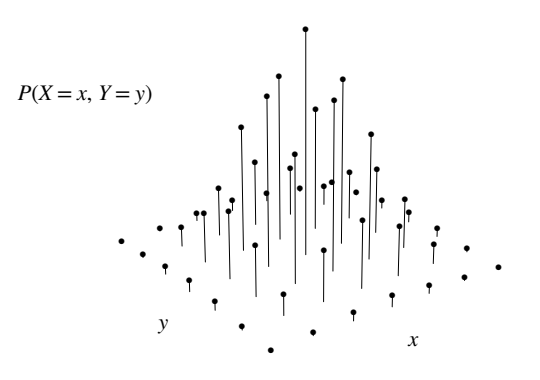
\(X,Y\)의 결합분포에서 \(Y\)의 가능한 값들에 대해 합하면 \(X\)만의 분포를 얻을 수 있다. 이것이 앞 장들에서 보아 온 익숙한 \(X\)의 확률질량함수이다. 결합분포의 맥락에서는 이것이 \(Y\)의 값과 관계없이 \(X\)만의 분포를 가리킴을 분명히 하기 위해 \(X\)의 주변분포 또는 무조건부분포라고 부른다.
정의 7.1.3 (주변 확률질량함수). 이산확률변수 \(X,Y\)에 대해 \(X\)의 주변 확률질량함수는
\[P(X=x)=\sum_y P(X=x,Y=y)\]
이다. \(X\)의 주변 확률질량함수는 \(X\)를 \(Y\)와 결합하여 보는 대신 개별적으로 볼 때의 \(X\)의 확률질량함수이다. 위 등식은 서로 배반인 경우들을 더하므로 확률의 공리에서 따른다. 결합확률질량함수를 \(X\)의 주변 확률질량함수로 바꾸기 위해 \(Y\)의 가능한 값들에 대해 합하는 연산을 \(Y\)를 주변화하여 없애기라고 한다.
결합확률질량함수에서 주변 확률질량함수를 얻는 과정은 그림 7.2에 나타나 있다. 더 분명하게 보기 위해 결합확률질량함수를 위에서 내려다본다. 결합확률질량함수의 각 열은 고정된 \(x\)에, 각 행은 고정된 \(y\)에 대응한다. 임의의 \(x\)에 대해 확률 \(P(X=x)\)는 결합확률질량함수의 해당 열에 있는 막대 높이의 합이다. 그 열의 모든 막대를 쌓아 올려 주변확률을 얻는다고 상상할 수 있다. 모든 \(x\)에 대해 이를 반복하면 굵게 표시된 주변 확률질량함수를 얻는다.
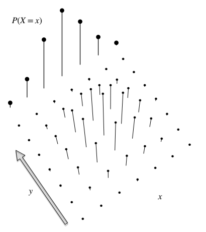
마찬가지로 \(Y\)의 주변 확률질량함수는 \(X\)의 가능한 모든 값에 대해 합하여 얻는다. 따라서 결합확률질량함수가 주어지면 \(Y\)를 주변화하여 없애 \(X\)의 확률질량함수를 얻거나, \(X\)를 주변화하여 없애 \(Y\)의 확률질량함수를 얻을 수 있다. 그러나 \(X\)와 \(Y\)의 주변 확률질량함수만 알고 있다면 추가 가정 없이는 결합확률질량함수를 복원할 수 없다. 그림 7.2에서 막대를 쌓는 방법은 분명하지만, 쌓인 막대를 다시 어떻게 나누어야 할지는 전혀 분명하지 않다!
결합분포에서 주변분포로 가는 또 다른 방법은 결합 누적분포함수를 이용하는 것이다. 이 경우 합 대신 극한을 취한다. \(X\)의 주변 누적분포함수는
\[F_X(x)=P(X\le x)=\lim_{y\to\infty}P(X\le x,Y\le y)=\lim_{y\to\infty}F_{X,Y}(x,y).\]
그러나 앞에서 말했듯 일반적으로 결합확률질량함수를 다루는 것이 더 쉽다.
이제 \(X\)의 값을 관측하고 이 정보를 반영하여 \(Y\)의 분포를 갱신하고 싶다고 하자. \(X\)에 관한 정보를 전혀 고려하지 않는 주변 확률질량함수 \(P(Y=y)\) 대신, \(X\)의 관측값을 \(x\)라 할 때 사건 \(X=x\)를 조건으로 하는 확률질량함수를 써야 한다. 이렇게 해서 자연스럽게 조건부 확률질량함수를 생각하게 된다.
정의 7.1.4 (조건부 확률질량함수). 이산확률변수 \(X,Y\)에 대해 \(X=x\)가 주어졌을 때 \(Y\)의 조건부 확률질량함수는
\[P(Y=y\mid X=x)=\frac{P(X=x,Y=y)}{P(X=x)}\]
이다. 이는 \(x\)를 고정한 상태에서 \(y\)의 함수로 본다. 분모는 양수여야 한다.
고정된 \(x\)에 대해 조건부 확률질량함수가 유효한 확률질량함수라는 점에 유의하자. 따라서 \(Y\)의 확률질량함수를 조건부 확률질량함수로 바꾸는 것을 제외하면 \(E(Y)\)를 정의했던 것과 같은 방식으로 \(X=x\)가 주어졌을 때 \(Y\)의 조건부기댓값을 정의할 수 있고 이를 \(E(Y\mid X=x)\)로 쓴다. 9장은 조건부기댓값을 다룬다.
그림 7.3은 조건부 확률질량함수의 정의를 설명한다. 사건 \(X=x\)를 조건으로 삼으려면 먼저 결합확률질량함수에서 \(X\)가 값 \(x\)를 취하는 위치의 수직 막대에 집중한다. 그림에서는 이 막대들이 굵게 표시되어 있다. 나머지 막대는 \(X=x\)가 발생했다는 지식과 양립하지 않으므로 모두 관련이 없다. 굵은 막대들의 높이의 합이 주변확률 \(P(X=x)\)이므로, 조건부 확률질량함수를 \(P(X=x)\)로 나누어 다시 정규화한다. 이렇게 하면 조건부 확률질량함수의 합이 1이 된다. 따라서 조건부확률이 확률이듯 조건부 확률질량함수도 확률질량함수이다. \(X\)가 취할 수 있는 값마다 \(Y\)의 조건부 확률질량함수가 다르게 있다는 점에 유의하자. 그림 7.3은 그중 하나만 강조한다.
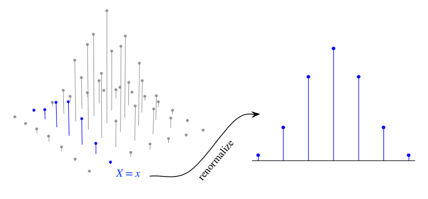
베이즈 정리를 이용해 \(X=x\)가 주어졌을 때 \(Y\)의 조건부분포를 \(Y=y\)가 주어졌을 때 \(X\)의 조건부분포와 연결할 수도 있다.
\[P(Y=y\mid X=x)=\frac{P(X=x\mid Y=y)P(Y=y)}{P(X=x)}.\]
또한 전체 확률의 법칙을 이용하면 주변 확률질량함수를 얻는 또 다른 방법이 있다. \(X\)의 주변 확률질량함수는 조건부 확률질량함수 \(P(X=x\mid Y=y)\)의 가중평균이며 가중치는 확률 \(P(Y=y)\)이다.1
\[P(X=x)=\sum_y P(X=x\mid Y=y)P(Y=y).\]
앞에서 본 그림들을 보완할 수 있도록 수치 예제 하나를 풀어 보자.
예제 7.1.5 (\(2\times2\) 표). 이산 결합분포의 가장 단순한 예는 \(X\)와 \(Y\)가 모두 베르누이 확률변수인 경우이다. 이때 결합확률질량함수는 네 값 \(P(X=1,Y=1)\), \(P(X=0,Y=1)\), \(P(X=1,Y=0)\), \(P(X=0,Y=0)\)에 의해 완전히 결정되므로 \(X,Y\)의 결합확률질량함수를 \(2\times2\) 표로 나타낼 수 있다.
이 아주 단순한 상황은 사실 통계학에서 중요한 위치를 차지한다. 이른바 분할표는 어떤 치료가 특정 결과와 관련되는지 연구할 때 자주 쓰이기 때문이다. 이런 상황에서 \(X\)는 치료를 받았는지의 지시확률변수, \(Y\)는 관심 있는 결과의 지시확률변수일 수 있다.
예를 들어 미국 인구에서 성인 남성 한 명을 무작위 추출한다고 하자. \(X\)를 추출된 사람이 현재 흡연자인지의 지시확률변수, \(Y\)를 그 사람이 일생 동안 어느 시점에 폐암에 걸리는지의 지시확률변수라 하자. 결합확률질량함수는 다음과 같다고 가정한다. 이 숫자들은 설명을 위한 것이며 실제 데이터에서 추정한 값이 아니다.
| \(Y=1\) | \(Y=0\) | |
|---|---|---|
| \(X=1\) | \(5/100\) | \(20/100\) |
| \(X=0\) | \(3/100\) | \(72/100\) |
주변확률 \(P(Y=1)\)을 얻으려면 표에서 \(Y=1\)인 두 칸의 확률을 더한다. \(P(Y=0)\), \(P(X=1)\), \(P(X=0)\)에도 같은 작업을 하고 표의 가장자리에 이 확률들을 적는다. 그래서 ‘주변’이라는 이름이 적절하다!
| \(Y=1\) | \(Y=0\) | 합계 | |
|---|---|---|---|
| \(X=1\) | \(5/100\) | \(20/100\) | \(25/100\) |
| \(X=0\) | \(3/100\) | \(72/100\) | \(75/100\) |
| 합계 | \(8/100\) | \(92/100\) | \(100/100\) |
이를 보면 \(X\)의 주변분포는 \(\operatorname{Bern}(0.25)\)이고 \(Y\)의 주변분포는 \(\operatorname{Bern}(0.08)\)이다. 말로 하면 그 사람이 현재 흡연자일 무조건부확률은 \(0.25\)이고 그가 폐암에 걸릴 무조건부확률은 \(0.08\)이다.
이제 \(X=1\), 즉 그 사람이 현재 흡연자라는 것을 관측했다고 하자. 그러면 폐암 위험에 대한 믿음을 갱신할 수 있다.
\[P(Y=1\mid X=1)=\frac{P(X=1,Y=1)}{P(X=1)}=\frac{5/100}{25/100}=0.2.\]
따라서 \(X=1\)이 주어졌을 때 \(Y\)의 조건부분포는 \(\operatorname{Bern}(0.2)\)이다. 비슷하게 계산하면 \(X=0\)이 주어졌을 때 \(Y\)의 조건부분포는 \(\operatorname{Bern}(0.04)\)이다. 즉 현재 흡연자가 폐암에 걸릴 확률은 \(0.2\)이지만 비흡연자의 확률은 \(0.04\)에 불과하다. \(\square\)
주의 7.1.6. ‘주변’이라는 말은 경제학과 통계학에서 반대되는 뜻을 갖는다. 경제학에서는 미분을 가리킨다. 예를 들어 한계수입은 판매량에 대한 수입의 도함수이다. 통계학에서는 적분이나 합을 가리키며, 앞의 예처럼 표의 가장자리에 합계를 적는 모습을 통해 직관적으로 이해할 수 있다.
결합분포, 주변분포, 조건부분포를 이해했으므로 3장에서 소개한 독립의 정의를 다시 살펴볼 수 있다.
정의 7.1.7 (이산확률변수의 독립). 확률변수 \(X,Y\)가 독립이라는 것은 모든 \(x,y\)에 대해
\[F_{X,Y}(x,y)=F_X(x)F_Y(y)\]
가 성립한다는 것이다. \(X,Y\)가 이산형이면 이는 모든 \(x,y\)에 대해
\[P(X=x,Y=y)=P(X=x)P(Y=y)\]
라는 조건과 동치이며, 또한 \(P(X=x)>0\)인 모든 \(x\)와 모든 \(y\)에 대해
\[P(Y=y\mid X=x)=P(Y=y)\]
라는 조건과도 동치이다.
이 장의 용어로 말하면 이 정의는 독립인 확률변수에 대해 결합 누적분포함수가 주변 누적분포함수들의 곱으로 분해되거나, 결합확률질량함수가 주변 확률질량함수들의 곱으로 분해된다는 뜻이다. 일반적으로 주변분포가 결합분포를 결정하지 못한다는 것을 기억하자. 이것이 애초에 결합분포를 연구하려 한 이유이다! 그러나 독립이라는 특수한 경우에는 결합분포를 정하는 데 주변분포만 있으면 충분하며, 주변 확률질량함수를 곱해 결합확률질량함수를 얻을 수 있다.
독립을 바라보는 또 다른 방법은 모든 조건부 확률질량함수가 주변 확률질량함수와 같다는 것이다. 즉 \(Y\)의 주변 확률질량함수에서 시작할 때 \(x\)가 무엇이든 \(X=x\)를 조건으로 삼아 갱신할 필요가 없다.
예제 7.1.8 (\(2\times2\) 표에서의 독립). 앞 예제의 표로 돌아가 이 두 관점을 이용해 \(X,Y\)가 독립이 아닌 이유를 살펴보자.
| \(Y=1\) | \(Y=0\) | 합계 | |
|---|---|---|---|
| \(X=1\) | \(5/100\) | \(20/100\) | \(25/100\) |
| \(X=0\) | \(3/100\) | \(72/100\) | \(75/100\) |
| 합계 | \(8/100\) | \(92/100\) | \(100/100\) |
첫째, 결합확률질량함수는 주변 확률질량함수들의 곱이 아니다. 예를 들어 \(P(X=1,Y=1)\ne P(X=1)P(Y=1)\)이다. \(P(X=x,Y=y)\ne P(X=x)P(Y=y)\)인 값의 쌍 \((x,y)\)를 단 하나만 찾아도 독립이 아님을 확인하기에 충분하다.
둘째, \(Y\)의 주변분포는 \(\operatorname{Bern}(0.08)\)이지만 \(X=1\)이 주어졌을 때의 \(Y\)의 조건부분포는 \(\operatorname{Bern}(0.2)\)이고 \(X=0\)이 주어졌을 때는 \(\operatorname{Bern}(0.04)\)임을 알았다. \(X\)의 값을 조건으로 삼으면 \(Y\)의 분포가 바뀌므로 \(X,Y\)는 독립이 아니다. 추출한 사람이 현재 흡연자인지 알면 그가 폐암에 걸릴 확률에 관한 정보를 얻는다.
\(X,Y\)가 종속이라는 것은 알았지만 이 연관성만으로 흡연이 폐암을 일으키는지 결론 내릴 수는 없다. 심슨의 역설에서 배웠듯 교란변수를 고려하지 않으면 오해를 부르는 연관성이 나타날 수 있다. \(\square\)
이 부분을 마무리하기 위해 이산 결합분포의 예를 하나 더 살펴보자. 우리는 이를 닭과 달걀 이야기라고 부른다. 이 이야기에서 알면 좋을 것을 조건으로 삼아 결합확률질량함수를 구하고, 그 결과 놀라운 독립성에 도달한다.
이야기 7.1.9 (닭과 달걀). 닭이 무작위 개수 \(N\)개의 알을 낳으며 \(N\sim\operatorname{Pois}(\lambda)\)라고 하자. 각 알은 독립적으로 확률 \(p\)로 부화하고 확률 \(q=1-p\)로 부화하지 않는다. 부화한 알의 수를 \(X\), 부화하지 않은 알의 수를 \(Y\)라 하면 \(X+Y=N\)이다. \(X,Y\)의 결합확률질량함수는 무엇인가?
풀이. 음이 아닌 정수 \(i,j\)에 대한 결합확률질량함수 \(P(X=i,Y=j)\)를 구한다. 총 알의 수 \(N\)이 주어졌을 때 각 알은 성공 확률 \(p\)인 독립 베르누이 시행이므로 이항분포의 이야기에 따라 조건부분포는 \(X\mid N=n\sim\operatorname{Bin}(n,p)\), \(Y\mid N=n\sim\operatorname{Bin}(n,q)\)이다. 알의 총수를 안다면 훨씬 편할 것이므로 알면 좋을 것을 조건으로 삼자. \(N\)을 조건으로 삼아 전체 확률의 법칙을 적용하면
\[P(X=i,Y=j)=\sum_{n=0}^{\infty}P(X=i,Y=j\mid N=n)P(N=n).\]
\(i,j\)를 고정하고 가능한 모든 \(n\)에 대해 더한다. 그러나 \(n=i+j\)가 아니면 \(X=i\)이고 \(Y=j\)일 수 없다. 예를 들어 부화한 알이 5개이고 부화하지 않은 알이 6개인 유일한 경우는 총 알이 11개인 경우이다. 따라서 \(n=i+j\)가 아니면 \(P(X=i,Y=j\mid N=n)=0\)이므로 합의 다른 모든 항을 없앨 수 있다.
\[P(X=i,Y=j)=P(X=i,Y=j\mid N=i+j)P(N=i+j).\]
\(N=i+j\)라는 조건 아래 사건 \(X=i\)와 \(Y=j\)는 정확히 같으므로 둘 다 쓰는 것은 중복이다. \(X=i\)를 남기고, 나머지는 이항 확률질량함수로 \(P(X=i\mid N=i+j)\)를, 포아송 확률질량함수로 \(P(N=i+j)\)를 대입하면 된다. 따라서
\[ \begin{aligned} P(X=i,Y=j)&=P(X=i\mid N=i+j)P(N=i+j)\\ &=\binom{i+j}{i}p^iq^j\cdot\frac{e^{-\lambda}\lambda^{i+j}}{(i+j)!}\\ &=\frac{e^{-\lambda p}(\lambda p)^i}{i!}\cdot\frac{e^{-\lambda q}(\lambda q)^j}{j!}. \end{aligned} \]
결합확률질량함수는 \(i\)의 함수인 \(\operatorname{Pois}(\lambda p)\) 확률질량함수와 \(j\)의 함수인 \(\operatorname{Pois}(\lambda q)\) 확률질량함수의 곱으로 분해된다. 이는 두 가지 우아한 사실을 알려 준다. (1) 결합확률질량함수가 주변 확률질량함수들의 곱이므로 \(X,Y\)는 독립이다. (2) \(X\sim\operatorname{Pois}(\lambda p)\), \(Y\sim\operatorname{Pois}(\lambda q)\)이다.
처음에는 \(X\)가 \(Y\)와 독립이라는 것이 직관에 매우 어긋나 보일 수 있다. 알이 많이 부화했다는 것을 알면 부화하지 않은 알은 아마 많지 않다는 뜻이 아닐까? 알의 수가 고정되어 있다면 이런 독립성은 불가능하다. 부화한 알의 수를 알면 부화하지 않은 알의 수가 완전히 결정되기 때문이다. 그러나 이 예에서는 알의 수가 포아송 분포를 따르는 무작위 수이고, 이는 마침 \(X,Y\)가 무조건부로 독립이 되게 하는 적절한 종류의 무작위성이다. 이는 포아송 분포의 매우 특별한 성질이다. \(\square\)
닭과 달걀 이야기는 4장의 다음 결과를 보완한다.
정리 7.1.10. \(X\sim\operatorname{Pois}(\lambda p)\), \(Y\sim\operatorname{Pois}(\lambda q)\)이고 \(X,Y\)가 독립이면 \(N=X+Y\sim\operatorname{Pois}(\lambda)\)이고 \(X\mid N=n\sim\operatorname{Bin}(n,p)\)이다.
닭과 달걀 이야기에 의해 이제 이 정리의 역도 얻었다.
정리 7.1.11. \(N\sim\operatorname{Pois}(\lambda)\)이고 \(X\mid N=n\sim\operatorname{Bin}(n,p)\)이면 \(X\sim\operatorname{Pois}(\lambda p)\), \(Y=N-X\sim\operatorname{Pois}(\lambda q)\)이고 \(X,Y\)는 독립이다.
주의 7.1.12. 닭과 달걀 이야기에서 “\(P(X=x\mid N=n)=P(X=x\mid X+Y=n)=P(X=x\mid Y=n-x)\)”라고 하는 것은 옳지 않다. \(P(X=x\mid N=n)\)에서는 \(X=x\)를 조건으로 삼고 있지 않기 때문이다. 실제로 \(P(X=x\mid N=n)\)은 \(\operatorname{Bin}(n,p)\)의 확률질량함수이고, \(P(X=x\mid Y=n-x)=P(X=x)\)는 \(\operatorname{Pois}(\lambda p)\)의 확률질량함수이다. 조건부 기호의 오른쪽에서 \(X\)에 \(x\)를 대입하는 이 실수는 \(X\)와 \(x\), 그리고 조건부 기호의 왼쪽과 오른쪽을 신중하게 구분하는 일이 얼마나 중요한지 보여 준다.
7.1.2 연속형
이산 결합분포를 이해하고 나면 연속 결합분포를 다루는 일은 그리 어렵지 않다. 이제 익숙한 대체를 하면 된다. 합을 적분으로, 확률질량함수를 확률밀도함수로 바꾸되 개별 점의 확률은 이제 0임을 기억한다.
형식적으로 \(X,Y\)가 연속 결합분포를 가지려면 결합 누적분포함수
\[F_{X,Y}(x,y)=P(X\le x,Y\le y)\]
가 \(x,y\)에 대해 미분 가능해야 한다고 요구한다. \(x,y\)에 대한 편도함수를 결합확률밀도함수라고 한다. 결합 누적분포함수와 마찬가지로 결합확률밀도함수도 결합분포를 결정한다.2
정의 7.1.13 (결합확률밀도함수). 연속확률변수 \(X,Y\)의 결합 누적분포함수가 \(F_{X,Y}\)이면 결합확률밀도함수는 결합 누적분포함수의 \(x,y\)에 대한 도함수이다.
\[f_{X,Y}(x,y)=\frac{\partial^2}{\partial x\partial y}F_{X,Y}(x,y).\]
유효한 결합확률밀도함수는 음이 아니고 적분값이 1이어야 한다.
\[f_{X,Y}(x,y)\ge0,\qquad\int_{-\infty}^{\infty}\int_{-\infty}^{\infty}f_{X,Y}(x,y)\,dx\,dy=1.\]
일변량의 경우 확률밀도함수는 구간의 확률을 얻기 위해 적분하는 함수였다. 마찬가지로 두 확률변수의 결합확률밀도함수는 2차원 영역의 확률을 얻기 위해 적분하는 함수이다. 예를 들어
\[P(X<3,1<Y<4)=\int_1^4\int_{-\infty}^3 f_{X,Y}(x,y)\,dx\,dy.\]
일반적인 영역 \(A\subseteq\mathbb R^2\)에 대해
\[P((X,Y)\in A)=\iint_A f_{X,Y}(x,y)\,dx\,dy.\]
그림 7.4는 두 확률변수의 결합확률밀도함수의 가능한 모습을 그린 것이다. 연속확률변수에서 늘 그렇듯 한 점에서 곡면의 높이 \(f_{X,Y}(x,y)\)는 확률이 아님을 기억해야 한다. 평면의 특정 점의 확률은 0이다. 이제 차원이 하나 높아졌으므로 평면의 선이나 곡선의 확률도 0이다. 0이 아닌 확률을 얻으려면 \(xy\) 평면의 양의 넓이를 가진 영역에 대해 적분해야 한다.
결합확률밀도함수를 영역 \(A\)에 걸쳐 적분할 때 우리는 결합확률밀도함수 곡면 아래이면서 \(A\) 위에 있는 부피를 계산한다. 따라서 확률은 결합확률밀도함수 아래의 부피로 표현된다. 유효한 결합확률밀도함수 아래의 전체 부피는 1이다.
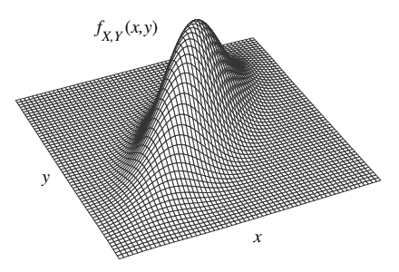
이산형에서는 결합확률질량함수에서 \(Y\)의 가능한 모든 값에 대해 더하여 \(X\)의 주변 확률질량함수를 얻는다. 연속형에서는 결합확률밀도함수에서 \(Y\)의 가능한 모든 값에 대해 적분하여 \(X\)의 주변 확률밀도함수를 얻는다.
정의 7.1.14 (주변 확률밀도함수). 결합확률밀도함수 \(f_{X,Y}\)를 갖는 연속확률변수 \(X,Y\)에 대해 \(X\)의 주변 확률밀도함수는
\[f_X(x)=\int_{-\infty}^{\infty}f_{X,Y}(x,y)\,dy\]
이다. 이는 \(X\)를 \(Y\)와 결합하여 보는 대신 개별적으로 볼 때의 \(X\)의 확률밀도함수이다.
표기를 단순하게 하기 위해 주로 \(n\)개가 아니라 두 확률변수의 결합분포를 보았지만, 주변화는 임의의 개수의 변수에 대해 유사하게 작동한다. 예를 들어 \(X,Y,Z,W\)의 결합확률밀도함수가 있는데 \(X,W\)의 결합확률밀도함수를 원한다면 \(Y,Z\)의 가능한 모든 값에 대해 적분하기만 하면 된다.
\[f_{X,W}(x,w)=\int_{-\infty}^{\infty}\int_{-\infty}^{\infty}f_{X,Y,Z,W}(x,y,z,w)\,dy\,dz.\]
개념적으로는 쉽다. 원하지 않는 변수들에 대해 적분하면 원하는 변수들의 결합확률밀도함수를 얻는다. 하지만 실제 계산은 쉬울 수도 있고 어렵기도 하다.
두 확률변수 \(X,Y\)의 결합분포로 돌아가 \(X\)의 값을 관측한 후 조건부 확률밀도함수를 사용해 \(Y\)의 분포를 어떻게 갱신할지 생각해 보자.
정의 7.1.15 (조건부 확률밀도함수). 결합확률밀도함수 \(f_{X,Y}\)를 갖는 연속확률변수 \(X,Y\)에 대해 \(X=x\)가 주어졌을 때 \(Y\)의 조건부 확률밀도함수는 \(f_X(x)>0\)인 모든 \(x\)에 대해
\[f_{Y\mid X}(y\mid x)=\frac{f_{X,Y}(x,y)}{f_X(x)}\]
이다. 이는 \(x\)를 고정한 상태에서 \(y\)의 함수로 본다. 모든 실수 \(x\)에 대해 \(f_{Y\mid X}(y\mid x)\)를 잘 정의하기 위한 관례로, \(f_X(x)=0\)인 모든 \(x\)에서 \(f_{Y\mid X}(y\mid x)=0\)으로 둔다.
표기 7.1.16. 모든 \(f\)에 붙이는 아래첨자는 서로 다른 함수 세 개를 다루고 있음을 상기시키기 위한 것이다. \(f\)를 결합확률밀도함수, \(h\)를 \(X\)의 주변 확률밀도함수, \(g\)를 \(X=x\)가 주어졌을 때 \(Y\)의 조건부 확률밀도함수로 하여 \(g(y\mid x)=f(x,y)/h(x)\)라고 써도 되지만, 어느 문자가 어느 함수를 나타내는지 기억하기가 더 어려워진다.
그림 7.5는 조건부 확률밀도함수의 정의를 설명한다. 관측된 \(X\)의 값에 대응하는 결합확률밀도함수의 수직 단면을 취한다. 이 단면 아래의 전체 면적은 \(f_X(x)\)이므로 조건부 확률밀도함수 아래 면적이 1이 되도록 \(f_X(x)\)로 나눈다. 따라서 \(X=x\)가 주어졌을 때 \(Y\)의 조건부 확률밀도함수는 \(X\)의 지지집합에 속하는 \(x\)에 대해 유효한 확률밀도함수의 성질을 만족한다.3
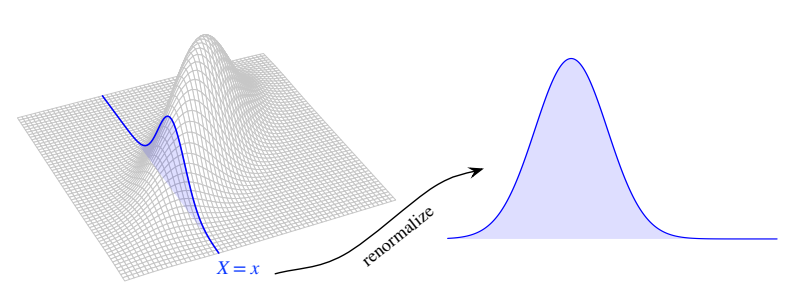
주의 7.1.17. \(X\)가 연속확률변수이면 사건 \(X=x\)의 확률은 0인데 어떻게 이를 조건으로 삼는다고 말할 수 있을까? 엄밀히 말하면 실제로는 \(x\)를 포함하는 작은 구간에 \(X\)가 속하는 사건, 예컨대 \(X\in(x-\epsilon,x+\epsilon)\)을 조건으로 삼은 다음 \(\epsilon\)이 오른쪽에서 0으로 접근하는 극한을 취한다. 이 기술적인 문제를 놓고 크게 신경 쓰지는 않겠다. 다행히 베이즈 정리와 같은 많은 중요한 결과가 연속형에서도 기대하는 그대로 작동한다.4
조건부 확률밀도함수 \(f_{Y\mid X}\)와 이에 대응하는 주변 확률밀도함수 \(f_X\)가 있으면 결합확률밀도함수 \(f_{X,Y}\)를 복원할 수 있다.
\[f_{X,Y}(x,y)=f_{Y\mid X}(y\mid x)f_X(x).\]
마찬가지로 \(f_{X\mid Y}\)와 \(f_Y\)가 있어도 결합확률밀도함수를 복원할 수 있다.
\[f_{X,Y}(x,y)=f_{X\mid Y}(x\mid y)f_Y(y).\]
이를 이용하면 베이즈 정리와 전체 확률의 법칙의 연속형을 전개할 수 있다. 연속형은 확률 대신 확률밀도함수를, 합 대신 적분을 쓴다는 점을 제외하면 이산형과 유사하다.
정리 7.1.18 (베이즈 정리와 전체 확률의 법칙의 연속형). 연속확률변수 \(X,Y\)에 대해 베이즈 정리의 연속형은
\[f_{Y\mid X}(y\mid x)=\frac{f_{X\mid Y}(x\mid y)f_Y(y)}{f_X(x)},\qquad f_X(x)>0\]
이고, 전체 확률의 법칙의 연속형은
\[f_X(x)=\int_{-\infty}^{\infty}f_{X\mid Y}(x\mid y)f_Y(y)\,dy\]
이다.
증명. 조건부 확률밀도함수의 정의에 따라
\[f_{Y\mid X}(y\mid x)f_X(x)=f_{X,Y}(x,y)=f_{X\mid Y}(x\mid y)f_Y(y).\]
\(f_X(x)\)로 나누면 베이즈 정리의 연속형이 곧바로 나온다. \(y\)에 대해 적분하면 전체 확률의 법칙의 연속형도 곧바로 나온다.
\[f_X(x)=\int_{-\infty}^{\infty}f_{X,Y}(x,y)\,dy=\int_{-\infty}^{\infty}f_{X\mid Y}(x\mid y)f_Y(y)\,dy.\qquad\blacksquare\]
호기심 삼아 전체 확률의 법칙을 증명할 때 대신 \(f_{X,Y}(x,y)\)의 다른 표현을 대입했다면 어떻게 되었을지 살펴보자.
\[f_X(x)=\int_{-\infty}^{\infty}f_{X,Y}(x,y)\,dy=\int_{-\infty}^{\infty}f_{Y\mid X}(y\mid x)f_X(x)\,dy=f_X(x)\int_{-\infty}^{\infty}f_{Y\mid X}(y\mid x)\,dy.\]
이는 단지 \(f_X(x)>0\)인 모든 \(x\)에서
\[\int_{-\infty}^{\infty}f_{Y\mid X}(y\mid x)\,dy=1\]
임을 말하며, 조건부 확률밀도함수의 적분값이 1이어야 한다는 사실을 확인해 준다.
이제 두 이산확률변수와 두 연속확률변수 각각에 대한 베이즈 정리와 전체 확률의 법칙을 갖게 되었다. 더 좋은 점은 하나는 이산형이고 하나는 연속형인 경우에도 해당 형태가 있다는 것이다. 이산형을 이해하고 나면 적절한 곳에서 확률을 확률밀도함수로 대체한다는 점을 제외하면 유사하므로 다른 형태들도 기억하고 쓰기 쉽다. 예를 들어 이산형 \(X\)와 연속형 \(Y\)에 대해 전체 확률의 법칙은
\[P(X=x)=\int_{-\infty}^{\infty}P(X=x\mid Y=y)f_Y(y)\,dy\]
이다. \(X\)를 사건 \(A\)의 지시확률변수로, \(x=1\)로 두면 연속확률변수 \(Y\)를 조건으로 삼아 일반적인 확률 \(P(A)\)를 표현할 수 있다.
\[P(A)=\int_{-\infty}^{\infty}P(A\mid Y=y)f_Y(y)\,dy.\]
베이즈 정리의 네 가지 형태는 다음 표와 같다.
| \(Y\) 이산형 | \(Y\) 연속형 | |
|---|---|---|
| \(X\) 이산형 | \(P(Y=y\mid X=x)=\dfrac{P(X=x\mid Y=y)P(Y=y)}{P(X=x)}\) | \(f_Y(y\mid X=x)=\dfrac{P(X=x\mid Y=y)f_Y(y)}{P(X=x)}\) |
| \(X\) 연속형 | \(P(Y=y\mid X=x)=\dfrac{f_X(x\mid Y=y)P(Y=y)}{f_X(x)}\) | \(f_{Y\mid X}(y\mid x)=\dfrac{f_{X\mid Y}(x\mid y)f_Y(y)}{f_X(x)}\) |
전체 확률의 법칙의 네 가지 형태는 다음 표와 같다. 첫째 행은 \(P(X=x)\)의 표현이고 둘째 행은 \(f_X(x)\)의 표현이다.
| \(Y\) 이산형 | \(Y\) 연속형 | |
|---|---|---|
| \(X\) 이산형 | \(\sum_yP(X=x\mid Y=y)P(Y=y)\) | \(\int_{-\infty}^{\infty}P(X=x\mid Y=y)f_Y(y)\,dy\) |
| \(X\) 연속형 | \(\sum_y f_X(x\mid Y=y)P(Y=y)\) | \(\int_{-\infty}^{\infty}f_{X\mid Y}(x\mid y)f_Y(y)\,dy\) |
마지막으로 연속확률변수의 독립을 정의한 뒤 구체적인 예로 넘어가자. 이산형과 마찬가지로 연속확률변수의 독립도 두 방식으로 볼 수 있다. 하나는 결합 누적분포함수가 주변 누적분포함수의 곱으로 분해되거나 결합확률밀도함수가 주변 확률밀도함수의 곱으로 분해된다는 것이다. 다른 하나는 \(X=x\)가 주어졌을 때 \(Y\)의 조건부 확률밀도함수가 \(Y\)의 주변 확률밀도함수와 같으므로 \(X\)를 조건으로 삼아도 \(Y\)에 관한 정보가 제공되지 않는다는 것이다.
정의 7.1.19 (연속확률변수의 독립). 확률변수 \(X,Y\)가 독립이라는 것은 모든 \(x,y\)에 대해
\[F_{X,Y}(x,y)=F_X(x)F_Y(y)\]
가 성립한다는 것이다. \(X,Y\)가 결합확률밀도함수 \(f_{X,Y}\)를 갖는 연속확률변수이면 이는 모든 \(x,y\)에 대해
\[f_{X,Y}(x,y)=f_X(x)f_Y(y)\]
라는 조건과 동치이며, 또한 \(f_X(x)>0\)인 모든 \(x,y\)에 대해
\[f_{Y\mid X}(y\mid x)=f_Y(y)\]
라는 조건과도 동치이다.5
주의 7.1.20. \(Y\)의 주변 확률밀도함수 \(f_Y(y)\)는 \(y\)만의 함수이며 어떤 방식으로도 \(x\)에 의존할 수 없다. 조건부 확률밀도함수 \(f_{Y\mid X}(y\mid x)\)는 일반적으로 \(x\)에 의존할 수 있다. 독립이라는 특수한 경우에만 \(f_{Y\mid X}(y\mid x)\)가 \(x\)에 의존하지 않는다.
때로는 \(X,Y\)의 결합확률밀도함수가 \(x\)의 함수와 \(y\)의 함수의 곱으로 분해되지만, 이 함수들이 주변 확률밀도함수인지 또는 유효한 확률밀도함수인지조차 미리 알지 못한다. 다음 결과는 이 상황을 다룬다.
명제 7.1.21. \(X,Y\)의 결합확률밀도함수 \(f_{X,Y}\)가 모든 \(x,y\)에 대해
\[f_{X,Y}(x,y)=g(x)h(y)\]
로 분해되며 \(g,h\)는 음이 아닌 함수라고 하자. 그러면 \(X,Y\)는 독립이다. 또한 \(g,h\) 중 어느 하나가 유효한 확률밀도함수이면 다른 하나도 유효한 확률밀도함수이며, \(g,h\)는 각각 \(X,Y\)의 주변 확률밀도함수이다. 이산형에도 유사한 결과가 성립한다.
증명. \(c=\int_{-\infty}^{\infty}h(y)\,dy\)라 하자. \(c\)를 곱하고 나누면
\[f_{X,Y}(x,y)=cg(x)\cdot\frac{h(y)}c\]
로 쓸 수 있다. 이 표현의 요점은 \(h(y)/c\)가 유효한 확률밀도함수라는 것이다. 따라서 \(X\)의 주변 확률밀도함수는
\[f_X(x)=\int_{-\infty}^{\infty}f_{X,Y}(x,y)\,dy=cg(x)\int_{-\infty}^{\infty}\frac{h(y)}c\,dy=cg(x).\]
주변 확률밀도함수는 유효하므로 \(\int_{-\infty}^{\infty}cg(x)\,dx=1\)이다. \(h\)의 적분을 알면 \(g\)의 적분은 덤으로 얻었다! 그러면 \(Y\)의 주변 확률밀도함수는
\[f_Y(y)=\int_{-\infty}^{\infty}f_{X,Y}(x,y)\,dx=\frac{h(y)}c\int_{-\infty}^{\infty}cg(x)\,dx=\frac{h(y)}c.\]
따라서 \(X,Y\)는 독립이고 각각의 확률밀도함수는 \(cg(x)\)와 \(h(y)/c\)이다. \(g\) 또는 \(h\)가 이미 유효한 확률밀도함수라면 \(c=1\)이므로 다른 함수도 유효한 확률밀도함수이다. \(\blacksquare\)
주의 7.1.22. 위 명제에서는 \(f_{X,Y}(x,y)>0\)인 \((x,y)\)에서만이 아니라 평면 \(\mathbb R^2\)의 모든 \((x,y)\)에서 결합확률밀도함수가 \(x\)의 함수와 \(y\)의 함수의 곱으로 분해되어야 한다. 그 이유는 다음 예에서 설명한다.
연속 결합분포의 간단한 경우는 결합확률밀도함수가 평면의 어떤 영역에서 일정한 경우이다. 다음 예에서는 정사각형에서 일정한 결합확률밀도함수와 원판에서 일정한 결합확률밀도함수를 비교한다.
예제 7.1.23 (평면 영역 위의 균등분포). \((X,Y)\)가 정사각형 \(\{(x,y):x,y\in[0,1]\}\) 위의 완전히 무작위인 점이라고 하자. 즉 \(X,Y\)의 결합확률밀도함수가 정사각형에서 일정하고 그 밖에서는 0이다.
\[f_{X,Y}(x,y)=\begin{cases}1,&x,y\in[0,1],\\0,&\text{그 밖의 경우}.\end{cases}\]
결합확률밀도함수의 적분값이 1이 되도록 상수 1을 선택한다. 이 분포를 정사각형 위의 균등분포라고 한다.
직관적으로 \(X,Y\)의 주변분포는 각각 \(\operatorname{Unif}(0,1)\)일 것 같다. 다음을 계산하여 확인할 수 있다.
\[f_X(x)=\int_0^1 f_{X,Y}(x,y)\,dy=\int_0^1 1\,dy=1,\qquad 0\le x\le1.\]
\(f_Y\)도 마찬가지이다. 또한 결합확률밀도함수가 주변 확률밀도함수의 곱으로 분해되므로 \(X,Y\)는 독립이다. 이는 단순히 \(1=1\cdot1\)로 귀결되지만, \(X\)의 값이 가능한 \(Y\) 값을 제한하지 않는다는 점에 주목하는 것이 중요하다. 따라서 \(X=x\)가 주어졌을 때 \(Y\)의 조건부분포는 \(x\)에 관계없이 \(\operatorname{Unif}(0,1)\)이다.
이제 \((X,Y)\)가 단위원판 \(\{(x,y):x^2+y^2\le1\}\) 위의 완전히 무작위인 점으로 결합확률밀도함수가
\[f_{X,Y}(x,y)=\begin{cases}1/\pi,&x^2+y^2\le1,\\0,&\text{그 밖의 경우}\end{cases}\]
라고 하자. 다시 상수 \(1/\pi\)는 결합확률밀도함수의 적분값이 1이 되도록 선택한다. 평면 영역에 걸친 1의 적분은 그 영역의 넓이이므로 이 값을 얻는다.
일반적으로 \(X\)의 값을 알면 가능한 \(Y\) 값이 제한되므로 \(X,Y\)는 독립이 아니다. \(|X|\)가 커질수록 \(Y\)가 속할 수 있는 범위는 더 작아진다. 원판 안의 모든 \((x,y)\)에 대해 상수함수 \(g(x)=1/\pi\), \(h(y)=1\)을 이용해 \(f_{X,Y}(x,y)=g(x)h(y)\)가 된다는 사실에서 독립을 결론 내린다면 주의 7.1.22의 실수를 심각하게 저지르게 된다. 정의로부터 독립이 아님을 보려면 예를 들어 \((0.9,0.9)\)가 단위원판 밖에 있으므로 \(f_{X,Y}(0.9,0.9)=0\)이지만, \(0.9\)는 \(X,Y\) 양쪽 지지집합에 속하므로 \(f_X(0.9)f_Y(0.9)\ne0\)임을 보라.
이제 \(X\)의 주변분포는
\[f_X(x)=\int_{-\sqrt{1-x^2}}^{\sqrt{1-x^2}}\frac1\pi\,dy=\frac2\pi\sqrt{1-x^2},\qquad -1\le x\le1.\]
대칭성에 의해 \(f_Y(y)=\frac2\pi\sqrt{1-y^2}\)이다. \(X,Y\)의 주변분포는 \([-1,1]\) 위의 균등분포가 아니다. 오히려 \(X,Y\)는 \(\pm1\) 부근보다 0 부근에 있을 가능성이 더 높다.
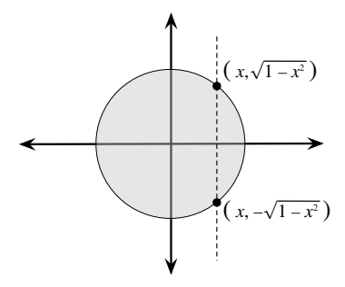
\(X=x\)를 관측했다고 하자. 그림 7.6처럼 이는 \(Y\)가 \([-\sqrt{1-x^2},\sqrt{1-x^2}]\) 구간에 속하도록 제한한다. 구체적으로 \(X=x\)가 주어졌을 때 \(Y\)의 조건부분포는
\[f_{Y\mid X}(y\mid x)=\frac{f_{X,Y}(x,y)}{f_X(x)}=\frac{1/\pi}{(2/\pi)\sqrt{1-x^2}}=\frac1{2\sqrt{1-x^2}}\]
이며 이는 \(-\sqrt{1-x^2}\le y\le\sqrt{1-x^2}\)에서 성립하고 그 밖에서는 0이다. 이 조건부 확률밀도함수는 \(y\)의 함수로 볼 때 상수이므로, \(Y\)의 조건부분포는 구간 \([-\sqrt{1-x^2},\sqrt{1-x^2}]\) 위의 균등분포이다. 조건부 확률밀도함수가 \(x\)에 의존한다는 사실은 \(X,Y\)가 독립이 아님을 확인해 준다.6
일반적으로 평면 영역 \(R\) 위의 균등분포는 \(R\) 안에서 일정하고 밖에서는 0인 결합확률밀도함수를 갖도록 정의한다. 상수는 \(R\)의 넓이의 역수이다. \(R\)이 직사각형 \(\{(x,y):a\le x\le b,c\le y\le d\}\)이면 \(X,Y\)는 독립이다. 원판과 달리 직사각형의 수직 단면은 모두 같은 모양이기 때문이다. 그러나 \(X\)의 값이 \(Y\)의 가능한 값을 제한하거나 그 반대인 영역에서는 \(X,Y\)가 독립이 아니다. \(\square\)
예제 7.1.24 (비율이 다른 지수 확률변수 비교). \(T_1\sim\operatorname{Expo}(\lambda_1)\)과 \(T_2\sim\operatorname{Expo}(\lambda_2)\)가 독립이라 하자. \(P(T_1<T_2)\)를 구하라. 예를 들어 \(T_1\)은 냉장고의 수명, \(T_2\)는 가스레인지의 수명일 수 있다. 이 수명들이 지수분포를 따른다고 기꺼이 가정한다면 \(P(T_1<T_2)\)는 냉장고가 가스레인지보다 먼저 고장 날 확률이다. 5장에서 \(\min(T_1,T_2)\sim\operatorname{Expo}(\lambda_1+\lambda_2)\)임을 알았다. 이는 첫 가전제품의 고장이 언제 발생하는지 알려 주지만, 어느 제품이 먼저 고장 날지에도 관심이 있을 수 있다.
풀이. \(t_1>0,t_2>0,t_1<t_2\)인 모든 \((t_1,t_2)\)로 이루어진 적절한 영역에 걸쳐 \(T_1,T_2\)의 결합확률밀도함수를 적분하면 된다. 그러면
\[ \begin{aligned} P(T_1<T_2)&=\int_0^\infty\int_0^{t_2}\lambda_1e^{-\lambda_1t_1}\lambda_2e^{-\lambda_2t_2}\,dt_1\,dt_2\\ &=\int_0^\infty(1-e^{-\lambda_1t_2})\lambda_2e^{-\lambda_2t_2}\,dt_2\\ &=1-\int_0^\infty\lambda_2e^{-(\lambda_1+\lambda_2)t_2}\,dt_2\\ &=1-\frac{\lambda_2}{\lambda_1+\lambda_2}=\frac{\lambda_1}{\lambda_1+\lambda_2}. \end{aligned} \]
\(\lambda_1,\lambda_2\)를 비율로 해석하면 이 결과는 직관적으로도 말이 된다. 예를 들어 냉장고의 고장률이 가스레인지의 두 배라면 냉장고가 먼저 고장 날 오즈가 2 대 1이라는 뜻이다. 간단히 확인해 보면 \(\lambda_1=\lambda_2\)일 때 답은 \(1/2\)가 되며, 이는 대칭성에 의해 반드시 성립해야 한다.
같은 결과를 얻는 다른 방법은 전체 확률의 법칙을 이용해 \(T_1\) 또는 \(T_2\)를 조건으로 삼는 것이다. 포아송 과정 이야기를 이용하는 세 번째 방법은 13장에 있다. \(\square\)
이 절의 마지막 연속형 예제는 \(X,Y\)의 결합분포를 이용해 \(X,Y\)의 함수의 분포를 어떻게 유도할 수 있는지 보여 준다.
예제 7.1.25 (코시 확률밀도함수). \(X,Y\)가 독립이고 동일한 \(\mathcal N(0,1)\) 분포를 따르며 \(T=X/Y\)라 하자. \(Y=0\)인 경우 \(T\)를 임의로 정의할 수 있다. \(P(Y=0)=0\)이므로 이 경우 어떻게 정의하더라도 \(T\)의 분포에는 영향을 주지 않는다. \(T\)의 분포는 코시 분포라는 유명한 이름 붙은 분포이며, 이후 장들에서 다시 만날 것이다. 우선 \(T\)의 확률밀도함수를 구하라.
풀이. 먼저 \(T\)의 누적분포함수를 구한 뒤 미분해 확률밀도함수를 얻겠다. 표준정규분포의 대칭성에 의해 \(X/Y\)와 \(X/|Y|\)의 분포가 같으므로
\[F_T(t)=P(T\le t)=P\left(\frac XY\le t\right)=P\left(\frac X{|Y|}\le t\right).\]
이제 \(|Y|\)는 음이 아니므로 부등호 방향을 바꾸지 않고 양변에 곱할 수 있다. 따라서 구하고자 하는 것은
\[F_T(t)=P(X\le t|Y|)\]
이다. \(X\le t|Y|\)인 영역에 걸쳐 \(X,Y\)의 결합확률밀도함수를 적분해 이 확률을 계산한다. 독립이므로 결합확률밀도함수는 주변 확률밀도함수의 곱이다.
\[F_T(t)=\int_{-\infty}^{\infty}\int_{-\infty}^{t|y|}\frac1{\sqrt{2\pi}}e^{-x^2/2}\frac1{\sqrt{2\pi}}e^{-y^2/2}\,dx\,dy.\]
안쪽 적분 구간, 즉 \(x\)의 구간은 \(y\)에 의존하지만 바깥쪽 적분 구간, 즉 \(y\)의 구간은 \(x\)에 의존할 수 없다는 점에 유의하자. 다중적분의 구간에 관해서는 수학 부록을 보라. 조금 조작하면 이중적분을 단일 적분으로 줄일 수 있다.
\[ \begin{aligned} F_T(t)&=\int_{-\infty}^{\infty}\frac1{\sqrt{2\pi}}e^{-y^2/2}\left(\int_{-\infty}^{t|y|}\frac1{\sqrt{2\pi}}e^{-x^2/2}\,dx\right)dy\\ &=\int_{-\infty}^{\infty}\frac1{\sqrt{2\pi}}e^{-y^2/2}\Phi(t|y|)\,dy =\sqrt{\frac2\pi}\int_0^\infty e^{-y^2/2}\Phi(ty)\,dy. \end{aligned} \]
또는 전체 확률의 법칙을 이용하면 이중적분 없이 같은 결과를 얻을 수 있다. \(I\)를 사건 \(X\le t|Y|\)의 지시확률변수라 하면 다시
\[P(I=1)=\int_{-\infty}^{\infty}P(I=1\mid Y=y)f_Y(y)\,dy=\int_{-\infty}^{\infty}\frac1{\sqrt{2\pi}}e^{-y^2/2}\Phi(t|y|)\,dy.\]
이제 계산할 줄 모르는 적분에 막힌 것처럼 보인다. 다행히 우리가 구하라고 요청받은 것은 누적분포함수가 아니라 확률밀도함수이므로, 적분을 계산하는 대신 \(t\)에 대해 미분하면 된다. 더미 변수 \(y\)에 대해 미분하는 것이 아니다. 여기에서 만족되는 약한 기술적 조건 아래 적분과 미분의 순서를 바꿀 수 있다. 이 기법을 적분 기호 아래에서의 미분이라고 한다. 그러면
\[ \begin{aligned} f_T(t)=F_T'(t)&=\sqrt{\frac2\pi}\int_0^\infty\frac\partial{\partial t}\left(e^{-y^2/2}\Phi(ty)\right)dy\\ &=\sqrt{\frac2\pi}\int_0^\infty ye^{-y^2/2}\phi(ty)\,dy\\ &=\frac1\pi\int_0^\infty ye^{-(1+t^2)y^2/2}\,dy =\frac1{\pi(1+t^2)}. \end{aligned} \]
마지막 단계에서는 \(u=(1+t^2)y^2/2\), \(du=(1+t^2)y\,dy\)로 치환했다. 따라서 \(T\)의 확률밀도함수는
\[f_T(t)=\frac1{\pi(1+t^2)},\qquad t\in\mathbb R.\]
\(\int_{-\infty}^{\infty}(1+t^2)^{-1}dt=\arctan(\infty)-\arctan(-\infty)=\pi\)이므로 유효한 확률밀도함수를 얻었다. 누적분포함수도 구하고 싶다면 적절한 구간에서 밀도를 적분할 수 있다.
\[F_T(t)=\int_{-\infty}^t\frac1{\pi(1+u^2)}\,du=\frac1\pi\arctan(t)+\frac12.\]
앞에서 언급했듯 \(T\)의 분포는 코시 분포라고 한다. 코시 밀도는 정규분포의 종 모양 곡선과 비슷하지만 꼬리가 0으로 더 천천히 감소한다. 그림 7.7은 코시 확률밀도함수와 표준정규 확률밀도함수를 겹쳐 보여 준다. 코시 밀도의 더 두꺼운 꼬리가 분명하다.
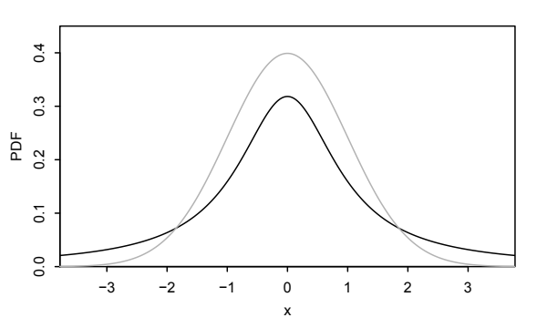
코시 분포의 흥미로운 사실은 밀도가 0을 중심으로 대칭임에도 기댓값이 존재하지 않는다는 것이다. 적분 \(\int_{-\infty}^{\infty}t/[\pi(1+t^2)]\,dt\)가 발산하기 때문이다. 큰 \(t\)에 대해 \(t/(1+t^2)\approx1/t\)이고 \(\int_1^\infty1/t\,dt=\infty\)임에 유의하자. “\(E(X/Y)=E(X)E(1/Y)=0\cdot E(1/Y)=0\)”이라고 쓰는 것은 심각한 실수이다. \(E(1/Y)\)도 존재하지 않기 때문이다. \(\square\)
7.1.3 혼합형
이산확률변수 하나와 연속확률변수 하나의 결합분포에 관심이 있을 수도 있다. 베이즈 정리와 전체 확률의 법칙의 네 가지 형태를 다룰 때 이 경우를 언급했다. 개념적으로는 다른 경우들과 비슷하지만 표기가 까다로울 수 있으므로 이를 밝혀 주는 예제를 풀어 보자.
예제 7.1.26 (어느 회사가 전구를 만들었을까?). 한 전구는 두 회사 중 한 곳에서 제조되었다. 0번 회사가 만든 전구의 수명은 \(\operatorname{Expo}(\lambda_0)\), 1번 회사가 만든 전구의 수명은 \(\operatorname{Expo}(\lambda_1)\)이며 \(\lambda_0<\lambda_1\)이다. 관심 있는 전구는 확률 \(p_0\)로 0번 회사에서, 확률 \(p_1=1-p_0\)로 1번 회사에서 제조되었지만 전구를 살펴보아서는 어느 회사가 만들었는지 알 수 없다.
전구가 지속되는 시간을 \(T\), 1번 회사에서 제조되었는지의 지시확률변수를 \(I\)라 하자.
\(T\)의 누적분포함수와 확률밀도함수를 구하라.
\(T\)는 무기억성을 갖는가?
\(T=t\)가 주어졌을 때 \(I\)의 조건부분포를 구하라. \(t\to\infty\)이면 어떻게 되는가?
풀이. \(T\)는 연속확률변수이고 \(I\)는 이산확률변수이므로 그림 7.8처럼 \(T,I\)의 결합분포는 혼합형이다. 두 연속확률변수의 결합확률밀도함수에서는 각각 서로 다른 조건부 확률밀도함수에 대응하는 수직 단면을 무한히 많이 취할 수 있다. 여기서는 \(I=0\)과 \(I=1\)에 각각 하나씩 \(T\)의 조건부 확률밀도함수가 두 개뿐이다. 문제에서 주어진 대로 \(I=0\)이 주어졌을 때 \(T\)의 조건부분포는 \(\operatorname{Expo}(\lambda_0)\)이고, \(I=1\)이 주어졌을 때는 \(\operatorname{Expo}(\lambda_1)\)이다. \(I\)의 주변분포는 \(\operatorname{Bern}(p_1)\)이다.
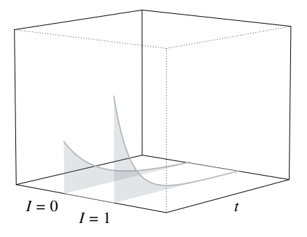
따라서 \(T,I\)의 결합분포가 (1) \(I\)의 주변분포와 (2) \(I\)가 주어졌을 때 \(T\)의 조건부분포라는 형태로 주어졌다. 그런 다음 문제에서는 방향을 바꾸어 (1) \(T\)의 주변분포와 (2) \(T\)가 주어졌을 때 \(I\)의 조건부분포를 구하라고 한다. 이렇게 표현하면 전체 확률의 법칙과 베이즈 정리가 도움이 되리라는 것이 분명하다.
- 이 부분에서는 \(T\)의 주변분포를 유도한다. 누적분포함수에 대해서는 \(I\)를 조건으로 삼아 전체 확률의 법칙을 쓴다.
\[ \begin{aligned} F_T(t)&=P(T\le t)=P(T\le t\mid I=0)p_0+P(T\le t\mid I=1)p_1\\ &=(1-e^{-\lambda_0t})p_0+(1-e^{-\lambda_1t})p_1\\ &=1-p_0e^{-\lambda_0t}-p_1e^{-\lambda_1t},\qquad t>0. \end{aligned} \]
주변 확률밀도함수는 누적분포함수의 도함수이다.
\[f_T(t)=p_0\lambda_0e^{-\lambda_0t}+p_1\lambda_1e^{-\lambda_1t},\qquad t>0.\]
전체 확률의 법칙의 ‘\(X\) 연속형, \(Y\) 이산형’ 형태에서 직접 얻을 수도 있었지만, 그 형태의 증명은 쓰지 않았으므로 이 예제를 풀어 보면 왜 그 형태의 전체 확률의 법칙이 작동하는지 이해하는 데 도움이 된다.
- \(\lambda_0\ne\lambda_1\)이므로 위 밀도식은 \(\lambda e^{-\lambda t}\) 형태로 줄어들지 않는다. 따라서 \(T\)의 분포는 지수분포가 아니며, 이는 무기억성이 없다는 뜻이다. \(T\)의 분포를 두 지수분포의 혼합분포라고 한다.7
- 베이즈 정리의 혼합형, 즉 네 가지 형태를 정리한 표에서 ‘\(X\) 연속형, \(Y\) 이산형’을 이용하면
\[P(I=1\mid T=t)=\frac{f_T(t\mid I=1)P(I=1)}{f_T(t)}\]
이다. 여기서 \(f_T(t\mid I=1)\)은 \(I=1\)이 주어졌을 때 \(T\)의 조건부 확률밀도함수를 \(t\)에서 계산한 값이다. \(T\mid I=1\sim\operatorname{Expo}(\lambda_1)\)이라는 사실과 (a)에서 유도한 주변 확률밀도함수를 이용하면
\[P(I=1\mid T=t)=\frac{p_1\lambda_1e^{-\lambda_1t}}{p_0\lambda_0e^{-\lambda_0t}+p_1\lambda_1e^{-\lambda_1t}}=\frac{p_1\lambda_1}{p_0\lambda_0e^{(\lambda_1-\lambda_0)t}+p_1\lambda_1}.\]
따라서 \(T=t\)가 주어졌을 때 \(I\)의 조건부분포는 이 성공 확률을 갖는 베르누이 분포이다. 이 확률은 \(t\to\infty\)일 때 0으로 간다. 전구가 오래 지속될수록 고장률 \(\lambda\)가 더 낮고 기대수명 \(1/\lambda\)이 더 높은 0번 회사가 만들었다는 확신이 커질 것이므로 직관적으로도 말이 된다. \(\square\)
7.2 2차원 LOTUS
2차원 LOTUS를 이용하면 두 확률변수 \(X\)와 \(Y\)의 함수인 확률변수의 기댓값을 \(X\)와 \(Y\)의 결합분포로 계산할 수 있다.
정리 7.2.1 (2차원 LOTUS). \(g\)를 \(\mathbb{R}^2\)에서 \(\mathbb{R}\)로 가는 함수라 하자. \(X\)와 \(Y\)가 이산형이면8
\[ E(g(X,Y))=\sum_x\sum_y g(x,y)P(X=x,Y=y). \]
\(X\)와 \(Y\)가 결합확률밀도함수 \(f_{X,Y}\)를 갖는 연속형이면
\[ E(g(X,Y))=\int_{-\infty}^{\infty}\int_{-\infty}^{\infty} g(x,y)f_{X,Y}(x,y)\,dx\,dy. \]
1차원 LOTUS와 마찬가지로 2차원 LOTUS를 사용하면 기댓값을 계산하기 위해 \(g(X,Y)\)의 분포를 구할 필요가 없다. 대신 \(X\)와 \(Y\)의 결합확률질량함수 또는 결합확률밀도함수만 있으면 된다.
2차원 LOTUS의 한 가지 용도는 두 확률변수 사이 거리의 기댓값을 구하는 것이다.
예제 7.2.2 (두 균등 확률변수 사이 거리의 기댓값). \(X\)와 \(Y\)가 독립이고 동일한 \(\operatorname{Unif}(0,1)\) 분포를 따르는 확률변수라 하자. \(E(|X-Y|)\)를 구하라.
풀이. 결합확률밀도함수는 단위 정사각형 \(\{(x,y):x,y\in[0,1]\}\)에서 1이므로, 2차원 LOTUS에 의해
\[ \begin{aligned} E(|X-Y|) &=\int_0^1\int_0^1|x-y|\,dx\,dy\\ &=\int_0^1\int_y^1(x-y)\,dx\,dy +\int_0^1\int_0^y(y-x)\,dx\,dy\\ &=2\int_0^1\int_y^1(x-y)\,dx\,dy=\frac13. \end{aligned} \]
먼저 절댓값을 없애기 위해 적분을 두 부분으로 나누었고, 그다음 대칭성을 이용했다.
덧붙여 이 문제를 풀면서 \(M=\max(X,Y)\)와 \(L=\min(X,Y)\)의 기댓값도 구했다. \(M+L\)은 \(X+Y\)와 같은 확률변수이고 \(M-L\)은 \(|X-Y|\)와 같은 확률변수이므로
\[ E(M+L)=E(X+Y)=1,\qquad E(M-L)=E(|X-Y|)=\frac13. \]
이는 미지수가 두 개이고 방정식이 두 개인 연립방정식이며, 이를 풀면 \(E(M)=2/3\), \(E(L)=1/3\)을 얻는다. 타당성을 점검하면, 당연히 \(E(M)\)은 \(E(L)\)보다 크고, 대칭성에 따라 \(E(M)\)과 \(E(L)\)은 \(1/2\)로부터 같은 거리에 있다. \(\square\)
예제 7.2.3 (두 정규 확률변수 사이 거리의 기댓값). \(X\)와 \(Y\)가 독립이고 동일한 \(\mathcal N(0,1)\) 분포를 따를 때 \(E(|X-Y|)\)를 구하라.
풀이. 다시 2차원 LOTUS를 이용하면
\[ E(|X-Y|)=\int_{-\infty}^{\infty}\int_{-\infty}^{\infty} |x-y|\frac{1}{\sqrt{2\pi}}e^{-x^2/2} \frac{1}{\sqrt{2\pi}}e^{-y^2/2}\,dx\,dy \]
를 얻는다. 하지만 6장에서 적률생성함수를 이용해 증명한 것처럼 독립인 정규 확률변수의 합이나 차가 정규분포를 따른다는 사실을 이용하면 더 쉽게 풀 수 있다. \(X-Y\sim\mathcal N(0,2)\)이므로 \(Z\sim\mathcal N(0,1)\)인 \(Z\)를 사용해 \(X-Y=\sqrt2 Z\)로 쓸 수 있고, \(E(|X-Y|)=\sqrt2 E|Z|\)이다. 이렇게 2차원 LOTUS를 1차원 LOTUS로 줄였다! 예제 5.4.7에서
\[E|Z|=\sqrt{\frac2\pi}\]
임을 보였으므로
\[E(|X-Y|)=\frac2{\sqrt\pi}.\]
\(\square\)
2차원 LOTUS를 이용하면 기댓값의 선형성도 다른 방법으로 증명할 수 있다.
예제 7.2.4 (2차원 LOTUS를 이용한 선형성). \(X\)와 \(Y\)를 연속확률변수라 하자. 이산형의 경우에도 유사한 방법이 통한다. 2차원 LOTUS에 의해9
\[ \begin{aligned} E(X+Y) &=\int_{-\infty}^{\infty}\int_{-\infty}^{\infty} (x+y)f_{X,Y}(x,y)\,dx\,dy\\ &=\int_{-\infty}^{\infty}\int_{-\infty}^{\infty} xf_{X,Y}(x,y)\,dx\,dy +\int_{-\infty}^{\infty}\int_{-\infty}^{\infty} yf_{X,Y}(x,y)\,dx\,dy\\ &=E(X)+E(Y). \end{aligned} \]
이는 기댓값의 선형성에 대한 짧은 증명이다. 마지막 단계에서는 2차원 LOTUS와 \(X\)가 \(X\)와 \(Y\)의 함수라는 사실을 이용했으며, 다만 이 함수는 \(Y\)를 포함하지 않는다는 뜻에서 퇴화된 경우이다. \(Y\)에 대해서도 마찬가지이다. 마지막 단계를 얻는 다른 방법은 다음과 같이 쓰는 것이다.
\[ \begin{aligned} \int_{-\infty}^{\infty}\int_{-\infty}^{\infty} yf_{X,Y}(x,y)\,dx\,dy &=\int_{-\infty}^{\infty}y \int_{-\infty}^{\infty}f_{X,Y}(x,y)\,dx\,dy\\ &=\int_{-\infty}^{\infty}yf_Y(y)\,dy=E(Y). \end{aligned} \]
안쪽 적분에서 \(y\)를 밖으로 꺼냈다. \(x\)에 대해 적분할 때 \(y\)는 고정되어 있기 때문이다. 그런 다음 \(Y\)의 주변 확률밀도함수를 알아보았다. \(E(X)\) 항에서는 먼저 적분 순서를 \(dx\,dy\)에서 \(dy\,dx\)로 바꾸면, \(E(Y)\) 항에 쓴 것과 같은 논증을 적용할 수 있다. \(\square\)
7.3 공분산과 상관계수
평균과 분산이 하나의 확률변수의 분포를 각각 하나의 수로 요약해 주었던 것처럼, 공분산은 두 확률변수의 결합분포를 하나의 수로 요약한다. 대략 말하면 공분산은 두 확률변수가 각자의 평균에 비해 함께 증가하거나 감소하는 경향을 측정한다. \(X\)와 \(Y\)의 공분산이 양수라는 것은 \(X\)가 증가할 때 \(Y\)도 증가하는 경향이 있음을, 음수라는 것은 \(X\)가 증가할 때 \(Y\)는 감소하는 경향이 있음을 나타낸다. 정확한 정의는 다음과 같다.
정의 7.3.1 (공분산). 확률변수 \(X\)와 \(Y\) 사이의 공분산은
\[\operatorname{Cov}(X,Y)=E\bigl((X-EX)(Y-EY)\bigr)\]
이다. 이를 전개하고 선형성을 이용하면 동등한 표현을 얻는다.10
\[\operatorname{Cov}(X,Y)=E(XY)-E(X)E(Y).\]
정의를 직관적으로 생각해 보자. \(X\)와 \(Y\)가 같은 방향으로 움직이는 경향이 있다면 \(X-EX\)와 \(Y-EY\)는 둘 다 양수이거나 둘 다 음수인 경향이 있다. 따라서 \((X-EX)(Y-EY)\)는 평균적으로 양수이고 공분산은 양수가 된다. \(X\)와 \(Y\)가 반대 방향으로 움직이는 경향이 있다면 \(X-EX\)와 \(Y-EY\)의 부호가 반대인 경향이 있어 공분산이 음수가 된다.
\(X\)와 \(Y\)가 독립이면 공분산은 0이다. 공분산이 0인 확률변수들을 비상관이라고 한다.
정리 7.3.2. \(X\)와 \(Y\)가 독립이면 두 확률변수는 비상관이다.
증명. \(X\)와 \(Y\)가 연속확률변수이고 확률밀도함수가 각각 \(f_X,f_Y\)인 경우를 보이겠다. 두 변수가 독립이므로 결합확률밀도함수는 주변 확률밀도함수의 곱이다. 2차원 LOTUS에 따라
\[ \begin{aligned} E(XY)&=\int_{-\infty}^{\infty}\int_{-\infty}^{\infty}xyf_X(x)f_Y(y)\,dx\,dy\\ &=\int_{-\infty}^{\infty}yf_Y(y)\left(\int_{-\infty}^{\infty}xf_X(x)\,dx\right)dy\\ &=\left(\int_{-\infty}^{\infty}xf_X(x)\,dx\right)\left(\int_{-\infty}^{\infty}yf_Y(y)\,dy\right)=E(X)E(Y). \end{aligned} \]
이산형인 경우의 증명도 확률밀도함수 대신 확률질량함수를 사용하면 같다. \(\blacksquare\)
이 정리의 역은 거짓이다. \(X\)와 \(Y\)가 비상관이라고 해서 독립인 것은 아니다. 예를 들어 \(X\sim\mathcal N(0,1)\)이고 \(Y=X^2\)라 하자. 표준정규분포의 홀수 차수 적률은 대칭성에 의해 0이므로 \(E(XY)=E(X^3)=0\)이다. 따라서 \(X\)와 \(Y\)는 비상관이다.
\[\operatorname{Cov}(X,Y)=E(XY)-E(X)E(Y)=0-0=0.\]
그러나 둘은 분명히 독립이 아니다. \(Y\)가 \(X\)의 함수이므로 \(X\)를 알면 \(Y\)를 완전히 알 수 있다. 공분산은 선형적 연관성의 측정치이므로 이 예가 보여 주듯 확률변수들이 비선형적인 방식으로 종속이면서도 공분산은 0일 수 있다. 그림 7.9의 오른쪽 아래 산점도는 이 예에서 \((X,Y)\)의 결합분포로부터 추출한 값들을 보여 준다. 나머지 세 산점도는 양의 상관관계, 음의 상관관계, 독립을 나타낸다.
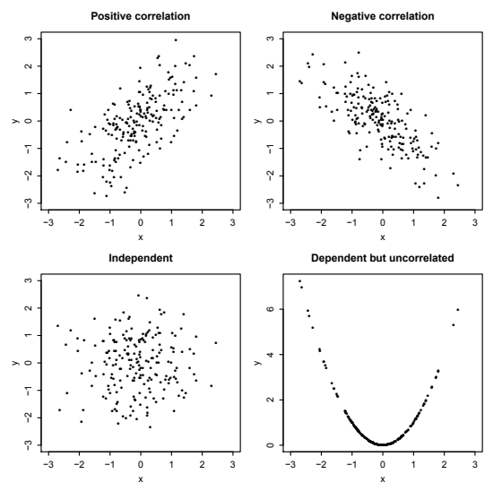
공분산에는 다음과 같은 중요한 성질이 있다.
\(\operatorname{Cov}(X,X)=\operatorname{Var}(X)\).
\(\operatorname{Cov}(X,Y)=\operatorname{Cov}(Y,X)\).
임의의 상수 \(c\)에 대해 \(\operatorname{Cov}(X,c)=0\).
임의의 상수 \(a\)에 대해 \(\operatorname{Cov}(aX,Y)=a\operatorname{Cov}(X,Y)\).
\(\operatorname{Cov}(X+Y,Z)=\operatorname{Cov}(X,Z)+\operatorname{Cov}(Y,Z)\).
\(\operatorname{Cov}(X+Y,Z+W)=\operatorname{Cov}(X,Z)+\operatorname{Cov}(X,W)+\operatorname{Cov}(Y,Z)+\operatorname{Cov}(Y,W)\).
\(\operatorname{Var}(X+Y)=\operatorname{Var}(X)+\operatorname{Var}(Y)+2\operatorname{Cov}(X,Y)\). \(n\)개의 확률변수 \(X_1,\ldots,X_n\)에 대해서는
\[\operatorname{Var}(X_1+\cdots+X_n)=\operatorname{Var}(X_1)+\cdots+\operatorname{Var}(X_n)+2\sum_{i<j}\operatorname{Cov}(X_i,X_j).\]
처음 다섯 성질은 정의와 기댓값의 기본 성질에서 쉽게 나온다. 성질 6은 성질 2와 성질 5를 이용해 다음과 같이 전개하면 얻어진다.
\[ \begin{aligned} \operatorname{Cov}(X+Y,Z+W) &=\operatorname{Cov}(X,Z+W)+\operatorname{Cov}(Y,Z+W)\\ &=\operatorname{Cov}(Z+W,X)+\operatorname{Cov}(Z+W,Y)\\ &=\operatorname{Cov}(Z,X)+\operatorname{Cov}(W,X)+\operatorname{Cov}(Z,Y)+\operatorname{Cov}(W,Y)\\ &=\operatorname{Cov}(X,Z)+\operatorname{Cov}(X,W)+\operatorname{Cov}(Y,Z)+\operatorname{Cov}(Y,W). \end{aligned} \]
성질 7은 성질 1에 따라 확률변수의 분산을 그 변수와 자기 자신의 공분산으로 쓴 다음 성질 6을 반복해서 이용하면 나온다.
이제 독립인 확률변수들의 합의 분산이 각 분산의 합이라는 4장의 약속을 이행했다.
\[\operatorname{Var}\left(\sum_{j=1}^n X_j\right)=\sum_{j=1}^n\operatorname{Var}(X_j)\quad\text{($X_1,\ldots,X_n$이 독립일 때)}.\]
정리 7.3.2에 의해 독립인 확률변수들은 비상관이므로 이 경우 성질 7의 공분산 항은 모두 사라진다.
주의 7.3.3. \(X\)와 \(Y\)가 독립이면 공분산의 성질에 따라
\[\operatorname{Var}(X-Y)=\operatorname{Var}(X)+\operatorname{Var}(-Y)=\operatorname{Var}(X)+\operatorname{Var}(Y).\]
“\(\operatorname{Var}(X-Y)=\operatorname{Var}(X)-\operatorname{Var}(Y)\)”라고 주장하는 것은 흔한 실수이다. \(\operatorname{Var}(X)-\operatorname{Var}(Y)\)는 음수일 수 있으므로 이는 범주 오류이다. 일반적인 \(X,Y\)에 대해서는
\[\operatorname{Var}(X-Y)=\operatorname{Var}(X)+\operatorname{Var}(Y)-2\operatorname{Cov}(X,Y).\]
공분산은 \(X\)와 \(Y\)를 측정하는 단위에 의존한다. 예를 들어 \(X\)를 미터 대신 센티미터로 측정하기로 하면 공분산은 100배가 된다. 따라서 상관계수라고 부르는 단위가 없는 공분산의 변형이 해석하기 더 쉽다.
정의 7.3.4 (상관계수). 확률변수 \(X\)와 \(Y\)의 상관계수는
\[\operatorname{Corr}(X,Y)=\frac{\operatorname{Cov}(X,Y)}{\sqrt{\operatorname{Var}(X)\operatorname{Var}(Y)}}.\]
이다. \(\operatorname{Var}(X)=0\) 또는 \(\operatorname{Var}(Y)=0\)인 퇴화 사례에서는 정의되지 않는다.11
\(X\)와 \(Y\)를 이동하거나 양의 척도로 바꾸어도 상관계수는 영향을 받지 않는다는 점에 주목하자.12 이동은 \(\operatorname{Cov}(X,Y)\), \(\operatorname{Var}(X)\), \(\operatorname{Var}(Y)\)에 영향을 주지 않으므로 상관계수는 변하지 않는다. 양의 척도에 대해서는 \(X\)와 \(Y\)의 표준편차로 나누기 때문에 척도 인수가 상쇄된다. 다음 식에서 \(c>0\)이다.
\[ \operatorname{Corr}(cX,Y)=\frac{\operatorname{Cov}(cX,Y)}{\sqrt{\operatorname{Var}(cX)\operatorname{Var}(Y)}} =\frac{c\operatorname{Cov}(X,Y)}{\sqrt{c^2\operatorname{Var}(X)\operatorname{Var}(Y)}} =\operatorname{Corr}(X,Y). \]
상관계수는 측정 단위에 의존하지 않고 항상 \(-1\)과 1 사이에 있으므로 해석하기 편리하다.
정리 7.3.5 (상관계수의 경계). 임의의 확률변수 \(X,Y\)에 대해
\[-1\le\operatorname{Corr}(X,Y)\le1.\]
증명. 척도를 바꾸어도 상관계수가 변하지 않으므로 일반성을 잃지 않고 \(X\)와 \(Y\)의 분산이 1이라고 가정할 수 있다. \(\rho=\operatorname{Corr}(X,Y)=\operatorname{Cov}(X,Y)\)라 하자. 분산이 음이 아니라는 사실과 공분산의 성질 7을 이용하면
\[ \begin{aligned} \operatorname{Var}(X+Y)&=\operatorname{Var}(X)+\operatorname{Var}(Y)+2\operatorname{Cov}(X,Y)=2+2\rho\ge0,\\ \operatorname{Var}(X-Y)&=\operatorname{Var}(X)+\operatorname{Var}(Y)-2\operatorname{Cov}(X,Y)=2-2\rho\ge0. \end{aligned} \]
따라서 \(-1\le\rho\le1\)이다. \(\blacksquare\)
다음은 공분산과 상관계수를 계산하는 방법에 관한 예이다.
예제 7.3.6 (지수 확률변수의 최댓값과 최솟값). \(X\)와 \(Y\)가 독립이고 동일한 \(\operatorname{Expo}(1)\) 분포를 따르는 확률변수라 하자. \(\max(X,Y)\)와 \(\min(X,Y)\)의 상관계수를 구하라.
풀이. \(M=\max(X,Y)\), \(L=\min(X,Y)\)라 하자. 무기억성과 5장의 결과에 따라 \(L\sim\operatorname{Expo}(2)\)이고 \(M-L\sim\operatorname{Expo}(1)\)이며 \(M-L\)은 \(L\)과 독립임을 안다. 예제 5.6.5를 보라. 따라서
\[ \begin{aligned} \operatorname{Cov}(M,L)&=\operatorname{Cov}(M-L+L,L)=\operatorname{Cov}(M-L,L)+\operatorname{Cov}(L,L)=0+\operatorname{Var}(L)=\frac14,\\ \operatorname{Var}(M)&=\operatorname{Var}(M-L+L)=\operatorname{Var}(M-L)+\operatorname{Var}(L)=1+\frac14=\frac54, \end{aligned} \]
이며
\[\operatorname{Corr}(M,L)=\frac{\operatorname{Cov}(M,L)}{\sqrt{\operatorname{Var}(M)\operatorname{Var}(L)}}=\frac{1/4}{\sqrt{(5/4)(1/4)}}=\frac1{\sqrt5}.\qquad\square\]
주의 7.3.7. 위 예에서 \(M\)은 \(L\)보다 크거나 같아야 하므로 상관계수가 양수라는 것은 타당해 보인다.13 다음 논증은 큰 실수이다. “\(M=X,L=Y\)이거나 \(M=Y,L=X\)이므로 \(\operatorname{Cov}(M,L)=\operatorname{Cov}(X,Y)\)이거나 \(\operatorname{Cov}(M,L)=\operatorname{Cov}(Y,X)\)이다. 그런데 \(\operatorname{Cov}(Y,X)=\operatorname{Cov}(X,Y)\)이므로 언제나 \(\operatorname{Cov}(M,L)=\operatorname{Cov}(X,Y)=0\)이다.” \(M=X,L=Y\) 또는 \(M=Y,L=X\) 중 하나가 발생하는 것은 사실이지만, 이는 결정론적인 경우들이 아니라 사건들이다. 조건부확률을 이용해 논증을 주의 깊게 적으면 이 주장은 무너질 것이다.
공분산의 성질은 분산을 구하는 데도 유용하며, 특히 관심 있는 확률변수가 종속인 확률변수들의 합일 때 그렇다. 다음 예제에서는 공분산의 성질을 이용해 초기하분포의 분산을 유도한다. 4장 연습문제 48을 풀었다면 두 유도를 비교해 볼 수 있다.
예제 7.3.8 (초기하분포의 분산). \(X\sim\operatorname{HGeom}(w,b,n)\)일 때 \(\operatorname{Var}(X)\)를 구하라.
풀이. \(X\)를 흰 공 \(w\)개와 검은 공 \(b\)개가 든 항아리에서 크기 \(n\)인 표본을 추출했을 때 흰 공의 수라고 해석하자. \(I_j\)를 표본에서 \(j\)번째 공이 흰색인 사건의 지시확률변수라 하면 \(X=I_1+\cdots+I_n\)으로 표현할 수 있다. 각 \(I_j\)의 평균은 \(p=w/(w+b)\)이고 분산은 \(p(1-p)\)이다. 아래에서 \(I_1,I_2\)를 쓰는 계산은 \(n\ge2\)인 경우이며, \(n=1\)은 뒤에서 따로 다룬다. 일반적으로 \(I_j\)들이 종속이므로 분산을 단순히 더할 수는 없다. 대신 공분산의 성질을 적용한다.
\[ \begin{aligned} \operatorname{Var}(X)&=\operatorname{Var}\left(\sum_{j=1}^n I_j\right)\\ &=\operatorname{Var}(I_1)+\cdots+\operatorname{Var}(I_n)+2\sum_{i<j}\operatorname{Cov}(I_i,I_j)\\ &=np(1-p)+2\binom n2\operatorname{Cov}(I_1,I_2), \end{aligned} \]
대칭성에 따라 지시확률변수의 \(\binom n2\)개 쌍은 모두 같은 공분산을 갖기 때문이다. 이제 \(\operatorname{Cov}(I_1,I_2)\)만 구하면 된다. 근본적인 연결에 따라
\[ \begin{aligned} \operatorname{Cov}(I_1,I_2)&=E(I_1I_2)-E(I_1)E(I_2)\\ &=P(\text{첫째와 둘째 공이 모두 흰색})-P(\text{첫째 공이 흰색})P(\text{둘째 공이 흰색})\\ &=\frac{w}{w+b}\cdot\frac{w-1}{w+b-1}-p^2. \end{aligned} \]
이를 위 공식에 대입해 정리하면 결국
\[\operatorname{Var}(X)=\frac{N-n}{N-1}np(1-p)\]
을 얻는다. 여기서 \(N=w+b\)이다.14 이는 이항분포의 분산 \(np(1-p)\)과 \(\frac{N-n}{N-1}\)이라는 인수만큼 다르며, 이 인수를 유한모집단 보정이라고 한다. 이러한 차이가 나는 이유는 이항분포의 이야기에서는 복원추출을 하여 같은 공이 여러 번 뽑힐 수 있는 반면, 초기하분포의 이야기에서는 비복원추출을 하여 각 공이 표본에 많아야 한 번만 나타나기 때문이다.
\(N\)을 항아리의 ‘모집단 크기’라고 생각하면 \(N\)이 표본 크기 \(n\)에 비해 매우 커짐에 따라 복원추출에서 같은 공을 두 번 이상 뽑을 가능성은 극히 작아진다. 따라서 \(n\)을 고정하고 \(N\to\infty\)로 보내는 극한에서 복원추출과 비복원추출은 동등해지고 유한모집단 보정은 1에 가까워진다.
복원추출과 비복원추출이 동등해지는 다른 경우는 항아리에서 공을 하나만 뽑는 단순한 경우이다. 실제로 \(n=1\)일 때도 유한모집단 보정은 1이다. \(\square\)
이 장의 마지막 두 절에서는 다항분포와 다변량 정규분포를 소개한다. 다항분포는 가장 유명한 이산 다변량 분포이고, 다변량 정규분포는 가장 유명한 연속 다변량 분포이다.
7.4 다항분포
다항분포는 이항분포를 일반화한 것이다. 이항분포가 성공 또는 실패 두 가지로만 분류할 수 있는 시행을 정해진 횟수만큼 했을 때 성공 횟수를 세는 반면, 다항분포는 결과가 여러 범주에 속할 수 있는 시행들을 다룬다. 예를 들어 우수, 보통, 나쁨이나 빨강, 노랑, 초록, 파랑으로 분류할 수 있다.
이야기 7.4.1 (다항분포). \(n\)개의 대상 각각이 독립적으로 \(k\)개 범주 중 하나에 들어간다. 각 대상이 범주 \(j\)에 들어갈 확률은 \(p_j\)이며, \(p_j\)들은 음이 아니고 \(\sum_{j=1}^k p_j=1\)이다. 범주 1에 속한 대상의 수를 \(X_1\), 범주 2에 속한 대상의 수를 \(X_2\)로 놓는 식으로 정의하면 \(X_1+\cdots+X_k=n\)이다. 이때 \(X=(X_1,\ldots,X_k)\)는 모수가 \(n\)과 \(p=(p_1,\ldots,p_k)\)인 다항분포를 따른다고 하며, \(X\sim\operatorname{Mult}_k(n,p)\)로 쓴다. \(\square\)
\(X\)는 확률변수들로 이루어진 벡터이므로 확률벡터라고 한다. \(X\)의 결합확률질량함수는 이 이야기에서 유도할 수 있다.
정리 7.4.2 (다항분포의 결합확률질량함수). \(X\sim\operatorname{Mult}_k(n,p)\)이면, \(n_1+\cdots+n_k=n\)을 만족하는 음이 아닌 정수 \(n_1,\ldots,n_k\)에 대해 \(X\)의 결합확률질량함수는
\[ P(X_1=n_1,\ldots,X_k=n_k) =\frac{n!}{n_1!n_2!\cdots n_k!}\,p_1^{n_1}p_2^{n_2}\cdots p_k^{n_k} \]
이다.15
증명. \(n_1,\ldots,n_k\)의 합이 \(n\)이 아니면 사건 \(\{X_1=n_1,\ldots,X_k=n_k\}\)는 불가능하다. 모든 대상은 어딘가에 들어가야 하고 새 대상이 갑자기 나타날 수도 없기 때문이다. \(n_1,\ldots,n_k\)의 합이 \(n\)이면 범주 1에 \(n_1\)개, 범주 2에 \(n_2\)개 등을 넣는 각각의 특정한 방법은 확률 \(p_1^{n_1}p_2^{n_2}\cdots p_k^{n_k}\)를 갖는다. 그리고 그런 방법은
\[\frac{n!}{n_1!n_2!\cdots n_k!}\]
가지이다. 이 경우의 수는 예제 1.4.18에서 STATISTICS의 글자들을 다시 배열하는 맥락에서 살펴보았다. 따라서 결합확률질량함수는 주장한 것과 같다. \(\blacksquare\)
\(X\)의 결합분포를 지정했으므로 주변분포와 조건부분포는 물론 \(X\)의 임의의 두 성분 사이 공분산을 결정할 정보도 충분하다.
이들을 하나씩 살펴보자. 먼저 \(X\)의 \(j\)번째 성분인 \(X_j\)의 주변분포부터 시작한다. 정의를 기계적으로 적용한다면 \(X_j\)를 제외한 \(X\)의 모든 성분에 대해 결합확률질량함수를 합해야 한다. \(k-1\)개의 합을 계산해야 한다는 전망은 아무리 좋게 말해도 달갑지 않다. 다행히 다항분포의 이야기를 이용하면 지루한 계산을 피할 수 있다. \(X_j\)는 범주 \(j\)에 속한 대상의 수이고, \(n\)개의 대상 각각은 서로 독립적으로 확률 \(p_j\)로 범주 \(j\)에 속한다. 범주 \(j\)에 들어가는 것을 성공이라고 정의하자. 그러면 독립인 베르누이 시행 \(n\)번이므로 \(X_j\)의 주변분포는 \(\operatorname{Bin}(n,p_j)\)이다.
정리 7.4.3 (다항분포의 주변분포). 다항분포의 주변분포는 이항분포이다. 구체적으로 \(X\sim\operatorname{Mult}_k(n,p)\)이면 \(X_j\sim\operatorname{Bin}(n,p_j)\)이다.16
더 일반적으로 다항 확률벡터에서 여러 범주를 하나로 합칠 때마다 또 다른 다항 확률벡터를 얻는다. 예를 들어 정당이 5개인 나라에서 \(n\)명을 무작위 표본으로 뽑는다고 하자. 표본추출을 비복원으로 한다면 \(n\)번의 시행은 독립이 아니지만, 정리 3.9.3과 예제 7.3.8에서 논의했듯이 모집단이 표본에 비해 크면 독립이라는 가정이 좋은 근사가 된다. 다음과 같이 놓자.
\[X=(X_1,\ldots,X_5)\sim\operatorname{Mult}_5(n,(p_1,\ldots,p_5)).\]
이 벡터는 표본에 포함된 사람들의 지지 정당을 나타낸다. 즉 \(X_j\)는 표본에서 정당 \(j\)를 지지하는 사람의 수이다.
정당 1과 2가 주요 정당이고 3부터 5까지의 정당은 소수 정당이라고 하자. 다섯 정당을 모두 따로 다루는 대신 정당 1, 정당 2, “기타”에 속한 사람의 수만 세기로 한다면, 소수 정당을 모두 한 범주에 합친 새로운 확률벡터를 정의할 수 있다.
\[Y=(X_1,X_2,X_3+X_4+X_5).\]
다항분포의 이야기에 따라
\[Y\sim\operatorname{Mult}_3(n,(p_1,p_2,p_3+p_4+p_5)).\]
물론 이 생각은 정당의 경우뿐 아니라 모든 다항분포에서 범주를 합칠 때 적용된다.
정리 7.4.4 (다항분포의 범주 합치기). \(X\sim\operatorname{Mult}_k(n,p)\)이면 서로 다른 임의의 \(i,j\)에 대해 \(X_i+X_j\sim\operatorname{Bin}(n,p_i+p_j)\)이다. 범주 \(i\)와 \(j\)를 합쳐 얻은 개수들의 확률벡터는 여전히 다항분포를 따른다. 예를 들어 범주 1과 2를 합치면
\[ (X_1+X_2,X_3,\ldots,X_k) \sim\operatorname{Mult}_{k-1}(n,(p_1+p_2,p_3,\ldots,p_k)). \]
이제 조건부분포를 살펴보자. 범주 1의 대상 수 \(X_1\)을 관찰하게 되어 나머지 범주에 대한 분포 \((X_2,\ldots,X_k)\)를 갱신하고 싶다고 하자. 한 가지 방법은 조건부 확률질량함수의 정의를 쓰는 것이다.
\[ P(X_2=n_2,\ldots,X_k=n_k\mid X_1=n_1) =\frac{P(X_1=n_1,X_2=n_2,\ldots,X_k=n_k)}{P(X_1=n_1)}. \]
분자는 다항분포의 결합확률질량함수이고 분모는 \(X_1\)의 주변 확률질량함수이며, 둘 다 이미 유도했다. 그러나 우리는 대수 계산 없이 다항분포의 이야기를 이용해 \((X_2,\ldots,X_k)\)의 조건부분포를 추론하는 방법을 선호한다. 범주 1에 대상이 \(n_1\)개 있다는 조건 아래에서 나머지 \(n-n_1\)개 대상은 범주 2부터 \(k\)까지에 서로 독립적으로 들어간다. 베이즈 정리에 따라 범주 \(j\)에 들어갈 조건부확률은
\[ P(\text{범주 }j\mid\text{범주 1이 아님}) =\frac{P(\text{범주 }j)}{P(\text{범주 1이 아님})} =\frac{p_j}{p_2+\cdots+p_k},\qquad j=2,\ldots,k. \]
이는 직관적으로도 납득할 수 있다. 갱신된 확률들은 원래 확률 \((p_2,\ldots,p_k)\)에 비례하지만, 유효한 확률벡터가 되도록 다시 정규화해야 한다. 이들을 종합하면 다음 결과를 얻는다.
정리 7.4.5 (다항분포의 조건화). \(X\sim\operatorname{Mult}_k(n,p)\)이면17
\[ (X_2,\ldots,X_k)\mid X_1=n_1 \sim\operatorname{Mult}_{k-1}(n-n_1,(p'_2,\ldots,p'_k)), \]
여기서 \(p'_j=p_j/(p_2+\cdots+p_k)\)이다.
마지막으로 다항 확률벡터의 성분들은 \(X_1+\cdots+X_k=n\)이라는 제약을 받으므로 종속이라는 것을 안다.18 \(X_i\)와 \(X_j\) 사이의 공분산을 구하는 데 방금 살펴본 주변분포와 범주 합치기 성질을 이용할 수 있다.
정리 7.4.6 (다항분포의 공분산). \((X_1,\ldots,X_k)\sim\operatorname{Mult}_k(n,p)\)이고 \(p=(p_1,\ldots,p_k)\)라 하자. \(i\ne j\)이면 \(\operatorname{Cov}(X_i,X_j)=-np_ip_j\)이다.
증명. 구체적으로 \(i=1\), \(j=2\)라 하자. 다항분포의 범주 합치기 성질과 주변분포를 이용하면 \(X_1+X_2\sim\operatorname{Bin}(n,p_1+p_2)\), \(X_1\sim\operatorname{Bin}(n,p_1)\), \(X_2\sim\operatorname{Bin}(n,p_2)\)임을 안다. 따라서
\[\operatorname{Var}(X_1+X_2)=\operatorname{Var}(X_1)+\operatorname{Var}(X_2)+2\operatorname{Cov}(X_1,X_2)\]
는 다음과 같이 된다.
\[ n(p_1+p_2)(1-(p_1+p_2)) =np_1(1-p_1)+np_2(1-p_2)+2\operatorname{Cov}(X_1,X_2). \]
\(\operatorname{Cov}(X_1,X_2)\)에 대해 풀면 \(\operatorname{Cov}(X_1,X_2)=-np_1p_2\)이다. 같은 논리로 \(i\ne j\)이면 \(\operatorname{Cov}(X_i,X_j)=-np_ip_j\)이다.
예상할 수 있듯 성분들은 음의 상관관계를 갖는다. 범주 \(i\)에 대상이 많이 있다는 사실을 안다면 범주 \(j\)에 들어갈 수 있도록 남은 대상의 수는 그만큼 줄어들기 때문이다.19 연습문제 65에서는 지시확률변수를 이용해 이 결과를 다른 방법으로 증명하도록 한다. \(\blacksquare\)
주의 7.4.7 (독립인 시행과 종속인 성분). 다항분포의 \(k\)개 성분은 종속이지만, 다항분포 이야기의 \(n\)개 대상은 서로 독립적으로 범주에 배정된다. 극단적인 경우 \(k=2\)이면 \(\operatorname{Mult}_k(n,p)\) 확률벡터는 \(X\sim\operatorname{Bin}(n,p_1)\)인 \((X,n-X)\)의 모습이며, ‘성공’을 범주 1에 들어가는 것으로 정의하면 이를 (성공 횟수, 실패 횟수)로 생각할 수 있다. 시행들은 독립인데도 성공 횟수와 실패 횟수는 완전히 음의 상관관계를 갖는다.20
이 절을 마치면서 다항분포의 가장 중요한 개념 여러 가지를 연결하는 영웅적인 예를 살펴보자.
예제 7.4.8 (스탯우먼). 슈퍼히어로 스탯우먼은 범죄에 맞서 싸우기 위해 확률과 통계학을 사용한다. 그녀는 수많은 적과 싸웠고, 때로는 여러 적과 동시에 싸우기도 했다. 하지만 단순화를 위해 각 전투에서 다음 적 가운데 정확히 한 명과 싸운다고 가정하자. 그 적들은 교란자, 외삽자, 과적합자이다.
스탯우먼이 내년에 \(n\)번 싸우고 \(n\)은 양의 정수라고 하자. 각 전투에서 교란자와 싸울 확률은 \(p_1\), 외삽자와 싸울 확률은 \(p_2\), 과적합자와 싸울 확률은 \(p_3\)이며 전투들은 서로 독립이다. 여기서 \(p_1,p_2,p_3\)은 음이 아니고 합은 1이다. 내년에 스탯우먼이 교란자, 외삽자, 과적합자와 싸울 횟수를 각각 \(X_1,X_2,X_3\)이라 하자.
\(X_1,X_2,X_3\)의 결합분포를 구하라.
\(X_1\)과 \(X_2\) 사이의 상관계수를 구하라.
이 소문항에서만, 외삽자와 과적합자가 함께 사악한 계획을 세우고 있어 이 둘이 스탯우먼과 벌이는 전투 횟수의 합에 관심이 있다고 하자. \(X_{23}=X_2+X_3\)이라 놓고 \(X_1,X_{23}\)의 결합분포를 구하라.
이 소문항에서만 모수 \(p_1,p_2,p_3\)은 알려져 있지 않고 \(n=360\)이며, 스탯우먼의 전투 중 정확히 36번이 과적합자와의 전투였다고 관찰되었다고 하자. \(p_3\)을 추정하는 자연스러운 방법은 \(36/360=0.1\)을 사용하는 것이다. \(p_3\)의 최대가능도추정값(MLE)은 관찰된 자료 \(X_3=36\)이 나타날 가능성을 가장 크게 만드는 \(p_3\)의 값이다. 즉 \(P(X_3=36)\)을 최대화하는 \(p_3\)의 값이다. 최대가능도추정값이 자연스러운 추정값 0.1임을 보여라.
이 소문항에서만, 영웅적인 노력 끝에 과적합자를 붙잡았다고 가정하자! 따라서 내년의 모든 전투는 나머지 두 적 중 한 명과 벌어진다고 가정한다. \(X_3=0\)이 주어졌을 때 \(X_1,X_2\)의 결합확률질량함수를 구하라.
이제 전투 횟수가 상수 \(n\)이 아니라 \(N\sim\operatorname{Pois}(\lambda)\)라고 하자. \(X_1,X_2,X_3\)의 결합분포를 구하라.21
풀이.
다항분포의 이야기에 따라 \((X_1,X_2,X_3)\sim\operatorname{Mult}_3(n,(p_1,p_2,p_3))\)이다.
\(X_1\sim\operatorname{Bin}(n,p_1)\), \(X_2\sim\operatorname{Bin}(n,p_2)\)이고 \(\operatorname{Cov}(X_1,X_2)=-np_1p_2\)이므로22
\[ \operatorname{Corr}(X_1,X_2) =\frac{\operatorname{Cov}(X_1,X_2)}{\operatorname{SD}(X_1)\operatorname{SD}(X_2)} =\frac{-np_1p_2}{\sqrt{np_1(1-p_1)np_2(1-p_2)}} =-\sqrt{\frac{p_1p_2}{(1-p_1)(1-p_2)}}. \]
- 다항분포의 범주 합치기 성질에 따라
\[ (X_1,X_{23})\sim\operatorname{Mult}_2(n,(p_1,p_2+p_3)). \]
- 일반적으로 \(X\sim\operatorname{Bin}(n,p)\)이고 \(X=x\)가 관찰되었다면 \(p\)의 최대가능도추정값은 다음 함수를 최대화하는 \(p\)의 값이다.
\[L(p)=\binom nx p^x(1-p)^{n-x}.\]
통계학에서 함수 \(L\)은 가능도 함수라고 한다. 이는 자료를 고정된 것으로 보고 모수의 함수로 간주한 자료의 확률이다.
양수들의 곱을 다룰 때 흔히 그렇듯 로그를 취하면 유용하다. 로그는 연속이고 엄격히 증가하는 함수이므로 다음을 최대화하는 값 \(\hat p\)를 구하는 것과 동등하다.
\[\log L(p)=\log\binom nx+x\log p+(n-x)\log(1-p).\]
\(x\)를 고정한 상태에서 \(p\)에 대한 \(\log L(p)\)의 도함수를 0으로 놓으면
\[\frac{x}{\hat p}-\frac{n-x}{1-\hat p}=0,\]
이를 정리해 \(\hat p=x/n\)을 얻는다. \(\log L(p)\)의 이계도함수가
\[-\frac{x}{p^2}-\frac{n-x}{(1-p)^2}<0\]
이므로 최댓값을 찾은 것이다.23 따라서 \(p_3\)의 최대가능도추정값은 \(\hat p_3=36/360=0.1\)이다.
- 다항분포의 조건화 결과에 따라24
\[ (X_1,X_2)\mid(X_3=0)\sim\operatorname{Mult}_2 \left(n,\left(\frac{p_1}{p_1+p_2},\frac{p_2}{p_1+p_2}\right)\right). \]
- 닭과 달걀 이야기에서처럼 추론하면
\[ P(X_1=x_1,X_2=x_2,X_3=x_3) =\sum_{n=0}^{\infty}P(X_1=x_1,X_2=x_2,X_3=x_3\mid N=n)P(N=n), \]
여기서 \(n=x_1+x_2+x_3\)인 항을 제외한 모든 항은 0이다. 이 \(n\)에 대해
\[ \begin{aligned} P(X_1=x_1,X_2=x_2,X_3=x_3) &=P(X_1=x_1,X_2=x_2,X_3=x_3\mid N=n)P(N=n)\\ &=\frac{n!}{x_1!x_2!x_3!}p_1^{x_1}p_2^{x_2}p_3^{x_3}\cdot\frac{e^{-\lambda}\lambda^n}{n!}\\ &=\frac{e^{-\lambda p_1}(\lambda p_1)^{x_1}}{x_1!}\cdot \frac{e^{-\lambda p_2}(\lambda p_2)^{x_2}}{x_2!}\cdot \frac{e^{-\lambda p_3}(\lambda p_3)^{x_3}}{x_3!}, \end{aligned} \]
이는 모든 음이 아닌 정수 \(x_1,x_2,x_3\)에 대해 성립한다. 따라서 \(X_1,X_2,X_3\)은 독립이고 각각 \(X_j\sim\operatorname{Pois}(\lambda p_j)\)이다. 이 결과는 닭과 달걀 이야기를 다항분포로 확장한 것이다. \(\square\)
7.5 다변량 정규분포
다변량 정규분포는 정규분포를 더 높은 차원으로 일반화한 연속 다변량 분포이다.25 다변량 정규분포의 결합확률밀도함수는 꽤 복잡하므로 여기서는 다루지 않는다. 대신 일반적인 정규분포와의 관계를 이용해 다변량 정규분포를 정의한다.
정의 7.5.1 (다변량 정규분포). \(k\)차원 확률벡터 \(\mathbf X=(X_1,\ldots,X_k)\)의 성분들을 어떤 방식으로 선형결합해도 정규분포를 따르면 \(\mathbf X\)가 다변량 정규분포(MVN)를 따른다고 한다. 즉 임의의 상수 \(t_1,\ldots,t_k\)에 대해
\[t_1X_1+\cdots+t_kX_k\]
가 정규분포를 따라야 한다. \(t_1X_1+\cdots+t_kX_k\)가 상수라면, 예를 들어 모든 \(t_i=0\)이면, 분산이 0인 퇴화 정규분포를 따른다고 본다. \(k=2\)인 경우는 특히 중요하며 이 분포를 이변량 정규분포(BVN)라고 한다.
\((X_1,\ldots,X_k)\)가 다변량 정규분포를 따르면 \(X_1\)의 주변분포는 정규분포이다. \(t_1=1\)이고 나머지 \(t_j\)는 모두 0으로 둘 수 있기 때문이다. 마찬가지로 각 \(X_j\)의 주변분포는 정규분포이다. 그러나 그 역은 거짓이다. 확률변수 \(X_1,\ldots,X_k\)가 각각 정규분포를 따르더라도 \((X_1,\ldots,X_k)\)는 다변량 정규분포를 따르지 않을 수 있다.
예제 7.5.2 (다변량 정규분포가 아닌 예). 두 확률변수의 주변분포는 정규분포이지만 결합분포는 이변량 정규분포가 아닌 예를 살펴보자. \(X\sim\mathcal N(0,1)\)이라 하고, \(X\)와 독립인 무작위 부호 \(S\)를
\[S=\begin{cases}1,&\text{확률 }1/2,\\-1,&\text{확률 }1/2\end{cases}\]
로 정하자. 그러면 정규분포의 대칭성 때문에 \(Y=SX\)는 표준정규 확률변수이다. 5장 연습문제 30을 보라. 하지만 \(P(X+Y=0)=P(S=-1)=1/2\)이므로 \((X,Y)\)는 이변량 정규분포가 아니다. \(X+Y\)가 정규분포를 따를 수 없기 때문이다. 사실 어떤 연속분포도 따를 수 없다. \(X+Y\)는 \(X,Y\)의 선형결합인데 정규분포를 따르지 않으므로 \((X,Y)\)는 이변량 정규분포가 아니다. \(\square\)
예제 7.5.3 (다변량 정규분포인 예). \(Z,W\)가 독립이고 동일한 \(\mathcal N(0,1)\) 분포를 따르면 \((Z,W)\)는 이변량 정규분포이다. 독립인 정규 확률변수들의 합은 정규분포를 따르기 때문이다. 또한 \((Z+2W,3Z+5W)\)도 이변량 정규분포이다. 임의의 선형결합
\[t_1(Z+2W)+t_2(3Z+5W)\]
을 \(Z,W\)의 선형결합
\[(t_1+3t_2)Z+(2t_1+5t_2)W\]
으로도 쓸 수 있고, 이는 정규분포를 따르기 때문이다. \(\square\)
위 예제는 다변량 정규분포에서 출발해 성분들의 선형결합을 취하면 새로운 다변량 정규분포를 얻는다는 것을 보여 주었다. 다음 두 정리는 부분벡터를 취하거나 벡터를 이어 붙이는 연산으로도 기존의 다변량 정규분포에서 새로운 다변량 정규분포를 만들 수 있음을 보여 준다.
정리 7.5.4. \((X_1,X_2,X_3)\)이 다변량 정규분포를 따르면 부분벡터 \((X_1,X_2)\)도 다변량 정규분포를 따른다.
증명. 임의의 선형결합 \(t_1X_1+t_2X_2\)는 \(X_3\)의 계수가 0인 \(X_1,X_2,X_3\)의 선형결합으로 생각할 수 있다. 따라서 모든 \(t_1,t_2\)에 대해 \(t_1X_1+t_2X_2\)는 정규분포를 따르고, 이는 \((X_1,X_2)\)가 다변량 정규분포를 따른다는 뜻이다. \(\blacksquare\)
정리 7.5.5. \(\mathbf X=(X_1,\ldots,X_n)\)과 \(\mathbf Y=(Y_1,\ldots,Y_m)\)이 다변량 정규 확률벡터이고 \(\mathbf X\)와 \(\mathbf Y\)가 독립이면, 두 벡터를 이어 붙여 얻은 확률벡터 \(\mathbf W=(X_1,\ldots,X_n,Y_1,\ldots,Y_m)\)도 다변량 정규분포를 따른다.
증명. 임의의 선형결합 \(s_1X_1+\cdots+s_nX_n+t_1Y_1+\cdots+t_mY_m\)은 정규분포를 따른다. \(s_1X_1+\cdots+s_nX_n\)과 \(t_1Y_1+\cdots+t_mY_m\)은 다변량 정규분포의 정의에 의해 정규분포를 따르고 서로 독립이므로, 6장에서 적률생성함수로 보였듯 그 합도 정규분포를 따르기 때문이다. \(\blacksquare\)
다변량 정규분포는 각 성분의 평균과 분산, 그리고 서로 다른 두 성분 사이의 공분산 또는 상관계수를 알면 완전히 지정된다. 이를 다르게 말하면 다변량 정규 확률벡터 \((X_1,\ldots,X_k)\)의 모수는 다음과 같다.
- 평균벡터 \((\mu_1,\ldots,\mu_k)\). 여기서 \(E(X_j)=\mu_j\)이다.
- 공분산행렬. 성분들 사이의 공분산을 배열한 \(k\times k\) 행렬로, \(i\)행 \(j\)열의 원소는 \(\operatorname{Cov}(X_i,X_j)\)이다.
예를 들어 \((X,Y)\)의 이변량 정규분포를 완전히 지정하려면 다음 다섯 모수를 알아야 한다.26
- 평균 \(E(X),E(Y)\).
- 분산 \(\operatorname{Var}(X),\operatorname{Var}(Y)\).
- 상관계수 \(\operatorname{Corr}(X,Y)\).
예제 8.1.10에서는 주변분포가 \(\mathcal N(0,1)\)이고 상관계수가 \(\rho\in(-1,1)\)인 이변량 정규 확률벡터 \((X,Y)\)의 결합확률밀도함수가
\[f_{X,Y}(x,y)=\frac1{2\pi\tau}\exp\left(-\frac{x^2+y^2-2\rho xy}{2\tau^2}\right),\qquad \tau=\sqrt{1-\rho^2}\]
임을 보일 것이다. 그림 7.10은 주변분포가 \(\mathcal N(0,1)\)인 서로 다른 두 이변량 정규분포의 결합확률밀도함수와 그에 대응하는 등고선을 보여 준다. 왼쪽에서는 \(X\)와 \(Y\)가 비상관이므로 결합확률밀도함수의 등고선은 원이다. 오른쪽에서는 상관계수가 0.75이므로 등고선은 타원이고, 이는 \(X\)가 클 때 \(Y\)도 큰 경향이 있음을 반영한다.
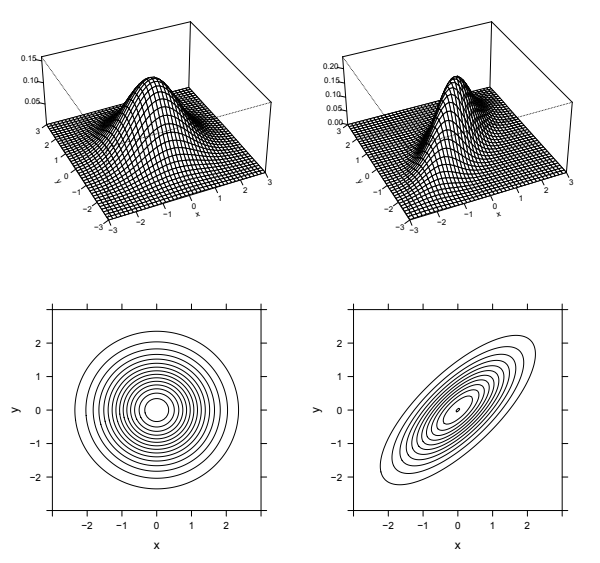
확률변수의 분포가 그 누적분포함수, 확률질량함수·확률밀도함수 또는 적률생성함수로 결정되는 것처럼, 확률벡터의 결합분포도 결합 누적분포함수, 결합확률질량함수·결합확률밀도함수 또는 이제 정의할 결합 적률생성함수로 결정된다.27
정의 7.5.6 (결합 적률생성함수). 확률벡터 \(\mathbf X=(X_1,\ldots,X_k)\)의 결합 적률생성함수는
\[M(\mathbf t)=E(e^{\mathbf t'\mathbf X})=E\bigl(e^{t_1X_1+\cdots+t_kX_k}\bigr)\]
로 정의되는 함수이다. 여기서 \(\mathbf t=(t_1,\ldots,t_k)\in\mathbb R^k\)이다. 이 기댓값이 \(\mathbb R^k\)에서 원점을 포함하는 상자 안에서 유한해야 한다. 그렇지 않으면 결합 적률생성함수가 존재하지 않는다고 말한다.
다변량 정규 확률벡터의 결합 적률생성함수는 특히 다루기 좋다. 지수 안의 \(t_1X_1+\cdots+t_kX_k\)가 정의에 의해 정규 확률변수이기 때문이다. 이는 일변량 정규분포의 적률생성함수에 관한 지식을 이용해 다변량 정규분포의 결합 적률생성함수를 구할 수 있다는 뜻이다! 임의의 정규 확률변수 \(W\)에 대해
\[E(e^W)=e^{E(W)+\frac12\operatorname{Var}(W)}\]
임을 떠올리자. 따라서 다변량 정규 확률벡터 \((X_1,\ldots,X_k)\)의 결합 적률생성함수는
\[E\bigl(e^{t_1X_1+\cdots+t_kX_k}\bigr)=\exp\left(t_1E(X_1)+\cdots+t_kE(X_k)+\frac12\operatorname{Var}(t_1X_1+\cdots+t_kX_k)\right).\]
분산 항은 공분산의 성질을 이용해 전개할 수 있다.
일반적으로 독립은 상관계수가 0이라는 조건보다 더 강한 조건임을 안다. 확률변수들은 비상관이면서 독립이 아닐 수 있다. 다변량 정규분포의 특별한 성질 하나는 결합분포가 다변량 정규분포인 확률변수들에 대해서는 독립과 상관계수가 0이라는 조건이 동치라는 것이다.
정리 7.5.7. 다변량 정규 확률벡터 안에서는 비상관이면 독립이다. 즉 \(\mathbf X\sim\mathrm{MVN}\)을 두 부분벡터 \(\mathbf X_1,\mathbf X_2\)로 나누어 \(\mathbf X=(\mathbf X_1,\mathbf X_2)\)로 쓸 수 있고, \(\mathbf X_1\)의 모든 성분이 \(\mathbf X_2\)의 모든 성분과 비상관이면 \(\mathbf X_1\)과 \(\mathbf X_2\)는 독립이다.28
특히 \((X,Y)\)가 이변량 정규분포를 따르고 \(\operatorname{Corr}(X,Y)=0\)이면 \(X\)와 \(Y\)는 독립이다.
증명. 이변량 정규분포인 경우에 정리를 증명하겠다. 더 높은 차원에서도 증명은 비슷하다. \((X,Y)\)가 이변량 정규분포를 따르고 \(E(X)=\mu_1\), \(E(Y)=\mu_2\), \(\operatorname{Var}(X)=\sigma_1^2\), \(\operatorname{Var}(Y)=\sigma_2^2\), \(\operatorname{Corr}(X,Y)=\rho\)라 하자. 결합 적률생성함수는
\[ \begin{aligned} M_{X,Y}(s,t)&=E(e^{sX+tY})=\exp\left(s\mu_1+t\mu_2+\frac12\operatorname{Var}(sX+tY)\right)\\ &=\exp\left(s\mu_1+t\mu_2+\frac12(s^2\sigma_1^2+t^2\sigma_2^2+2st\sigma_1\sigma_2\rho)\right). \end{aligned} \]
\(\rho=0\)이면 결합 적률생성함수는
\[M_{X,Y}(s,t)=\exp\left(s\mu_1+t\mu_2+\frac12(s^2\sigma_1^2+t^2\sigma_2^2)\right)\]
로 줄어든다. 그런데 이는 \(Z\sim\mathcal N(\mu_1,\sigma_1^2)\), \(W\sim\mathcal N(\mu_2,\sigma_2^2)\)이고 \(Z,W\)가 독립일 때 \((Z,W)\)의 결합 적률생성함수이기도 하다. 결합 적률생성함수는 결합분포를 결정하므로 \((X,Y)\)의 결합분포는 \((Z,W)\)의 결합분포와 같아야 한다. 따라서 \(X\)와 \(Y\)는 독립이다. \(\blacksquare\)
이 정리는 예제 7.5.2에는 적용되지 않는다. 그 예에서 확인할 수 있듯이 \(X\)와 \(Y\)는 비상관이고 독립이 아니지만, \((X,Y)\)가 이변량 정규분포를 따르지 않으므로 정리와 모순되지 않는다. 다음 두 예제에서는 정리가 적용되는 상황을 보여 준다.
예제 7.5.8 (합과 차의 독립성). \(X,Y\)가 독립이고 동일한 \(\mathcal N(0,1)\) 분포를 따르자. \((X+Y,X-Y)\)의 결합분포를 구하라.
풀이. \((X+Y,X-Y)\)는 이변량 정규분포를 따르고
\[\operatorname{Cov}(X+Y,X-Y)=\operatorname{Var}(X)-\operatorname{Cov}(X,Y)+\operatorname{Cov}(Y,X)-\operatorname{Var}(Y)=0\]
이므로 \(X+Y\)와 \(X-Y\)는 독립이다. 또한 이들은 독립이고 동일한 \(\mathcal N(0,2)\) 분포를 따른다. 같은 방법으로 \(X\sim\mathcal N(\mu_1,\sigma^2)\)와 \(Y\sim\mathcal N(\mu_2,\sigma^2)\)가 독립이고 분산이 같으면 \(X+Y\)와 \(X-Y\)가 독립임을 알 수 있다.
합과 차의 독립성은 정규분포를 유일하게 특징짓는 성질임을 보일 수 있다! 즉 \(X,Y\)가 독립이고 동일한 분포를 따르며 \(X+Y\)와 \(X-Y\)가 독립이면 \(X,Y\)는 반드시 정규분포를 따라야 한다. 연습문제 72에서는 상관계수가 일반적인 \(\rho\)인 이변량 정규분포의 경우로 이 예제를 확장한다. \(\square\)
예제 7.5.9 (표본평균과 표본분산의 독립성). \(X_1,\ldots,X_n\)이 독립이고 동일한 \(\mathcal N(\mu,\sigma^2)\) 분포를 따르며 \(n\ge2\)라 하자. 다음과 같이 정의한다.
\[\bar X_n=\frac1n(X_1+\cdots+X_n),\qquad S_n^2=\frac1{n-1}\sum_{j=1}^n(X_j-\bar X_n)^2.\]
6장에서 보였듯이 표본평균 \(\bar X_n\)의 기댓값은 참평균 \(\mu\)이고, 표본분산 \(S_n^2\)의 기댓값은 참분산 \(\sigma^2\)이다. \((\bar X_n,X_1-\bar X_n,\ldots,X_n-\bar X_n)\)에 다변량 정규분포의 성질을 적용하여 \(\bar X_n\)과 \(S_n^2\)이 독립임을 보여라.
풀이. 벡터 \((\bar X_n,X_1-\bar X_n,\ldots,X_n-\bar X_n)\)은 다변량 정규분포를 따른다. 그 성분들의 어떤 선형결합도 \(X_1,\ldots,X_n\)의 선형결합으로 쓸 수 있기 때문이다. 또한 선형성에 의해 \(E(X_j-\bar X_n)=0\)이다. 이제 \(\bar X_n\)과 \(X_j-\bar X_n\)의 공분산을 계산하자.
\[\operatorname{Cov}(\bar X_n,X_j-\bar X_n)=\operatorname{Cov}(\bar X_n,X_j)-\operatorname{Cov}(\bar X_n,\bar X_n).\]
\(\operatorname{Cov}(\bar X_n,X_j)\)에 대해 \(\bar X_n\)을 전개하면 독립성 때문에 대부분의 항이 사라진다.
\[\operatorname{Cov}(\bar X_n,X_j)=\operatorname{Cov}\left(\frac1nX_1+\cdots+\frac1nX_n,X_j\right)=\operatorname{Cov}\left(\frac1nX_j,X_j\right)=\frac1n\operatorname{Var}(X_j)=\frac{\sigma^2}{n}.\]
\(\operatorname{Cov}(\bar X_n,\bar X_n)\)에 대해서는 분산의 성질을 이용한다.
\[\operatorname{Cov}(\bar X_n,\bar X_n)=\operatorname{Var}(\bar X_n)=\frac1{n^2}\bigl(\operatorname{Var}(X_1)+\cdots+\operatorname{Var}(X_n)\bigr)=\frac{\sigma^2}{n}.\]
따라서 \(\operatorname{Cov}(\bar X_n,X_j-\bar X_n)=0\)이다. 즉 \(\bar X_n\)은 \((X_1-\bar X_n,\ldots,X_n-\bar X_n)\)의 모든 성분과 비상관이다. 다변량 정규 벡터 안에서는 비상관이면 독립이므로 \(\bar X_n\)은 벡터 \((X_1-\bar X_n,\ldots,X_n-\bar X_n)\)과 독립이다. 그런데 \(S_n^2\)은 이 벡터의 함수이므로 \(\bar X_n\)은 \(S_n^2\)과도 독립이다.
표본평균과 표본분산의 독립성 역시 정규분포를 유일하게 특징짓는 성질임을 보일 수 있다! \(X_j\)가 다른 어떤 분포를 따른다면 \(\bar X_n\)과 \(S_n^2\)은 종속이다. \(\square\)
예제 7.5.10 (이변량 정규분포의 생성). 독립이고 동일한 \(\mathcal N(0,1)\) 확률변수 \(X,Y\)를 사용할 수 있지만, 시뮬레이션을 실행하기 위해 \(\operatorname{Corr}(Z,W)=\rho\)이고 각각의 주변분포가 \(\mathcal N(0,1)\)인 이변량 정규 확률벡터 \((Z,W)\)를 생성하고 싶다고 하자. \(X,Y\)의 선형결합으로 \(Z,W\)를 어떻게 구성할 수 있을까?
풀이. 다변량 정규분포의 정의에 따라
\[Z=aX+bY,\qquad W=cX+dY\]
형태의 \((Z,W)\)는 언제나 이변량 정규분포를 따른다. 그러므로 적절한 \(a,b,c,d\)를 찾아보자. 평균은 이미 0이다. 분산이 각각 1이 되게 하면
\[a^2+b^2=1,\qquad c^2+d^2=1\]
을 얻는다. \(Z\)와 \(W\)의 공분산이 \(\rho\)가 되게 하면
\[ac+bd=\rho\]
를 얻는다. 여기서는 미지수가 방정식보다 많고 해 하나만 있으면 된다. 간단히 하기 위해 \(b=0\)인 해를 찾아보자. 그러면 \(a^2=1\)이므로 \(a=1\)로 두자. 이제 \(ac+bd=\rho\)는 \(c=\rho\)로 줄어들고, \(c^2+d^2=1\)을 이용해 적절한 \(d\)를 찾을 수 있다. 이 모든 것을 합치면 \((Z,W)\)를 다음과 같이 생성할 수 있다.
\[Z=X,\qquad W=\rho X+\sqrt{1-\rho^2}\,Y.\]
극단적인 경우 \(\rho=1\), 즉 완전 양의 상관에서는 \(Z\sim\mathcal N(0,1)\)에 대해 \(W=Z\)로 두라는 뜻이다. 극단적인 경우 \(\rho=-1\), 즉 완전 음의 상관에서는 \(Z\sim\mathcal N(0,1)\)에 대해 \(W=-Z\)로 두라는 뜻이며, 단순한 경우 \(\rho=0\)에서는 \((Z,W)=(X,Y)\)로 두라는 뜻이다. \(\square\)
7.6 정리
결합분포를 이용하면 같은 실험에서 나오는 여러 확률변수의 움직임을 기술할 수 있다. 결합분포와 관련된 중요한 함수에는 결합 누적분포함수, 결합 확률질량함수 또는 결합 확률밀도함수, 주변 확률질량함수 또는 주변 확률밀도함수, 그리고 조건부 확률질량함수 또는 조건부 확률밀도함수가 있다. 다음 표는 이산확률변수 두 개와 연속확률변수 두 개에 대해 이러한 정의를 요약한다.29 결합분포는 이산형과 연속형의 혼합형일 수도 있으며, 이 경우에는 확률질량함수와 확률밀도함수를 적절히 함께 사용한다.
| 구분 | 두 이산확률변수 | 두 연속확률변수 |
|---|---|---|
| 결합 누적분포함수 | \(F_{X,Y}(x,y)=P(X\le x,Y\le y)\) | \(F_{X,Y}(x,y)=P(X\le x,Y\le y)\) |
| 결합 확률질량함수 / 확률밀도함수 | \(P(X=x,Y=y)\). 결합 확률질량함수는 음이 아니고, 그 값의 합은 1이다. 또한 \(P((X,Y)\in A)=\sum\sum_{(x,y)\in A}P(X=x,Y=y)\)이다. | \(f_{X,Y}(x,y)=\frac{\partial^2}{\partial x\partial y}F_{X,Y}(x,y)\). 결합 확률밀도함수는 음이 아니고, 그 적분값은 1이다. 또한 \(P((X,Y)\in A)=\iint_A f_{X,Y}(x,y)\,dx\,dy\)이다. |
| 주변 확률질량함수 / 확률밀도함수 | \(P(X=x)=\sum_yP(X=x,Y=y)=\sum_yP(X=x\mid Y=y)P(Y=y)\) | \(f_X(x)=\int_{-\infty}^{\infty}f_{X,Y}(x,y)\,dy=\int_{-\infty}^{\infty}f_{X\mid Y}(x\mid y)f_Y(y)\,dy\) |
| 조건부 확률질량함수 / 확률밀도함수 | \(P(Y=y\mid X=x)=\frac{P(X=x,Y=y)}{P(X=x)}=\frac{P(X=x\mid Y=y)P(Y=y)}{P(X=x)}\) | \(f_{Y\mid X}(y\mid x)=\frac{f_{X,Y}(x,y)}{f_X(x)}=\frac{f_{X\mid Y}(x\mid y)f_Y(y)}{f_X(x)}\) |
| 독립 | 모든 \(x,y\)에 대해 \(P(X\le x,Y\le y)=P(X\le x)P(Y\le y)\)이며 \(P(X=x,Y=y)=P(X=x)P(Y=y)\)이다. | 모든 \(x,y\)에 대해 \(P(X\le x,Y\le y)=P(X\le x)P(Y\le y)\)이며 거의 모든 \((x,y)\)에서 \(f_{X,Y}(x,y)=f_X(x)f_Y(y)\)이다. |
| LOTUS | \(E(g(X,Y))=\sum_y\sum_xg(x,y)P(X=x,Y=y)\) | \(E(g(X,Y))=\int_{-\infty}^{\infty}\int_{-\infty}^{\infty}g(x,y)f_{X,Y}(x,y)\,dx\,dy\) |
공분산은 두 확률변수가 같은 방향으로 움직이는 경향을 하나의 수로 요약한다. 두 확률변수가 독립이면 비상관이지만, 그 역은 성립하지 않는다. 상관계수는 단위가 없는 표준화된 공분산으로, 항상 \(-1\)과 1 사이에 있다.30
이름 붙은 다변량 분포 가운데 중요한 두 가지는 다항분포와 다변량 정규분포이다. 다항분포는 이항분포를 일반화한 것이다. \(\operatorname{Mult}_k(n,\mathbf p)\) 확률벡터는 \(n\)개의 대상 중 \(k\)개 범주 각각에 속하는 대상의 수를 세며, \(\mathbf p\)는 \(k\)개 범주의 확률을 담은 벡터이다.
다변량 정규분포는 정규분포를 일반화한 것이다. 확률벡터의 성분들을 어떤 방식으로 선형결합하더라도 정규분포를 따르면 그 확률벡터가 다변량 정규분포를 따른다고 정의한다. 다변량 정규분포의 핵심 성질은 다변량 정규 확률벡터 안에서는 비상관이면 독립이라는 것이다.
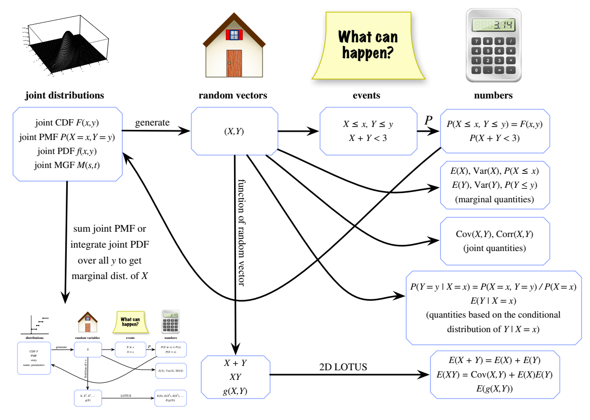
그림 7.11. 다변량 분포에서 확률론의 기본 대상. 결합분포는 결합 누적분포함수, 결합 확률질량함수 또는 확률밀도함수, 혹은 결합 적률생성함수로 결정된다.31 확률벡터 \((X,Y)\)로부터 유용한 결합량, 주변량, 조건부량을 여럿 얻을 수 있다. 2차원 LOTUS를 이용하면 \(X\)와 \(Y\)의 함수에 대한 기댓값을 구할 수 있다. 결합 확률질량함수를 모든 \(y\)에 대해 더하거나 결합 확률밀도함수를 모든 \(y\)에 대해 적분하면 \(X\)의 주변분포를 얻어 일차원 분포의 경우로 돌아온다.
그림 속 영문 표기의 joint distributions, random vectors, events, numbers는 각각 결합분포, 확률벡터, 사건, 수를 뜻한다. generate는 생성, function of random vector는 확률벡터의 함수, marginal quantities는 주변량, joint quantities는 결합량을 뜻한다. 오른쪽 아래의 조건부량은 \(X=x\)가 주어졌을 때 \(Y\)의 조건부분포를 바탕으로 얻는 양이다. 왼쪽 아래의 작은 도식은 일차원 분포에 대한 앞 장의 그림이다. ‘What can happen?’은 ‘어떤 일이 일어날 수 있는가?’를 뜻한다.
그림 7.11은 확률론의 기본 대상을 나타내는 도식을 다변량 상황으로 확장한 것이다. 표기를 단순하게 하기 위해 이변량의 경우를 사용했다. 결합분포를 이용해 확률벡터 \((X,Y)\)를 생성할 수 있다. 그런 다음 여러 결합량, 주변량, 조건부량을 연구할 수 있다. 결합 확률질량함수를 모든 \(y\)에 대해 더하거나 결합 확률밀도함수를 모든 \(y\)에 대해 적분하면 \(X\)의 주변분포를 얻으며, 이로써 다시 일차원의 영역으로 돌아온다.
7.7 R
7.7.1 다항분포
다항분포에 사용하는 함수는 dmultinom과 rmultinom이다. dmultinom은 다항분포의 결합확률질량함수이고, rmultinom은 다항 확률벡터의 실현값을 생성한다. 다항분포의 결합 누적분포함수는 다루기가 번거로워 R에 내장되어 있지 않다.
dmultinom을 사용하려면 분포의 모수뿐 아니라 결합확률질량함수를 계산할 값도 입력해야 한다. 예를 들어
x <- c(2,0,3)
n <- 5
p <- c(1/3,1/3,1/3)
dmultinom(x,n,p)는 다음과 같을 때 \(P(X_1=2,X_2=0,X_3=3)\)을 반환한다.
\[\mathbf X=(X_1,X_2,X_3)\sim\operatorname{Mult}_3(5,(1/3,1/3,1/3)).\]
물론 n은 sum(x)와 같아야 한다. dmultinom(x,7,p)를 실행하려고 하면 R은 오류를 보고한다.
rmultinom의 첫 입력은 생성할 다항 확률벡터의 개수이며, 나머지 입력은 같다. 위와 같은 n과 p를 사용해 rmultinom(10,n,p)를 입력했을 때 R은 다음 행렬을 주었다.
0 2 1 3 2 3 1 2 3 4
2 2 2 2 3 0 1 2 0 0
3 1 2 0 0 2 3 1 2 1행렬의 각 열은 \(\operatorname{Mult}_3(5,(1/3,1/3,1/3))\) 분포에서 한 번 추출한 값에 해당한다. 특히 각 열의 합은 5이다.
7.7.2 다변량 정규분포
다변량 정규분포에 사용하는 함수들은 mvtnorm 패키지에 있다. 온라인 자료를 참고하면 자신의 시스템에서 R 패키지를 설치하는 방법을 배울 수 있다. 많은 시스템에서 쉬운 방법은 install.packages 명령을 사용하는 것이다. 예를 들어 install.packages("mvtnorm")을 입력하면 mvtnorm 패키지를 설치할 수 있다. 설치한 후 library(mvtnorm)으로 패키지를 불러온다. 그러면 dmvnorm으로 결합확률밀도함수를 계산할 수 있고 rmvnorm으로 확률벡터를 생성할 수 있다.
예를 들어 각 쌍의 상관계수가 \(\rho=0.7\)이고 주변분포가 각각 \(\mathcal N(0,1)\)인 이변량 정규 확률벡터 \((Z,W)\) 1000개를 서로 독립적으로 생성하고 싶다고 하자. 이를 위해 다음을 입력할 수 있다.
meanvector <- c(0,0)
rho <- 0.7
covmatrix <- matrix(c(1,rho,rho,1), nrow = 2, ncol = 2)
r <- rmvnorm(n = 10^3, mean = meanvector, sigma = covmatrix)여기서 공분산행렬은 다음과 같다.
\[\begin{pmatrix}1&\rho\\\rho&1\end{pmatrix}\]
그 이유는 다음과 같다.
- \(\operatorname{Cov}(Z,Z)=\operatorname{Var}(Z)=1\)이다. 이는 왼쪽 위의 원소이다.
- \(\operatorname{Cov}(W,W)=\operatorname{Var}(W)=1\)이다. 이는 오른쪽 아래의 원소이다.
- \(\operatorname{Cov}(Z,W)=\operatorname{Corr}(Z,W)\operatorname{SD}(Z)\operatorname{SD}(W)=\rho\)이다. 이는 나머지 두 원소이다.
이제 r은 \(1000\times2\) 행렬이며 각 행은 이변량 정규 확률벡터이다. 이를 평면 위의 점으로 보려면 plot(r)으로 산점도를 만들 수 있다. 산점도에서 강한 양의 상관관계가 분명하게 드러날 것이다. \(Z\)와 \(W\)의 공분산을 추정하려면 cov(r)을 사용할 수 있다. 이 명령은 실제 공분산행렬을 추정한다.
예제 7.5.10은 이변량 정규 확률벡터 생성 문제에 대한 다른 접근법을 제시한다.
rho <- 0.7
tau <- sqrt(1-rho^2)
x <- rnorm(10^3)
y <- rnorm(10^3)
z <- x
w <- rho*x + tau*y이렇게 하면 벡터 z에 \(Z\) 좌표들이, 벡터 w에 \(W\) 좌표들이 들어간다. 앞에서처럼 이들을 하나의 \(1000\times2\) 행렬에 넣으려면 cbind(z,w)를 입력하여 두 벡터를 열로 묶으면 된다.
7.7.3 코시 분포
예제 7.1.25에서 소개한 코시 분포는 dcauchy, pcauchy, rcauchy라는 세 함수를 이용해 다룰 수 있다. 입력값은 하나만 필요하다. 예를 들어 dcauchy(0)은 0에서 계산한 코시 확률밀도함숫값이다.32
코시 분포의 매우 두꺼운 꼬리를 재미있게 확인하려면, 코시 분포에서 시뮬레이션한 값 1000개의 히스토그램을 만들어 보자.
hist(rcauchy(1000))분포의 꼬리에서 극단적인 값들이 나오므로, 이 히스토그램은 그것을 생성한 분포의 확률밀도함수와 전혀 닮지 않는다.
7.8 연습문제
ⓢ 표시가 있는 문제의 자세한 풀이는 http://stat110.net에서 볼 수 있다.
7.8.1 결합분포, 주변분포, 조건부분포
앨리스와 밥은 어느 날 정오에 만나 점심을 먹기로 했다. 하지만 둘 다 시간을 잘 지키기로 유명하지는 않다. 두 사람은 각자 독립적으로 정오와 오후 1시 사이에 균등하게 분포하는 시각에 도착한다. 각자는 상대가 올 때까지 최대 15분을 기다릴 의향이 있다. 그날 두 사람이 만나 점심을 먹을 확률은 얼마인가?
앨리스, 밥, 칼은 어느 날 만나 점심을 먹기로 했다. 각자는 독립적으로 오후 1시와 1시 30분 사이에 균등하게 분포하는 시각에 도착한다.
- 칼이 첫 번째로 도착할 확률은 얼마인가?
나머지 소문항에서는 칼이 오후 1시 10분에 첫 번째로 도착했다고 가정하고 이 사실을 조건으로 삼아라.
- 칼이 10분 넘게 혼자 기다릴 확률은 얼마인가?
- 세 사람이 모두 모일 때까지 칼이 10분 넘게 기다려야 할 확률은 얼마인가?
- 두 번째로 도착한 사람이 세 번째 사람이 올 때까지 5분 넘게 기다려야 할 확률은 얼마인가?
히버트 의사와 닉 의사 중 한 명이 \(n\)번의 수술을 맡는다. \(H\)를 히버트 의사가 수술을 맡는 사건의 지시확률변수라 하고 \(E(H)=p\)라고 하자. 히버트 의사가 수술을 맡았다는 조건 아래에서 각 수술은 독립적으로 확률 \(a\)로 성공한다. 닉 의사가 맡았다는 조건 아래에서는 각 수술이 독립적으로 확률 \(b\)로 성공한다. 성공한 수술의 수를 \(X\)라 하자.
- \(H\)와 \(X\)의 결합확률질량함수를 구하라.
- \(X\)의 주변 확률질량함수를 구하라.
- \(X=k\)가 주어졌을 때 \(H\)의 조건부 확률질량함수를 구하라.
공정한 동전을 두 번 던진다. 두 번 중 앞면이 나온 횟수를 \(X\), 두 번의 결과가 같은 사건의 지시확률변수를 \(Y\)라 하자.
- \(X\)와 \(Y\)의 결합확률질량함수를 구하라.
- \(X\)와 \(Y\)의 주변 확률질량함수를 구하라.
- \(X\)와 \(Y\)는 독립인가?
- \(X=x\)가 주어졌을 때 \(Y\)의 조건부 확률질량함수와 \(Y=y\)가 주어졌을 때 \(X\)의 조건부 확률질량함수를 구하라.
공정한 주사위를 던진 다음 앞면 확률이 \(p\)인 동전을 주사위 눈만큼 던진다. 예를 들어 주사위가 3이면 동전을 세 번 던진다. 주사위 눈을 \(X\), 동전 앞면이 나온 횟수를 \(Y\)라 하자.
- \(X\)와 \(Y\)의 결합확률질량함수를 구하라. 둘은 독립인가?
- \(X\)와 \(Y\)의 주변 확률질량함수를 구하라.
- \(X=x\)가 주어졌을 때 \(Y\)의 조건부 확률질량함수와 \(X=x\)가 주어졌을 때 \(Y\)의 조건부 확률질량함수를 구하라.33
여성 \(n\)명과 남성 \(m\)명으로 이루어진 집단에서 크기 \(k\)인 위원회를 고른다. 가능한 크기 \(k\)의 위원회는 모두 같은 가능성을 갖는다. 위원회에 속한 여성과 남성의 수를 각각 \(X,Y\)라 하자.
- \(X,Y\)의 결합확률질량함수를 구하고 지지집합을 명시하라.
- 결합확률질량함수를 계산에 이용하는 방법과 이야기를 이용하는 방법, 두 가지로 \(X\)의 주변 확률질량함수를 구하라.
- \(X=x\)가 주어졌을 때 \(Y\)의 조건부 확률질량함수를 구하라.
길이가 양의 상수 \(L\)인 막대를 균등하게 무작위인 지점 \(X\)에서 부러뜨린다. \(X=x\)가 주어졌을 때 두 번째로 부러뜨릴 지점 \(Y\)를 구간 \([0,x]\)에서 균등하게 고른다.
- \(X,Y\)의 결합확률밀도함수를 구하고 지지집합을 명시하라.
- \(X\)의 주변분포가 \(\operatorname{Unif}(0,L)\)임을 이미 알고 있다. 결합확률밀도함수에서 \(Y\)를 주변화하여도 이 결과가 나오는지 확인하라.
- \(X=x\)가 주어졌을 때 \(Y\)의 조건부분포가 \(\operatorname{Unif}(0,x)\)임을 이미 알고 있다. 결합·주변 밀도로 표현되는 조건부 확률밀도함수의 정의를 이용해도 같은 결과가 나오는지 확인하라.
- \(Y\)의 주변 확률밀도함수를 구하라.
- \(Y=y\)가 주어졌을 때 \(X\)의 조건부 확률밀도함수를 구하라.
- 표준 카드 한 벌에서 카드를 한 번에 한 장씩 복원추출로 다섯 장 무작위로 고른다. 뽑은 퀸, 킹, 그 밖의 카드 수를 각각 \(X,Y,Z\)라 하자. \(X,Y,Z\)의 결합확률질량함수를 구하라.
- \(X,Y\)의 결합확률질량함수를 구하라. 힌트: \(Z\)의 가능한 값들에 대해 \(X,Y,Z\)의 결합확률질량함수를 더할 때 뽑은 카드가 다섯 장이라는 제약 때문에 대부분의 항은 0임에 유의하라.
- 이번에는 비복원추출한다고 가정하자. 다섯 장으로 이루어진 모든 패는 같은 가능성을 갖는다. \(X,Y,Z\)의 결합확률질량함수를 구하라. 힌트: 확률의 고전적 정의를 이용하라.
\(X,Y\)가 i.i.d. \(\operatorname{Geom}(p)\)이고 \(N=X+Y\)라 하자.
- \(X,Y,N\)의 결합확률질량함수를 구하라.
- \(X,N\)의 결합확률질량함수를 구하라.
- \(N=n\)이 주어졌을 때 \(X\)의 조건부 확률질량함수를 구하고 그 결과의 뜻을 간단히 말로 설명하라.
\(X,Y\)가 i.i.d. \(\operatorname{Expo}(\lambda)\)이고 \(T=X+Y\)라 하자.
- \(X=x\)가 주어졌을 때 \(T\)의 조건부 누적분포함수를 구하라. 값이 0인 곳을 반드시 명시하라.
- 조건부 확률밀도함수 \(f_{T\mid X}(t\mid x)\)를 구하고 유효한 밀도함수인지 확인하라.
- 조건부 확률밀도함수 \(f_{X\mid T}(x\mid t)\)를 구하고 유효한 밀도함수인지 확인하라. 힌트: \(T\)의 주변 밀도를 몰라도 베이즈 정리를 이용할 수 있다. 정규화 상수만 빼고 조건부 밀도의 형태를 알아보면, 그 상수는 조건부 밀도가 유효해지도록 정해져야 한다.
- 예제 8.2.4에서는 \(t>0\)에 대해 \(T\)의 주변 확률밀도함수가 \(f_T(t)=\lambda^2te^{-\lambda t}\)임을 보인다. 앞 소문항들과 베이즈 정리를 이용해 이 사실을 짧고 다른 방법으로 증명하라.
\(X\sim\mathcal N(0,1)\)이고 \(X=x\)가 주어졌을 때 \(Y,Z\)는 i.i.d. \(\mathcal N(x,1)\)인 확률변수라 하자.
- \(X,Y,Z\)의 결합확률밀도함수를 구하라.
- 정의에 따라 \(X\)가 주어졌을 때 \(Y,Z\)는 조건부 독립이다. 조건을 붙이지 않아도 둘이 독립인지 직관적으로 논하라.
- \(Y,Z\)의 결합확률밀도함수를 구하라. 답을 적분으로 남겨도 되지만, 제곱완성 등의 대수 계산과 정규분포의 성질을 이용하면 적분을 계산할 수 있다.
\(X\sim\operatorname{Expo}(\lambda)\)이고 \(c\)는 양의 상수라 하자.
- 무기억성을 기억한다면 \(X>c\)가 주어졌을 때 \(X\)의 조건부분포가 \(c+X\)의 분포와 같다는 것을 이미 알고 있다. 성공을 \(c\)분 기다린 뒤 새로운 \(\operatorname{Expo}(\lambda)\) 추가 대기 시간을 갖는다고 생각하라. \(X>c\)가 주어졌을 때 \(X\)의 조건부 누적분포함수와 조건부 확률밀도함수를 구하여 이를 다른 방법으로 유도하라.
- \(X<c\)가 주어졌을 때 \(X\)의 조건부 누적분포함수와 조건부 확률밀도함수를 구하라.
\(X,Y\)가 i.i.d. \(\operatorname{Expo}(\lambda)\)라 하자. \(X<Y\)가 주어졌을 때 \(X\)의 조건부분포를 다음 두 가지 방법으로 구하라.
- 미적분으로 조건부 확률밀도함수를 구한다.
- 미적분을 사용하지 않고, \(X<Y\)가 주어졌을 때 \(X\)의 조건부분포가 \(\min(X,Y)\)의 무조건부분포와 같다는 것을 논증한 뒤 독립 지수 확률변수의 최솟값에 관한 앞의 결과를 적용한다.
ⓢ (a) 막대 위의 두 점을 독립적이고 균등하게 고른 다음 그 점들에서 부러뜨려 세 조각으로 나눈다. 세 조각으로 삼각형을 만들 수 있을 확률은 얼마인가? 힌트: 길이가 \(a,b,c\)인 세 선분으로 삼각형을 만들 수 있는 필요충분조건은 \(a,b,c\in(0,1/2)\)이다.34 확률을 평면에서 넓이에 비례하는 양으로 기하학적으로 해석하면 미적분을 피할 수 있다. 단, 이 접근법을 사용할 때 평면상의 무작위 점이 어떤 영역 위에서 균등분포를 따르는지 반드시 확인하라.
- 원형 탁자의 둘레에 다리 세 개를 균등하고 독립적으로 배치한다. 탁자가 서 있을 확률은 얼마인가?
\(X,Y\)를 결합 누적분포함수가 \(F(x,y)\)인 연속확률변수라 하자. \((X,Y)\)가 직사각형 \([a_1,a_2]\times[b_1,b_2]\)에 속할 확률이 다음과 같음을 보여라.
\[F(a_2,b_2)-F(a_1,b_2)+F(a_1,b_1)-F(a_2,b_1).\]
\(X,Y\)의 결합확률밀도함수가 \(0<x<1\), \(0<y<1\)에서 \(f_{X,Y}(x,y)=x+y\)라고 하자.
- 유효한 결합확률밀도함수인지 확인하라.
- \(X,Y\)는 독립인가?
- \(X,Y\)의 주변 확률밀도함수를 구하라.
- \(X=x\)가 주어졌을 때 \(Y\)의 조건부 확률밀도함수를 구하라.
\(X,Y\)의 결합확률밀도함수가 \(0<x<y<1\)에서 \(f_{X,Y}(x,y)=cxy\)라고 하자.
- 유효한 결합확률밀도함수가 되도록 \(c\)를 구하라.
- \(X,Y\)는 독립인가?
- \(X,Y\)의 주변 확률밀도함수를 구하라.
- \(X=x\)가 주어졌을 때 \(Y\)의 조건부 확률밀도함수를 구하라.
ⓢ \((X,Y)\)를 꼭짓점이 \((0,0),(0,1),(1,0)\)인 평면상의 삼각형에서 균등하게 고른 무작위 점이라 하자. \(X,Y\)의 결합확률밀도함수, \(X\)의 주변 확률밀도함수, \(Y\)가 주어졌을 때 \(X\)의 조건부 확률밀도함수를 구하라.
ⓢ 무작위 점 \((X,Y,Z)\)를 공 \(B=\{(x,y,z):x^2+y^2+z^2\le1\}\)에서 균등하게 고른다.
- \(X,Y,Z\)의 결합확률밀도함수를 구하라.
- \(X,Y\)의 결합확률밀도함수를 구하라.
- \(X\)의 주변 확률밀도함수를 적분으로 표현하라.
ⓢ \(U_1,U_2,U_3\)이 i.i.d. \(\operatorname{Unif}(0,1)\)이고 \(L=\min(U_1,U_2,U_3)\), \(M=\max(U_1,U_2,U_3)\)이라 하자.
- \(M\)의 주변 누적분포함수와 주변 확률밀도함수, 그리고 \(L,M\)의 결합 누적분포함수와 결합확률밀도함수를 구하라. 힌트: 마지막 두 함수를 구할 때는 먼저 \(P(L\ge l,M\le m)\)을 생각하라.
- \(L\)이 주어졌을 때 \(M\)의 조건부 확률밀도함수를 구하라.
계수 \(A,B\)를 i.i.d. \(\operatorname{Unif}(0,1)\) 확률변수로 뽑아 정할 때 이차다항식 \(Ax^2+Bx+1\)이 적어도 하나의 실근을 가질 확률을 구하라. 힌트: 근의 공식에 따라 이차다항식 \(ax^2+bx+c\)가 실근을 가질 필요충분조건은 \(b^2-4ac\ge0\)이다.
\(X,Y\)는 각각 주변적으로 지지집합이 \((0,\infty)\)이고 결합확률밀도함수 \(f_{X,Y}\)는 \(0<x<y\)에서 양수이며 그 밖에서는 0이라 하자.
- \(X=x\)가 주어졌을 때 \(Y\)의 조건부 확률밀도함수의 지지집합은 무엇인가?
- \(X,Y\)가 독립일 수 없음을 보여라.
\(n\)차원 유클리드 공간 \(\mathbb R^n\)에서 영역의 부피는 그 영역에서 1을 적분한 값이다. \(\mathbb R^n\)의 단위공은 원점에 중심을 둔 반지름 1인 공 \(\{(x_1,\ldots,x_n):x_1^2+\cdots+x_n^2\le1\}\)이다. 수학 부록 A.7절에서 언급했듯이 \(n\)차원 단위공의 부피는
\[v_n=\frac{\pi^{n/2}}{\Gamma(n/2+1)}\]
이다. 여기서 \(\Gamma\)는 모든 \(a>0\)에 대해
\[\Gamma(a)=\int_0^\infty x^ae^{-x}\,\frac{dx}{x}\]
로 정의되는 매우 유명한 감마함수이며, 다음 장에서 중요한 역할을 한다. 감마함수에 관한 몇 가지 유용한 사실로 모든 \(a>0\)에 대해 \(\Gamma(a+1)=a\Gamma(a)\)이고 \(\Gamma(1)=1\), \(\Gamma(1/2)=\sqrt\pi\)라는 것이 있다. 이 사실들은 가정해도 된다. 이에 따라 양의 정수 \(n\)에 대해 \(\Gamma(n)=(n-1)!\)이며 음이 아닌 정수 \(n\)에 대해서도 \(\Gamma(n+1/2)\)를 구할 수 있다. 연습으로 \(v_2=\pi\)(2차원 단위원판의 넓이), \(v_3=4\pi/3\)(3차원 단위공의 부피)임을 확인하라.
\(U_1,U_2,\ldots,U_n\)이 i.i.d. \(\operatorname{Unif}(-1,1)\)이라 하자.
- \((U_1,\ldots,U_n)\)이 \(\mathbb R^n\)의 단위공 안에 있을 확률을 구하라.
- \(n=1,2,\ldots,10\)에 대해 (a)의 결과를 수치로 계산하고 그래프를 그려라. 손으로 그래프를 그리는 데 특별히 뛰어나지 않다면 컴퓨터를 이용하라. 위 감마함수의 성질만으로 적분 없이 계산할 수 있지만, R의
gamma명령으로 감마함수를 계산해도 된다. - \(0<c<1\)인 상수 \(c\)에 대해 \(X_n\)을 \(|U_j|>c\)를 만족하는 \(U_j\)의 개수라 하자. \(X_n\)의 분포는 무엇인가?
- \(c=1/\sqrt2\)일 때 (c)의 결과로부터 \(n\to\infty\)일 때 (a)의 확률이 어떻게 되는지 간단하고 짧게 유도하라.
ⓢ 학생 A와 B가 숙제를 독립적으로 한다. A는 숙제를 끝내는 데 \(Y_1\sim\operatorname{Expo}(\lambda_1)\)시간이 걸리고 B는 \(Y_2\sim\operatorname{Expo}(\lambda_2)\)시간이 걸린다.
- 숙제 해결 시간의 비 \(Y_1/Y_2\)의 누적분포함수와 확률밀도함수를 구하라.
- A가 B보다 먼저 숙제를 끝낼 확률을 구하라.
1번 회사와 2번 회사가 막 설립되었다. 주식시장 폭락은 비율 \(\lambda_0\)인 포아송 과정을 따라 발생한다. 이런 폭락이 일어나면 두 회사 모두 폐업한다. \(j\in\{1,2\}\)에 대해 유형 \(j\)의 악재가 일어날 수도 있으며, 이는 \(j\)번 회사가 아직 폐업하지 않았다면 그 회사를 폐업시키지만 다른 회사에는 영향을 주지 않는다. 유형 \(j\)의 악재는 비율 \(\lambda_j\)인 포아송 과정을 따라 발생한다. 주식시장 폭락도 유형 \(j\)의 악재도 발생하지 않았다면 \(j\)번 회사는 계속 영업한다. 세 포아송 과정은 서로 독립이다. 1번과 2번 회사가 영업하는 시간을 각각 \(X_1,X_2\)라 하자.
- \(X_1,X_2\)의 주변분포를 구하라.
- \(P(X_1>x_1,X_2>x_2)\)를 구하고 이를 이용해 \(X_1,X_2\)의 결합 누적분포함수를 구하라.
ⓢ 블리스빌의 버스 회사는 사업 기회가 유망하다고 보고 블로치빌에서도 운행을 시작한다. 한편 프레드는 다시 블로치빌로 이사했다. 이제 프레드가 정류장에 도착하면 독립인 두 버스 노선 중 어느 버스든 올 수 있으며 둘 다 그를 집으로 데려다준다. 블리스빌 회사 버스는 정확히 10분 간격으로 도착하고, 블로치빌 회사 버스가 온 뒤 다음 버스가 올 때까지의 시간은 \(\operatorname{Expo}(1/10)\)이다. 프레드는 어느 날 균등하게 무작위인 시각에 도착한다.
- 블로치빌 회사 버스가 먼저 도착할 확률은 얼마인가? 힌트: 연속형 전체 확률의 법칙을 쓰면 좋다.
- 프레드가 버스를 기다리는 시간의 누적분포함수는 무엇인가?
호빗 부부 \(n\)쌍을 대상으로 장수 연구를 한다. 호빗 한 사람이 111번째 생일에 이를 때까지 살 확률을 \(p\)라 하고 서로 다른 호빗의 수명은 독립이라고 가정한다. 한 쌍에서 둘 다 111세에 이르지 못한 부부의 수를 \(N_0\), 한 명만 이른 부부의 수를 \(N_1\), 둘 다 이른 부부의 수를 \(N_2\)라 하자.
- \(N_0,N_1,N_2\)의 결합확률질량함수를 구하라.
나머지 소문항에서는 조사 대상 호빗 중 정확히 \(h\)명이 111번째 생일을 맞았다는 사실을 관측했다고 하자.
- (a)와 조건부확률의 정의를 이용해 이 정보가 주어졌을 때 \(N_2\)의 조건부 확률질량함수를 정규화 상수를 제외하고 구하라. 즉 정규화 상수는 구하지 않아도 되며 조건부 확률질량함수에 비례하는 간단한 식을 제시하면 된다. 간단히 하기 위해 곱셈 상수는 무시해도 되며 그래야 한다. 이제 \(h\)는 알려진 상수이므로 \(h\)의 함수인 곱셈 인수도 여기에 포함된다.
- 이번에는 직접 경우의 수를 세어 \(N_2\)의 조건부 확률질량함수를 구하고, 유효한 조건부 확률질량함수가 되도록 필요한 모든 정규화 상수를 포함하라.
- (c)의 답에 \(p\)가 나타나야 하는지 직관적으로 논하라.
- 위 정보가 주어졌을 때 \(N_2\)의 조건부기댓값을 완전히 간단히 하여 구하라. 복잡한 합 없이 구할 수 있다.
쇼핑센터에 1부터 \(n\)까지 번호가 붙은 상점 \(n\)개가 있다. \(X_i\)를 특정 달에 상점 \(i\)를 방문한 고객 수라 하고 \(X_1,\ldots,X_n\)은 확률질량함수 \(p(x)=P(X_i=x)\)를 가진 i.i.d.라고 하자. \(I\sim\operatorname{DUnif}(1,2,\ldots,n)\)을 무작위로 고른 상점의 번호라 하면 \(X_I\)는 무작위로 고른 상점의 고객 수이다.35
- \(i\ne j\)에 대해 확률질량함수 \(p(x)\)를 이용한 합으로 \(P(X_i=X_j)\)를 구하라.
- \(I\)와 \(X_I\)의 결합확률질량함수를 구하라. 둘은 독립인가?
- 무작위로 고른 상점의 고객 수 \(X_I\)는 1번 상점 고객 수 \(X_1\)과 같은 주변분포를 갖는가?
- \(J\sim\operatorname{DUnif}(1,2,\ldots,n)\)도 무작위로 고른 상점의 번호이고 \(I,J\)는 독립이라 하자. 확률질량함수 \(p(x)\)를 이용한 합으로 \(P(X_I=X_J)\)를 구하라. 고정된 \(i\ne j\)에 대해 \(P(X_I=X_J)\)와 \(P(X_i=X_j)\)는 어떻게 비교되는가?
\(X,Y\)는 i.i.d. \(\operatorname{Geom}(p)\)이고 \(L=\min(X,Y)\), \(M=\max(X,Y)\)라 하자.
- \(L,M\)의 결합확률질량함수를 구하라. 둘은 독립인가?
- 결합확률질량함수와 이야기를 각각 이용하는 두 방법으로 \(L\)의 주변분포를 구하라.
- \(E(M)\)을 구하라. 힌트: (b)와 \(L+M=X+Y\)라는 사실을 이용하면 빠르게 구할 수 있다.
- \(L,M-L\)의 결합확률질량함수를 구하라. 둘은 독립인가?
\(X,Y\)의 결합 누적분포함수가 \(x>0,y>0\)에서
\[F(x,y)=1-e^{-x}-e^{-y}+e^{-(x+y+\theta xy)}\]
이고 그 밖에서는 0이라고 하자. 모수 \(\theta\)는 \([0,1]\)에 속한다.
- \(X,Y\)의 결합확률밀도함수를 구하라. 어떤 \(\theta\) 값에서 둘이 독립인가? 그런 값이 없을 수도 있다.
- \(\theta\in[0,1]\)을 요구하는 이유를 설명하라.
- (a)의 결합확률밀도함수에서 직접 \(X,Y\)의 주변 확률밀도함수를 구하라. 적분할 때 부분적분이나 컴퓨터의 도움을 사용하지 말고, 잘 알려진 분포들의 적률에 관해 알고 있는 사실과 패턴을 맞추어라.
- 결합 누적분포함수에서 직접 \(X,Y\)의 주변 누적분포함수를 구하라.
7.8.2 2차원 LOTUS
- ⓢ \(X,Y\)가 i.i.d. \(\operatorname{Unif}(0,1)\)이라 하자. \(X\)와 \(Y\) 사이 거리의 표준편차를 구하라.
- ⓢ \(X,Y\)가 i.i.d. \(\operatorname{Expo}(\lambda)\)라 하자. (a) 2차원 LOTUS를 이용하는 방법과 (b) 미적분 없이 무기억성을 이용하는 방법으로 \(E|X-Y|\)를 구하라.
- 앨리스가 창구 직원이 두 명인 우체국에 들어간다. 두 직원 모두 손님을 응대하는 중이지만 앨리스는 다음 차례이다. 왼쪽 직원의 손님 응대 시간은 \(\operatorname{Expo}(\lambda_1)\)이고 오른쪽 직원의 응대 시간은 \(\operatorname{Expo}(\lambda_2)\)이다. 앨리스가 자신의 차례까지 기다리는 시간을 \(T\)라 하자.36
- \(T\)의 평균과 분산을 계산하지 않아도 되는 이중적분으로 표현하라.
- 미적분 없이 \(T\)의 분포, 평균, 분산을 구하라.
- \((X,Y)\)를 꼭짓점이 \((0,0),(0,1),(1,0)\)인 평면상의 삼각형에서 균등하게 고른 무작위 점이라 하자. \(\operatorname{Cov}(X,Y)\)를 구하라. 연습문제 18에서는 이 상황의 결합·주변·조건부 확률밀도함수를 다룬다.
- 무작위 점을 단위원판 \(\{(x,y):x^2+y^2\le1\}\)에서 균등하게 고르고 원점으로부터의 거리를 \(R\)이라 하자.
- 2차원 LOTUS로 \(E(R)\)을 구하라. 힌트: 적분할 때 극좌표로 변환하라. 수학 부록을 보라.
- 영역 위의 균등분포에서는 그 영역 안의 확률이 넓이에 비례한다는 사실을 이용해, 미적분 없이 \(R^2\)과 \(R\)의 누적분포함수를 구하라. 그런 다음 각각의 확률밀도함수를 구하고, 기댓값의 정의를 쓰는 방법과 \(R\)을 \(R^2\)의 함수로 생각해 1차원 LOTUS를 쓰는 방법으로 \(E(R)\)을 두 번 더 구하라.
- \(X,Y\)를 이산확률변수라 하자.37
- 선형성을 가정하지 않고 2차원 LOTUS를 이용하여 \(E(X+Y)=E(X)+E(Y)\)임을 보여라.
- 이제 \(X,Y\)가 독립이라고 가정하자. 2차원 LOTUS를 이용해 둘이 비상관임을, 즉 \(E(XY)=E(X)E(Y)\)임을 보여라.
- \(X,Y\)를 확률밀도함수 \(f\), 평균 \(\mu\), 분산 \(\sigma^2\)을 가진 i.i.d. 연속확률변수라 하자. \(X\)와 그 평균 사이 거리의 제곱의 기댓값은 \(\sigma^2\)이며 \(Y\)도 마찬가지임을 알고 있다. 이 문제는 \(X\)와 \(Y\) 사이 거리의 제곱의 기댓값에 관한 것이다.
- 2차원 LOTUS를 이용해 \(E(X-Y)^2\)을 이중적분으로 나타내라.
- \((x-y)^2=x^2-2xy+y^2\)으로 전개하고 (a)의 이중적분을 계산해 \(E(X-Y)^2=2\sigma^2\)임을 보여라.
- \(\mu\)를 더하고 빼는 다음 기법에 기초해 (b)의 결과를 다른 방법으로 증명하라.
7.8.3 공분산
ⓢ \(X,Y\)를 확률변수라 하자. “\(\max(X,Y)+\min(X,Y)=X+Y\)”라는 말은 맞는가? “최댓값이 \(X\)이고 최솟값이 \(Y\)이거나 그 반대이며 공분산은 대칭이므로 \(\operatorname{Cov}(\max(X,Y),\min(X,Y))=\operatorname{Cov}(X,Y)\)”라는 말은 맞는가? 설명하라.
ⓢ 공정한 6면체 주사위 두 개(초록색 하나와 주황색 하나)를 던지고, 각각 나온 눈을 \(X,Y\)라 하자.
- \(X+Y\)와 \(X-Y\)의 공분산을 계산하라.
- \(X+Y\)와 \(X-Y\)는 독립인가?
\(X,Y\)가 i.i.d. \(\operatorname{Unif}(0,1)\)이라 하자.
- \(X+Y\)와 \(X-Y\)의 공분산을 계산하라.
- \(X+Y\)와 \(X-Y\)는 독립인가?
ⓢ \(X,Y\)는 표준화된 확률변수, 즉 각각 주변적으로 평균 0과 분산 1을 가지며 상관계수는 \(\rho\in(-1,1)\)이라 하자. \(Z=aX+bY\), \(W=cX+dY\)가 비상관이면서도 여전히 표준화되도록 \(a,b,c,d\)를 \(\rho\)를 이용해 구하라.
ⓢ 110명으로 이루어진 집단의 서로 다른 생일의 수를 \(X\)라 하자. 즉 그 집단에서 적어도 한 사람이 태어난 날짜의 수이다. 통상적인 가정, 즉 2월 29일은 없고 나머지 365일이 모두 같은 가능성을 가지며 한 사람이 태어난 날과 다른 사람들이 태어난 날은 독립이라는 가정 아래 \(X\)의 평균과 분산을 구하라.
- \(X,Y\)가 베르누이 확률변수이며 모수는 달라도 된다고 하자. \(X,Y\)가 비상관이면 독립임을 보여라.
- 어느 두 변수씩은 비상관이지만 세 변수는 종속인 베르누이 확률변수 세 개의 예를 들어라.
예제 4.3.12의 쿠폰 수집가 문제에서 완전한 세트를 모을 때까지 필요한 장난감 수의 분산을 합으로 구하라.
어떤 방법으로 무작위 삼각형을 만들되 각의 모든 쌍이 같은 결합분포를 갖는다고 하자. 각의 분산이 0이 아니라고 가정할 때 두 각의 상관계수는 얼마인가?
\(n\ge2\)명이 각자 이름을 쪽지에 적는다. 같은 이름을 가진 두 사람은 없다. 쪽지들을 모자에 넣고 섞은 다음 각 사람이 한 장씩 매 단계 균등하게 무작위로 비복원추출한다. 자기 이름을 뽑은 사람 수의 표준편차를 구하라.
예제 4.4.7에서처럼 항아리에 흰 공 \(w\)개와 검은 공 \(b\)개가 있다. 흰 공을 \(r\)개 뽑을 때까지 공을 한 번에 하나씩 무작위로 비복원추출한다. \(r\)번째 흰 공을 뽑기 전에 뽑은 검은 공의 수를 \(X\sim\operatorname{NHGeom}(w,b,r)\)라 하자. 이 문제에서 \(\operatorname{Var}(X)\)를 유도할 것이다.
예제 4.4.7에서 설명했듯이 항아리가 빌 때까지 공을 계속 뽑는다고 가정해도 된다. 검은 공에 \(1,2,\ldots,b\)라는 이름을 붙이고, 검은 공 \(j\)가 \(r\)번째 흰 공보다 먼저 뽑히는 사건의 지시확률변수를 \(I_j\)라 하여 \(X=\sum_{j=1}^b I_j\)로 쓰자.
- \(E(I_j)=r/(w+1)\)임을 보여라.
- \(i\ne j\)에 대해 \(I_i,I_j\)가 양의 상관, 비상관, 음의 상관 중 무엇인지 직관적으로 설명하라.
- \(i\ne j\)에 대해 다음을 보여라.
\[E(I_iI_j)=\frac{\binom{r+1}{2}}{\binom{w+2}{2}}=\frac{(r+1)r}{(w+2)(w+1)}.\]
힌트: 검은 공 \(i,j\)와 흰 공 \(w\)개를 배치할 수 있는 칸 \(w+2\)개를 상상하라. 이 \(w+2\)개 공의 모든 순서는 같은 가능성을 갖는다.
- \(\operatorname{Var}(X)\)의 표현을 구하라. 약간의 대수 계산을 하면 다음으로 간단해져야 하지만 직접 계산할 필요는 없다.
\[\operatorname{Var}(X)=\frac{rb(w+b+1)(w-r+1)}{(w+1)^2(w+2)}.\]
ⓢ 선수들이 한 번에 한 명씩 높이뛰기를 한다. \(j\)번째 선수가 넘은 높이를 \(X_j\)라 하고 \(X_1,X_2,\ldots\)는 연속분포를 따르는 i.i.d.라 하자. \(X_j\)가 \(X_{j-1},\ldots,X_1\) 모두보다 크면 \(j\)번째 선수가 기록을 세웠다고 한다. 처음 \(n\)명의 선수 중 기록을 세운 횟수의 분산을 합으로 구하라. \(n\to\infty\)이면 분산은 어떻게 되는가?
ⓢ 닭이 \(N\sim\operatorname{Pois}(\lambda)\)개의 알을 낳는다. 각 알은 독립적으로 확률 \(p\)로 부화한다. 부화한 알의 수를 \(X\)라 하면 \(X\mid N=n\sim\operatorname{Bin}(n,p)\)이다. 알의 수 \(N\)과 부화한 알의 수 \(X\)의 상관계수를 구하라. 답을 간단히 하면 \(\lambda\)가 약분되고 \(p\)의 간단한 함수만 남아야 한다.
모든 \(i\ne j\)에 대해 \(\operatorname{Corr}(X_i,X_j)=\rho\)인 확률변수 \(X_1,\ldots,X_n\)이 있다고 하자. \(\rho\ge-1/(n-1)\)임을 보여라. 이는 여러 확률변수 모두가 서로 얼마나 큰 음의 상관관계를 가질 수 있는지에 관한 경계이다. 힌트: 모든 \(i\)에 대해 \(\operatorname{Var}(X_i)=1\)이라 가정하라. 두 확률변수의 척도를 바꾸어도 상관계수가 바뀌지 않으므로 일반성을 잃지 않는다. 그런 다음 \(\operatorname{Var}(X_1+\cdots+X_n)\ge0\)을 이용하라.
독립 확률변수 \(X,Y\)에 대해 다음을 보여라.
\[\operatorname{Var}(XY)=\operatorname{Var}(X)\operatorname{Var}(Y)+(EX)^2\operatorname{Var}(Y)+(EY)^2\operatorname{Var}(X).\]
힌트: 2차 적률 \(E(T^2)\)을 다룰 때 \(\operatorname{Var}(T)+(ET)^2\)으로 표현하면 유용한 경우가 많다.
Stat 110 티셔츠는 소형·중형·대형 세 크기로 나오며 각 크기가 \(n\)벌씩 있다. 단 \(n\ge2\)이다. 학생은 \(3n\)명이고 각 크기에 가장 잘 맞는 학생이 \(n\)명씩 있다. 완벽해 보인다. 하지만 각 학생에게 맞는 크기를 주는 대신 학생에게 한 벌씩 주는 모든 배정이 같은 가능성을 갖도록 완전히 무작위로 준다고 하자. 자신에게 맞는 크기의 티셔츠를 받은 학생 수를 \(X\)라 하자.
- \(E(X)\)를 구하라.
- 학생에게 1부터 \(3n\)까지 번호를 붙이되 1부터 \(n\)까지는 소형, \(n+1\)부터 \(2n\)까지는 중형, \(2n+1\)부터 \(3n\)까지는 대형이 맞도록 하자. 학생 \(j\)가 자신에게 맞는 크기를 받는 사건을 \(A_j\)라 하자. \(P(A_1,A_2)\)와 \(P(A_1,A_{n+1})\)를 구하라.
- \(\operatorname{Var}(X)\)를 구하라.
ⓢ 취한 사람이 넓은 공간을 무작위로 돌아다닌다. 매 단계에서 북·남·동·서 중 한 방향으로 같은 확률로 한 단위 이동한다.38 처음 위치가 \((0,0)\)이고 어느 시점의 위치가 \((x,y)\)이면 한 단계 뒤의 위치는 \((x,y+1),(x,y-1),(x+1,y),(x-1,y)\) 중 하나가 되도록 좌표를 잡자. \(n\)단계 뒤 위치를 \((X_n,Y_n)\), 원점에서의 거리를 \(R_n\)이라 하자.
일반 힌트: \(X_n\)은 가능한 값이 \(-1,0,1\)인 확률변수들의 합이고 \(Y_n\)도 마찬가지임에 주목하되, 문제 전반에서 독립성에 주의하라.
- \(X_n\)과 \(Y_n\)이 독립인지 판단하라.
- \(\operatorname{Cov}(X_n,Y_n)\)을 구하라.
- \(E(R_n^2)\)을 구하라.
ⓢ 과학자가 독립인 표준정규 확률변수로 생각할 수 있는 측정 두 개를 한다. 두 값 중 큰 값과 작은 값의 상관계수를 구하라. 힌트: \(\max(x,y)+\min(x,y)=x+y\), \(\max(x,y)-\min(x,y)=|x-y|\)에 유의하라.
\(U\sim\operatorname{Unif}(-1,1)\)이고 \(V=2|U|-1\)이라 하자.
- \(V\)의 분포를 구하라. 확률밀도함수를 제시하고, 배운 이름 붙은 분포라면 이름과 모수도 제시하라. 힌트: \(V\)의 지지집합을 구한 다음 \(P(V\le v)\)를 \(U\)에 관한 확률 계산으로 바꾸어 \(V\)의 누적분포함수를 구하라.
- \(U,V\)가 비상관이지만 독립은 아님을 보여라. 이는 두 확률변수의 주변분포를 알아도 결합분포는 정해지지 않음을 보여 주는 또 다른 예이다.
ⓢ 이변량 포아송 분포, 즉 두 주변분포가 모두 포아송인 두 확률변수의 결합분포를 만드는 다음 방법을 생각하자. \(V,W,Z\)가 i.i.d. \(\operatorname{Pois}(\lambda)\)이고 \(X=V+W\), \(Y=V+Z\)라 하자. 공통으로 빌린 것과 새것은 있지만 낡은 것과 파란 것은 없다는 생각이다.
- \(\operatorname{Cov}(X,Y)\)를 구하라.
- \(X,Y\)는 독립인가? \(V\)가 주어졌을 때 조건부 독립인가?
- \(X,Y\)의 결합확률질량함수를 합으로 구하라.
신나는 함대 전투 게임을 하고 있다. 상대가 \(10\times10\) 격자판에 배들을 비밀리에 배치하고 당신은 배의 위치를 추측한다. 추측한 자리에 배가 있으면 명중, 없으면 빗나감이다.
게임이 막 시작되었고 상대에게는 전함(길이 4), 잠수함(길이 3), 구축함(길이 2) 세 척이 있다. 보통은 다섯 척으로 시작하지만 계산을 간단히 하려고 여기서는 세 척으로 한다. 이번 변형 게임에서는 다섯 곳을 동시에 추측하여 일제 사격을 한다. 다섯 추측은 격자 위치 100개에서 뽑은 단순임의표본, 즉 크기가 5인 모든 위치 집합이 같은 가능성을 갖는다고 가정한다.
이 일제 사격으로 명중할 서로 다른 배의 수의 평균과 분산을 구하라. 이항계수 또는 계승을 이용한 정확한 답과 컴퓨터로 계산한 수치도 제시하라. 힌트: 먼저 빗나간 배의 수를 지시확률변수들의 합으로 표현해 다룬다. 그런 다음 근본적인 연결과 확률의 고전적 정의를 이용한다.
이 문제는 공분산의 시각적 해석을 탐구한다. \(n\)명의 개인에 대한 자료를 수집하며 각 개인에 대해 두 변수, 예를 들어 키와 몸무게를 측정한다. 개인들 사이에서는 독립이지만, 예를 들어 1번 사람의 변수는 다른 사람에 대한 정보를 주지 않지만, 한 개인 안에서는 독립이 아니라고, 예를 들어 한 사람의 키와 몸무게는 상관관계가 있을 수 있다고 가정한다.
\(n\ge2\)이고 자료점이 \((x_1,y_1),\ldots,(x_n,y_n)\)이라고 하자. 여기서는 자료를 고정되어 알려진 수, 즉 실험을 한 뒤 관측한 값으로 생각한다. 모든 점 \((x_i,y_i)\)을 평면에 그리고 각 점의 쌍이 정하는 직사각형을 그린다고 상상하라. 예를 들어 \((1,3)\)과 \((4,6)\)은 꼭짓점이 \((1,3),(1,6),(4,6),(4,3)\)인 직사각형을 정한다.
\((x_i,y_i)\)와 \((x_j,y_j)\)가 기여하는 부호 있는 넓이는 두 점을 지나는 직선의 기울기가 양수이면 그 직사각형의 넓이이고 기울기가 음수이면 그 넓이의 음수이다. \(x_i=x_j\) 또는 \(y_i=y_j\)이면 직사각형이 퇴화하므로 부호 있는 넓이를 0으로 정의한다. 따라서 두 점에서 \(x\)가 더 큰 점의 \(y\)도 더 크면 양수이고 그렇지 않으면 음수이다. 모든 \(x_i\)가 서로 다르고 모든 \(y_i\)도 서로 다르다고 가정한다.
- 자료의 표본공분산을
\[r=\frac1n\sum_{i=1}^n(x_i-\bar x)(y_i-\bar y),\qquad \bar x=\frac1n\sum_{i=1}^n x_i,\quad \bar y=\frac1n\sum_{i=1}^n y_i\]
로 정의하자. 여기서 \(\bar x,\bar y\)는 표본평균이다. 표본공분산의 정의에서 \(n-1\)로 나눌지 \(n\)으로 나눌지에 관해 서로 다른 관례가 있지만 여기서는 신경 쓰지 않아도 된다. \((X,Y)\)를 \((x_i,y_i)\) 쌍 중 균등하게 무작위로 하나 고른 것이라 하자. \(\operatorname{Cov}(X,Y)\)가 표본공분산과 어떤 관계인지 정확히 구하라.
- \((X,Y)\)를 (a)와 같이, \((\widetilde X,\widetilde Y)\)를 같은 분포에서 독립적으로 한 번 추출한 값이라 하자. 즉 이 두 점은 \(n\)개 점 중에서 독립적으로 무작위 선택하므로 같은 점을 두 번 고를 수도 있다. 직사각형의 부호 있는 넓이의 총합을 \(E((X-\widetilde X)(Y-\widetilde Y))\)에 상수를 곱한 꼴로 표현하라. 그런 다음 자료의 표본공분산이 직사각형의 부호 있는 넓이의 총합에 상수를 곱한 값임을 보여라. 힌트: \(E((X-\widetilde X)(Y-\widetilde Y))\)를 두 관점에서 생각하라. \((X,Y)\)와 \((\widetilde X,\widetilde Y)\)가 만드는 무작위 직사각형의 평균 부호 넓이로, 그리고 기댓값의 성질을 써서 \(\operatorname{Cov}(X,Y)\)와 연결하는 방법으로 생각하라. 전자의 경우 두 점을 정하는 \(n^2\)가지 가능성 중 \(n\)가지는 퇴화 직사각형을 만든다는 점을 고려하라.
- (b)의 해석을 토대로 임의의 확률변수 \(W_1,W_2,W_3\)과 상수 \(a_1,a_2\)에 대해 다음 공분산 성질들이 성립하는 이유를 직관적으로 설명하라.
\[(i)\ \operatorname{Cov}(W_1,W_2)=\operatorname{Cov}(W_2,W_1),\qquad (ii)\ \operatorname{Cov}(a_1W_1,a_2W_2)=a_1a_2\operatorname{Cov}(W_1,W_2),\]
\[(iii)\ \operatorname{Cov}(W_1+a_1,W_2+a_2)=\operatorname{Cov}(W_1,W_2),\qquad (iv)\ \operatorname{Cov}(W_1,W_2+W_3)=\operatorname{Cov}(W_1,W_2)+\operatorname{Cov}(W_1,W_3).\]
통계학자가 자료를 바탕으로 미지의 모수 \(\theta\)를 추정하려 한다. 서로 독립인 두 추정량 \(\widehat\theta_1,\widehat\theta_2\)를 사용할 수 있다. 추정량은 모수를 추정하기 위해 사용하는 자료의 함수이다. 예를 들어 \(\widehat\theta_1\)은 자료 일부의 표본평균이고 \(\widehat\theta_2\)는 첫 부분과 겹치지 않는 다른 부분의 표본평균일 수 있다. 두 추정량은 모두 불편, 즉 \(E(\widehat\theta_j)=\theta\)라 가정한다.
통계학자는 여러 개의 분리된 추정량 대신 하나의 결합 추정량을 원한다. 두 추정량 중 하나가 다른 것보다 훨씬 신뢰할 만할 수 있으므로 같은 가중치를 주는 것이 합리적이지 않을 수도 있다. 따라서 두 추정량의 가중 결합
\[\widehat\theta=w_1\widehat\theta_1+w_2\widehat\theta_2\]
을 생각하기로 한다. 가중치 \(w_1,w_2\)는 음이 아니며 \(w_1+w_2=1\)이다.
- \(\widehat\theta\)도 불편, 즉 \(E(\widehat\theta)=\theta\)임을 확인하라.
- 평균제곱오차 \(E(\widehat\theta-\theta)^2\)를 최소화하는 의미에서 최적 가중치 \(w_1,w_2\)를 구하라. 답을 \(\widehat\theta_1,\widehat\theta_2\)의 분산으로 표현하라. 이 최적 가중치를 피셔 가중치라고 한다. 힌트: 5장 연습문제 53에서 논의했듯 평균제곱오차는 분산과 편향 제곱의 합이므로 이 경우 \(\widehat\theta\)의 평균제곱오차는 \(\operatorname{Var}(\widehat\theta)\)이다. \(w_2=1-w_1\)이므로 다변수 미적분은 필요하지 않음에 유의하라.
- 자료가 i.i.d. 확률변수 \(X_1,\ldots,X_n,Y_1,\ldots,Y_m\)이고 \(\widehat\theta_1\)은 \(X_1,\ldots,X_n\)의 표본평균, \(\widehat\theta_2\)는 \(Y_1,\ldots,Y_m\)의 표본평균일 때 (b)에서 구한 추정량이 무엇에 해당하는지 간단히 설명하라.
7.8.4 닭과 달걀
- ⓢ 어떤 선거에서 투표자 수는 \(\operatorname{Pois}(\lambda)\) 분포를 따른다. 각 투표자는 다른 사람들과 독립적으로 확률 \(p\)로 후보 A에게, 확률 \(q=1-p\)로 후보 B에게 투표한다. 득표 차이 \(V\)를 A의 표 수에서 B의 표 수를 뺀 값이라 하자.
- \(E(V)\)를 구하라.
- \(\operatorname{Var}(V)\)를 구하라.
- 여행자가 긴 여행 중 \(N\sim\operatorname{Pois}(\lambda)\)번 길을 잃는다. 길을 잃었을 때 확률 \(p\)로 다른 사람에게 길을 묻는다. 길을 잃고 길을 물은 횟수를 \(X\), 길을 잃고도 묻지 않은 횟수를 \(Y\)라 하자.
- \(N,X,Y\)의 결합확률질량함수를 구하라. 이들은 독립인가?
- \(N,X\)의 결합확률질량함수를 구하라. 둘은 독립인가?
- \(X,Y\)의 결합확률질량함수를 구하라. 둘은 독립인가?
- 레프토리엄 상점의 하루 방문자 수는 \(\operatorname{Pois}(100)\)이다. 고객 중 10%는 왼손잡이이고 90%는 오른손잡이라고 하자. 왼손잡이 고객은 절반이 물건을 사지만 오른손잡이 고객은 3분의 1만 산다. 사람들의 특성과 행동은 독립이며 확률은 앞 두 문장에서 설명한 바와 같다. 어느 날 상점에 도착했지만 물건을 사지 않고 떠난 사람이 42명이다. 이 정보가 주어졌을 때 그날 물건을 산 고객 수의 조건부 확률질량함수는 무엇인가?
- 닭이 알을 \(n\)개 낳는다. 각 알은 독립적으로 확률 \(p\)로 부화하거나 그렇지 않다. 부화한 각 알에 대해 병아리가 다른 알들과 독립적으로 확률 \(s\)로 생존하거나 그렇지 않다. 부화한 알의 수를 \(N\sim\operatorname{Bin}(n,p)\), 생존한 병아리 수를 \(X\), 부화했지만 생존하지 못한 병아리 수를 \(Y\)라 하자. 따라서 \(X+Y=N\)이다. \(X\)의 주변 확률질량함수와 \(X,Y\)의 결합확률질량함수를 구하라. \(X,Y\)는 독립인가?
- 어느 학교에서 내년에 개설할 강좌의 수는 \(X\sim\operatorname{Pois}(\lambda)\)이다.
- 시간표가 겹쳐도 동시에 수강할 수 있다고 가정할 때 강좌 네 개를 고르는 방법의 수의 기댓값을 \(\lambda\)로 완전히 간단히 하여 구하라.
- 이제 동시 수강이 허용되지 않는다고 하자. 교수 대부분은 화요일과 목요일에만 가르치길 원하고 학생 대부분은 오전 10시 이후에 시작하는 강좌만 듣길 원해 가능한 시간대가 오전 10시, 오전 11시 30분, 오후 1시, 오후 2시 30분 네 개뿐이라고 하자. 각 강좌는 이 중 한 시각에 시작하여 화요일과 목요일에 한 시간 반씩 수업한다. 학교는 큰 충돌을 피하려는 대신 강좌를 완전히 무작위로 배정한다. 내년 강좌 목록이 정해진 뒤 각 강좌에 대해 네 시간대 중 하나를 독립적이고 각각 확률 \(1/4\)로 배정한다.
- (b)에 이어 오전 10시, 오전 11시 30분, 오후 1시, 오후 2시 30분 강좌 수를 각각 \(X_1,X_2,X_3,X_4\)라 하자. \(X_1,X_2,X_3,X_4\)의 결합분포는 무엇인가? 결과는 \(X_{\mathrm{am}},X_{\mathrm{pm}}\)의 결과와 완전히 유사하다. 조건부로 생각해 유도할 수 있지만 이 소문항에서는 (b)와 유사하다는 사실을 그대로 사용해도 된다. 이를 이용해 시간이 겹치지 않는 강좌 네 개를 고르는 방법 수의 기댓값을 \(\lambda\)로 완전히 간단히 하여 구하라. (a)의 기댓값과 이 기댓값의 비는 얼마인가?
7.8.5 다항분포
ⓢ \((X_1,\ldots,X_k)\)가 모수 \(n\)과 \((p_1,\ldots,p_k)\)인 다항분포를 따른다고 하자. 지시확률변수를 이용해 \(i\ne j\)일 때 \(\operatorname{Cov}(X_i,X_j)=-np_ip_j\)임을 보여라.
ⓢ 100명의 생일을 생각하자. 사람들의 생일은 독립이고 2월 29일을 제외한 365일이 모두 같은 가능성을 갖는다고 가정한다. 1월 1일에 태어난 사람 수와 1월 2일에 태어난 사람 수의 공분산과 상관계수를 구하라.
어느 강좌에 1학년 \(a\)명, 2학년 \(b\)명, 3학년 \(c\)명, 4학년 \(d\)명이 있다. 크기 \(n\)인 무작위 표본에서 1학년과 2학년을 합한 수를 \(X\), 3학년 수를 \(Y\), 4학년 수를 \(Z\)라 하자. (a)에서는 복원추출, (b)에서는 비복원추출하며 두 경우 모두 매 단계에서 허용된 선택들은 같은 확률을 갖는다.
- 복원추출할 때 \(X,Y,Z\)의 결합확률질량함수를 구하라.
- 비복원추출할 때 \(X,Y,Z\)의 결합확률질량함수를 구하라.
ⓢ \(n\ge2\)명의 집단이 신나는 가위바위보 게임을 하기로 한다. 기억하겠지만 바위는 가위를 부수고, 가위는 보를 자르며, 보는 바위를 감싼다. 바트 심슨이 한때 “좋은 오래된 바위, 이길 수 있는 건 없지!”라고 말했지만 말이다.
보통 두 사람이 이 게임을 하지만 다음과 같이 더 많은 사람에게 확장할 수 있다. 모두가 자신의 선택을 공개했을 때 세 선택 중 정확히 두 종류가 나오고 \(a,b\in\{\text{바위, 보, 가위}\}\)에서 \(a\)가 \(b\)를 이긴다면, 승부가 난다. \(a\)를 낸 사람들이 이기고 \(b\)를 낸 사람들이 진다. 그 밖에는 승부가 나지 않아 다시 게임한다.
예를 들어 다섯 사람이 할 때 한 명이 바위, 두 명이 가위, 두 명이 보를 내면 승부가 나지 않아 다시 한다. 그러나 세 명이 바위, 두 명이 가위를 내면 바위를 낸 사람들이 이기고 가위를 낸 사람들이 진다.
\(n\)명의 참가자가 독립적으로 바위·가위·보 중 하나를 같은 확률로 무작위 선택한다고 가정한다. 한 게임에서 바위·가위·보를 고른 사람 수를 각각 \(X,Y,Z\)라 하자.
- \(X,Y,Z\)의 결합확률질량함수를 구하라.
- 승부가 날 확률을 간단히 하여 구하라.
- \(n=5\)일 때 승부가 날 확률은 얼마인가? \(n\to\infty\)일 때 승부가 날 확률의 극한은 얼마인가? 답이 타당한 이유를 간단히 설명하라.
ⓢ 이메일이 비율 \(\lambda\)인 포아송 과정에 따라 받은편지함에 도착한다. 따라서 길이 \(t\)인 시간구간에 도착한 이메일 수는 \(\operatorname{Pois}(\lambda t)\)를 따르고 서로 겹치지 않는 시간구간의 도착 수는 독립이다. 어느 날 오전 9시부터 정오까지, 정오부터 오후 6시까지, 오후 6시부터 자정까지 도착한 이메일 수를 각각 \(X,Y,Z\)라 하자.
- \(X,Y,Z\)의 결합확률질량함수를 구하라.
- \(X+Y+Z=36\)이 주어졌을 때 \(X,Y,Z\)의 조건부 결합확률질량함수를 구하라.
- \(X+Y+Z=36\)이 주어졌을 때 \(X+Y\)의 조건부 확률질량함수를 구하라.
- \(E(X+Y\mid X+Y+Z=36)\)과 \(\operatorname{Var}(X+Y\mid X+Y+Z=36)\)을 구하라. 사건이 주어졌을 때 조건부기댓값과 조건부분산은 무조건부분포 대신 그 사건이 주어진 조건부분포를 사용하여 기댓값과 분산과 같은 방식으로 정의한다. 이 개념들은 9장에서 더 자세히 탐구한다.
어느 대학의 2030년 졸업반에서 통계학 전공자 수를 확률변수 \(X\)라 하자. 통계학 전공자는 통계 원리·방법의 일반 분야와 계량금융 분야 중 하나를 선택한다. 각 전공자는 독립적으로 확률 \(p\)로 일반 분야를 택하며 두 분야 중 어느 것을 택할지 무작위로 고른다고 하자. 일반 분야를 택한 전공자 수를 \(Y\), 계량금융을 택한 전공자 수를 \(Z\)라 하자.
- \(X\sim\operatorname{Pois}(\lambda)\)라 하자. 포아송 분포는 유계가 아니므로 실제 정확한 분포는 아니지만 아주 좋은 근사일 수 있다. \(X,Y\)의 상관계수를 구하라.
- 알려진 상수 \(n\)을 2030년 졸업반의 학생 수라 하자. 이 소문항과 다음 소문항에서는 \(X\)가 포아송이라고 가정하는 대신 학생 \(n\)명 각자가 독립적으로 확률 \(r\)로 통계학 전공을 택한다고 하자. \(Y,Z\) 및 통계학 비전공자 수의 결합분포와 각각의 주변분포를 구하라.
- (b)에 이어 \(X,Y\)의 상관계수를 구하라.
사람을 비롯한 많은 생물에서 유전자는 쌍으로 존재한다. 관심 있는 유전자가 \(a\)형과 \(A\)형 두 종류의 대립유전자로 나온다고 하자. 그 유전자에 대한 사람의 유전자형은 쌍을 이룬 두 유전자의 유형, 즉 \(AA,Aa,aa\) 중 하나이다. \(aA\)는 \(Aa\)와 같다. 하디-바인베르크 법칙에 따르면 평형 상태의 모집단에서 \(AA,Aa,aa\)의 빈도는 각각 \(p^2,2p(1-p),(1-p)^2\)이며 \(0<p<1\)이다.39 이 법칙이 성립하고 모집단에서 \(n\)명을 독립적으로 무작위 추출한다고 하자. 표본에서 유전자형이 \(AA,Aa,aa\)인 사람 수를 각각 \(X_1,X_2,X_3\)이라 하자.
- \(X_1,X_2,X_3\)의 결합확률질량함수는 무엇인가?
- 표본 중 \(A\)를 가진 사람 수의 분포는 무엇인가?
- 표본의 사람들에 속하는 유전자 \(2n\)개 중 \(A\)의 수의 분포는 무엇인가?
- 이제 \(p\)를 알 수 없어 관측 자료 \(X_1,X_2,X_3\)으로 추정해야 한다고 하자. \(p\)의 최대가능도추정량(MLE)은 관측 자료가 가장 높은 가능성을 갖게 하는 \(p\)의 값이다. \(p\)의 최대가능도추정량을 구하라.
- 이제 \(p\)를 알 수 없고 관측 자료로 \(AA\)와 \(Aa\)를 구별할 수 없다고 하자. 따라서 표본의 각 사람에 대해 \(aa\)인지 아닌지만 안다. 유전학 용어로 \(AA\)와 \(Aa\)는 표현형이 같으며 유전자형이 아니라 표현형만 관측한다. \(p\)의 최대가능도추정량을 구하라.
7.8.6 다변량 정규분포
- ⓢ \((X,Y)\)가 이변량 정규분포를 따르고 \(X,Y\)가 각각 주변적으로 \(\mathcal N(0,1)\)이며 상관계수는 \(\rho\)라 하자.
- \((X+Y,X-Y)\)도 이변량 정규분포를 따름을 보여라.
- \(-1<\rho<1\)을 가정하여 미적분 없이 \(X+Y\)와 \(X-Y\)의 결합확률밀도함수를 구하라.
- \(X,Y\)의 결합확률밀도함수가 모든 \(x,y\)에 대해 \(f_{X,Y}(x,y)=c\exp(-x^2/2-y^2/2)\)라고 하자. 여기서 \(c\)는 상수이다.
- 유효한 결합확률밀도함수가 되도록 \(c\)를 구하라.
- \(X,Y\)의 주변분포는 무엇인가? 둘은 독립인가?
- \((X,Y)\)는 이변량 정규분포를 따르는가?
- \(X,Y\)의 결합확률밀도함수가 \(xy>0\)에서 \(f_{X,Y}(x,y)=c\exp(-x^2/2-y^2/2)\)라고 하자. 여기서 \(c\)는 상수이며 \(xy\le0\)에서는 결합확률밀도함수가 0이다.
- 유효한 결합확률밀도함수가 되도록 \(c\)를 구하라.
- \(X,Y\)의 주변분포는 무엇인가? 둘은 독립인가?
- \((X,Y)\)는 이변량 정규분포를 따르는가?
- \(X,Y,Z\)가 i.i.d. \(\mathcal N(0,1)\)이라 하자. \((X+2Y,3X+4Z,5Y+6Z)\)의 결합 적률생성함수를 구하라.
- \(X,Y\)가 i.i.d. \(\mathcal N(0,1)\)이고 \(S\)는 \((X,Y)\)와 독립인 무작위 부호, 즉 같은 확률로 1 또는 \(-1\)이라 하자.
- \((X,Y,X+Y)\)가 다변량 정규분포를 따르는지 판단하라.
- \((X,Y,SX+SY)\)가 다변량 정규분포를 따르는지 판단하라.
- \((SX,SY)\)가 다변량 정규분포를 따르는지 판단하라.
- \((X,Y)\)가 이변량 정규분포이며 주변적으로 \(X\sim\mathcal N(0,\sigma_1^2)\), \(Y\sim\mathcal N(0,\sigma_2^2)\)이고 \(\operatorname{Corr}(X,Y)=\rho\)라 하자. \(Y-cX\)가 \(X\)와 독립이 되는 상수 \(c\)를 구하라. 힌트: 먼저 \(Y-cX\)와 \(X\)가 비상관이 되도록 \(c\)를 \(\rho,\sigma_1,\sigma_2\)를 이용해 구하라.
- 어머니와 아버지에게 자녀가 여섯 명 있다. 가족 여덟 명의 키는 인치 단위로 모두 \(\mathcal N(\mu,\sigma^2)\) 확률변수이다. 즉 같은 분포를 따르지만 반드시 독립인 것은 아니다.
- 이 소문항에서는 키가 모두 독립이라고 가정하자. 평균적으로 자녀 중 몇 명이 두 부모보다 모두 키가 큰가?
- 어머니의 키를 \(X_1\), 아버지의 키를 \(X_2\), 자녀들의 키를 \(Y_1,\ldots,Y_6\)이라 하자. \((X_1,X_2,Y_1,\ldots,Y_6)\)가 다변량 정규분포를 따르고 주변분포가 모두 \(\mathcal N(\mu,\sigma^2)\)이며 \(1\le j\le6\)에 대해 \(\operatorname{Corr}(X_1,Y_j)=\rho\), \(\rho<1\)이라고 하자. 평균적으로 자녀 중 몇 명이 어머니보다 1인치 넘게 키가 큰가?
7.8.7 종합 연습
자동차가 도로의 어느 지점을 분당 \(\lambda\)대의 비율인 포아송 과정에 따라 지나간다. 시간을 분 단위로 측정할 때 구간 \([0,t]\) 동안 그 지점을 지난 자동차 수를 \(N_t\sim\operatorname{Pois}(\lambda t)\)라 하자.
- 어떤 장치는 지나가는 자동차 수를 셀 수 있지만 도착 시각은 기록하지 않는다. 시각 0에서 장치의 계수기를 0으로 재설정한다. 3분이 되었을 때 장치를 확인하니 정확히 한 대가 지나갔다. 이 정보가 주어졌을 때 그 차가 도착한 시각의 조건부 누적분포함수를 구하고 결과가 뜻하는 바를 말로 설명하라.
- 늦은 오후에 파란 차를 센다. 지나가는 각 차는 다른 차들과 독립적으로 확률 \(b\)로 파란색이다. 10분 동안 그 지점을 지나는 파란 차 수와 파란색이 아닌 차 수의 결합확률질량함수와 주변 확률질량함수들을 구하라.
미국의 한 선거에서 등록 유권자 수는 \(V\sim\operatorname{Pois}(\lambda)\)이다. 각 등록 유권자는 다른 유권자들과 독립적으로 확률 \(p\)로 민주당 등록 유권자, 확률 \(1-p\)로 공화당 등록 유권자라 하자. 또 각 등록 유권자는 다른 유권자들과 독립이고 자신의 정당 등록과도 독립적으로 확률 \(s\)로 투표소에 나오고 확률 \(1-s\)로 집에 머무른다. 실제로 투표한 민주당 등록 유권자 수를 \(X\)라 하자.
- 등록 유권자 수에 관해 아무 정보도 알기 전 \(X\)의 분포는 무엇인가?
- \(V=v\), 즉 \(v\)명이 유권자로 등록했다는 사실을 알게 되었다. 이 정보가 주어졌을 때 \(X\)의 조건부분포는 무엇인가?
- 민주당 등록 유권자가 \(d\)명, 공화당 등록 유권자가 \(r\)명이며 \(d+r=v\)라는 사실을 알게 되었다. 이 정보가 주어졌을 때 \(X\)의 조건부분포는 무엇인가?
- 마지막으로 위의 모든 정보에 더해 선거 당일 투표소에 \(n\)명이 나왔다는 사실을 알게 되었다. 이 정보가 주어졌을 때 \(X\)의 조건부분포는 무엇인가?
어느 대학에 1학년, 2학년, 3학년, 4학년이 각각 \(m\)명씩 있다. 어느 강좌는 이 \(4m\)명 중에서 크기 \(n\)의 단순임의표본을 뽑아 구성한다. 즉 크기 \(n\)인 모든 학생 집합이 같은 가능성을 갖는다. 강좌에 속한 1학년부터 4학년까지의 수를 각각 \(X_1,\ldots,X_4\)라 하자.
- \(X_1,X_2,X_3,X_4\)의 결합확률질량함수를 구하라.
- (a)의 분포가 다항분포인지에 대해 직관적 설명과 수학적 정당화를 모두 제시하라.
- \(\operatorname{Cov}(X_1,X_3)\)을 완전히 간단히 하여 구하라. 힌트: \(X_1+X_2+X_3+X_4=n\)의 양변의 분산을 취하라.
\(X\sim\operatorname{Expo}(\lambda)\)이고 \(Y\)는 적률생성함수 \(M\)이 모든 곳에서 유한한 음이 아닌 확률변수이며 이산형 또는 연속형이라 하자.40 어떤 값 \(c\)에 대해 \(P(Y<X)=M(c)\)임을 보이고 그 \(c\)를 명시하라.
출판사는 교정자 프루와 프리다 두 명을 고용한다. 프루가 책을 교정할 때 각 오타를 독립적으로 확률 \(p\)로 찾아내고 확률 \(q=1-p\)로 놓친다. 프리다가 교정할 때는 각 오타를 독립적으로 확률 \(f\)로 찾아내고 확률 \(g=1-f\)로 놓친다.
- 어느 책의 초고에 오타 \(n\)개가 있다. 회사는 두 교정자 중 한 명을 같은 확률로 무작위 배정한다. 발견되는 오타 수의 분포를 구하라.
- 다른 책을 집필하고 있다. 초고가 완성되면 오타 수는 \(\operatorname{Pois}(\lambda)\)이고 프루가 교정하게 된다. 프루가 정확히 \(m\)개의 오타를 놓쳤다는 조건 아래 정확히 \(k\)개의 오타를 찾아낼 확률을 구하라.
두 작가 밥과 마사는 공동 집필할 대작 The Adventures of Aaron the Aardwolf(아드울프 에런의 모험)를 쓰기 시작한다. 이 책을 쓰는 데 \(A\)년이 걸린다. 완성하자마자 두 사람은 각각 혼자 쓰는 새 책을 시작한다. 밥은 The Bilinear Bonanza of Bonnie the Butterfly(나비 보니의 쌍선형 횡재)를 쓰는 데 \(X\)년, 마사는 Memoirs of Maude the Magnificent Mangabey(멋진 망가비 모드의 회고록)를 쓰는 데 \(Y\)년을 독립적으로 보낸다. \(A,X,Y\)는 i.i.d. \(\operatorname{Expo}(\lambda)\)라 하자. 공동 작업을 시작한 시각을 0으로 하는 시간축에서 다음 양들을 생각하자.
- \(A\): 아드울프 에런의 모험이 완성되는 시각
- \(B\): 나비 보니의 쌍선형 횡재가 완성되는 시각
- \(M\): 멋진 망가비 모드의 회고록이 완성되는 시각
- \(T\): 이 세 책 중 마지막 책이 완성되는 시각
- \(B\)의 분포를 구하라. 이는 \(M\)의 분포와도 같다.
- \(\operatorname{Cov}(A,B)\)를 구하라.
- \(E(T)\)를 구하라.
DNA 서열은 A,C,G,T 네 글자의 알파벳으로 이루어진 문자열로 나타낼 수 있다. 길이가 \(n\ge4\)인 무작위 DNA 서열을 글자들을 한 번에 하나씩 독립적으로 생성하여 만든다고 하자. A,C,G,T가 나올 확률은 각각 \(p_A,p_C,p_G,p_T\)이며 \(p_A+p_C+p_G+p_T=1\)이다.
- 서열 속 A의 수와 C의 수 사이의 공분산을 구하라.
- 서열에서 A가 정확히 \(a\)개, C가 \(c\)개, G가 \(g\)개, T가 \(t\)개 관측되었고 \(a+c+g+t=n\), \(a\ge2\)라고 하자. 이 정보가 주어졌을 때 서열의 첫 번째 A 바로 뒤에 또 다른 A가 나올 확률을 구하라. 힌트: 이 소문항은 2장 연습문제 74와 어떤 관련이 있는가?
- (b)에서와 같이 각 글자가 몇 번 나타났는지에 대한 정보가 주어졌을 때 서열에 CAT이라는 표현이 나타나는 횟수의 기댓값을 구하라.
어떤 질병을 검사하기 위해 혈액 속 특정 물질의 수치를 측정한다. 이 측정값을 연속확률변수 \(T\)라 하자. 미리 정한 임계값 \(t_0\)에 대해 \(T>t_0\)이면 환자의 검사 결과는 양성, 즉 질병이 있다고 판정하고 \(T\le t_0\)이면 음성이다. 질병이 있는 사건의 지시확률변수를 \(D\)라 하자. 예제 2.3.9에서 설명했듯 검사의 민감도는 질병이 주어졌을 때 양성일 확률이고, 특이도는 질병이 없다는 조건 아래 음성일 확률이다.
- 검사의 ROC(수신자 조작 특성) 곡선은 민감도와 ‘1에서 특이도를 뺀 값’을 각각 세로축과 가로축으로 하여 임계값 \(t_0\)의 함수로 그린 그래프이다. ROC 곡선은 개인을 두 집단으로 분류하는 절차, 이 경우 질병이 있는 집단과 없는 집단으로 분류하는 절차의 성능을 연구하기 위해 의학과 공학에서 널리 쓰인다.
\(D=1\)이 주어졌을 때 \(T\)의 누적분포함수와 확률밀도함수는 \(G,g\)이고, \(D=0\)이 주어졌을 때는 \(H,h\)라 하자. \(g,h\)는 구간 \([a,b]\)에서 양수이고 이 구간 밖에서는 0이다. ROC 곡선 아래 넓이가 무작위로 고른 질병이 있는 사람의 \(T\)값이 무작위로 고른 질병이 없는 사람의 \(T\)값보다 클 확률과 같음을 보여라.
- \(g=h\)인 경우와 \(P(T>t_0\mid D=1)\) 및 \(P(T\le t_0\mid D=0)\)이 모두 1에 매우 가까운 임계값 \(t_0\)가 존재하는 경우, 이 두 극단적인 사례에서 (a)의 결과가 타당한 이유를 설명하라.
\(J\)가 \(\{1,2,\ldots,n\}\) 위의 이산균등분포를 따른다고 하자.
- 수학 부록 A.8절의 결과를 이용해 \(E(J)\)와 \(\operatorname{Var}(J)\)를 완전히 간단히 하여 구하라.
- (a)의 결과가 어떤 구간 위의 균등분포의 평균 및 분산과 각각 대략 같아야 하는지 직관적으로 논하라.
- \(X_1,\ldots,X_n\)을 i.i.d. \(\mathcal N(0,1)\) 확률변수라 하고 \(R_1,\ldots,R_n\)을 이들의 순위라 하자. 가장 작은 \(X_i\)의 순위는 1, 그다음은 2, …, 가장 큰 것의 순위는 \(n\)이다. \(I_j=I(X_n>X_j)\)라 할 때 다음을 설명하라.
\[R_n=1+\sum_{j=1}^{n-1}I_j.\]
그런 다음 대칭성, 선형성, 근본적인 연결, 공분산의 성질을 이용해 \(E(R_n)\)과 \(\operatorname{Var}(R_n)\)을 직접 구하라.
- (a)와 (c)의 결과가 어떻게 관련되는지 설명하라. 그런 다음 다음 항등식들에 확률적 해석을 부여하여 증명하라.
\[\sum_{j=1}^n j=\frac{n(n+1)}2,\qquad \sum_{j=1}^n j^2=\frac{n(n+1)(2n+1)}6.\]
ⓢ 네트워크는 \(n\)개의 노드로 이루어지며, 각 노드 쌍 사이에는 이들을 연결하는 간선이 있을 수도 없을 수도 있다. 예를 들어 소셜 네트워크는 사람을 나타내는 \(n\)개 노드의 집합으로 모형화할 수 있고 \(i\)와 \(j\) 사이의 간선은 두 사람이 서로 안다는 뜻이다. 네트워크가 무방향이며 한 노드에서 그 자신으로 가는 간선이 없다고 가정한다. 소셜 네트워크에서는 \(i\)가 \(j\)를 알면 \(j\)도 \(i\)를 알며, 소크라테스의 충고와 달리 사람은 자기 자신을 알지 못한다는 뜻이다. 크기 \(k\)의 클리크는 모든 노드 쌍 사이에 간선이 있는 \(k\)개 노드의 집합, 즉 클리크 안의 모든 사람이 서로 아는 집합이다. 크기 \(k\)의 안티클리크는 그 안의 노드들 사이에 간선이 하나도 없는 \(k\)개 노드의 집합, 즉 그 안에서 아무도 다른 사람을 모르는 집합이다. 예를 들어 아래 그림은 1부터 7까지 번호가 붙은 노드로 이루어진 네트워크를 보여 준다. 여기서 \(\{1,2,3,4\}\)는 크기 4인 클리크이고 \(\{3,5,7\}\)은 크기 3인 안티클리크이다.
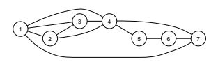
연습문제 88의 노드 7개로 이루어진 네트워크. - 각 쌍 \(\{x,y\}\)을 연결하는 간선의 존재 여부를 독립적인 공정한 동전 던지기로 정하여 노드 \(n\)개의 무작위 네트워크를 만든다. 크기 \(k\)인 클리크 수의 기댓값을 \(n,k\)로 구하라.
- 삼각형은 크기 3의 클리크이다. (a)와 같은 무작위 네트워크에서 삼각형 수의 분산을 \(n\)으로 구하라. 힌트: 가능한 각 클리크의 지시확률변수들 사이 공분산을 구하라. 지시확률변수는 \(\binom n3\)개이며 그중 일부 쌍은 종속이다. *(c) 다음이 성립한다고 하자.
\[\binom nk<2^{\binom k2-1}.\]
크기 \(k\)인 클리크도 안티클리크도 포함하지 않는 노드 \(n\)개의 네트워크가 존재함을 보여라. 힌트: 무작위 네트워크에서 원하는 성질을 가질 확률이 양수임을 보이는 것으로 충분한 이유를 설명한 다음 여사건을 생각하라.
ⓢ 셰익스피어는 알려진 작품들에 총 884,647단어를 썼다. 물론 많은 단어가 여러 번 사용되었으며 한 계산에 따르면 알려진 작품에서 서로 다른 단어 수는 31,534개이다. 이는 셰익스피어의 어휘 크기에 대한 하한이지만 셰익스피어가 알려진 작품에서 사용하지 않은 단어도 알았을 가능성이 크다.
더 구체적으로 셰익스피어의 새로운 시가 발견되었다고 가정하고, 이 새 시에 등장하지만 셰익스피어의 이전에 알려진 작품 어디에도 나타나지 않는 단어 수를 잘 예측하라는 겉보기에는 불가능한 문제를 생각해 보자.
로널드 시스티드와 브래들리 에프런은 논문 [8], [9]에서 이 문제를 연구하며 이론과 방법을 개발한 다음, 1985년 셰익스피어 연구자가 발견한 시의 저자가 셰익스피어인지 판단하는 데 그 방법을 적용했다. 아래 문제에서는 그 방법의 간단한 형태를 개발한다. 이 방법은 원래 컴퓨터과학의 창시자인 앨런 튜링과 I. J. 굿이 제2차 세계대전 중 독일의 에니그마 암호를 해독하기 위한 노력의 일환으로 발명했다.
셰익스피어가 알았던 서로 다른 단어 수를 \(N\)이라 하고 이 단어들에 1부터 \(N\)까지 번호가 매겨졌다고 하자. 간단히 하기 위해 셰익스피어가 \(A,B\)라는 두 편의 희곡만 썼다고 하자. 두 희곡은 상당히 길고 길이가 같다. \(1\le j\le N\)에 대해 단어 \(j\)가 희곡 A에 나타나는 횟수를 \(X_j\), 희곡 B에 나타나는 횟수를 \(Y_j\)라 하자.
- \(X_j\)를 포아송으로, \(Y_j\)를 \(X_j\)와 같은 모수의 포아송으로 모형화하는 것이 합리적인 이유를 설명하라.
- 셰익스피어가 만든 단어 ‘eyeball’이 두 희곡에 나타나는 횟수가 독립인 \(\operatorname{Pois}(\lambda)\) 확률변수라 하자. ‘eyeball’이 희곡 B에는 나오지만 A에는 나오지 않을 확률이 다음과 같음을 보여라.
\[e^{-\lambda}\left(\lambda-\frac{\lambda^2}{2!}+\frac{\lambda^3}{3!}-\frac{\lambda^4}{4!}+\cdots\right).\]
- 이제 (b)의 \(\lambda\)를 알 수 없어서 이러한 불확실성을 반영하기 위해 확률변수로 취한다고 하자. \(\lambda\)의 확률밀도함수를 \(f_0\)라 하자. ‘eyeball’이 희곡 A에 나타나는 횟수를 \(X\), B에서의 대응하는 값을 \(Y\)라 하자. \(\lambda\)가 주어졌을 때 \(X,Y\)의 조건부분포는 독립인 \(\operatorname{Pois}(\lambda)\) 확률변수들의 분포라고 가정한다. ‘eyeball’이 희곡 B에는 나오지만 A에는 나오지 않을 확률이 다음 교대급수임을 보여라.
\[P(X=1)-P(X=2)+P(X=3)-P(X=4)+\cdots.\]
힌트: \(\lambda\)를 조건으로 삼고 (b)를 이용하라.
- 모든 단어가 A와 B에 나타나는 횟수가 (c)와 같이 분포한다고 가정하되, \(\lambda\)는 단어마다 달라도 \(f_0\)는 고정되어 있다고 하자. 희곡 A에 정확히 \(j\)번 나오는 단어의 수를 \(W_j\)라 하자. 희곡 B에는 나오지만 A에는 나오지 않는 서로 다른 단어 수의 기댓값이 다음과 같음을 보여라.
\[E(W_1)-E(W_2)+E(W_3)-E(W_4)+\cdots.\]
이는 \(W_1-W_2+W_3-W_4+\cdots\)가 희곡 B에는 나오지만 A에는 나오지 않는 서로 다른 단어 수의 불편 예측량, 즉 평균적으로 올바른 예측량임을 보여 준다. 더 나아가 이 값은 \(f_0\)나 각 \(\lambda_j\)를 몰라도 희곡 A만 보고 계산할 수 있다. 이 방법을 여러 방식으로 확장하여 관측한 희곡을 토대로 관측하지 않은 희곡에 대한 예측을 할 수 있다.
옮긴이 주: 위의 조건부 확률질량함수는 \(P(Y=y)>0\)인 경우에 정의되므로 합도 그러한 \(y\)에 걸쳐 취한다. 베이즈 정리의 위 식에서도 분모 \(P(X=x)\)와 조건을 주는 \(P(Y=y)\)가 양수여야 한다.↩︎
옮긴이 주: 엄밀하게는 결합 누적분포함수의 단순한 미분 가능성만으로 충분하지 않다. 결합분포가 2차원 르베그 측도에 대해 절대연속이면 결합밀도가 존재하며, 그 밀도는 누적분포함수의 혼합편도함수와 적절한 조건 아래 거의 모든 곳에서 같다.↩︎
옮긴이 주: 나눈 값이 확률밀도함수가 되는 것은 \(f_X(x)>0\)인 경우이다. 밀도의 특정 버전이 0이거나 비정상적인 값을 갖는 점에서는 조건부분포의 선택에 주의해야 한다.↩︎
옮긴이 주: 작은 구간으로 조건화한 극한이 모든 \(x\)에서 존재하는 것은 아니며 밀도의 정규성과 버전에 주의해야 한다. 일반적으로 정규 조건부분포는 조건을 주는 변수의 분포에 대해 거의 모든 \(x\)에서 결정된다.↩︎
옮긴이 주: 밀도는 영집합에서 값을 바꾸어도 같은 분포를 나타내므로 이 등식들은 일반적으로 거의 모든 곳에서 성립하는 것으로 이해해야 한다.↩︎
옮긴이 주: 위 조건부 밀도는 \(f_X(x)>0\)인 \(|x|<1\)에서 정의된다. \(x=\pm1\)에서는 분모가 0이다.↩︎
옮긴이 주: 이 결론에는 \(p_0,p_1>0\)이 필요하다. 한 회사의 사전확률이 1이면 혼합은 퇴화하여 지수분포가 된다. (c)에서 1번 회사의 사후확률이 \(t\to\infty\)일 때 0으로 수렴하는 데에도 \(p_0>0\)이 필요하다. \(p_0=0\)이면 사후확률은 항상 1이다. \(p_1=0\)인 경우 \(I=1\)에 조건을 거는 통상적인 조건부분포도 정의되지 않는다.↩︎
옮긴이 주: 일반적으로 \(g\)는 가측이어야 한다. 이 책의 유한 기댓값 관례에서는 이산형 합 또는 연속형 적분의 절대수렴, 곧 \(E|g(X,Y)|<\infty\)가 필요하다. 연속형 공식은 결합확률밀도함수가 존재하는 경우에 적용한다.↩︎
옮긴이 주: 이 증명에서 적분을 나누고 순서를 바꾸려면 \(E|X|\)와 \(E|Y|\)가 유한하다고 가정한다. 또한 두 변수가 각각 연속분포를 따르더라도 결합확률밀도함수가 항상 존재하는 것은 아니므로 여기서는 그러한 밀도가 존재한다고 가정한다.↩︎
옮긴이 주: 이 절의 공식은 관련 기댓값과 공분산이 존재한다는 조건에서 사용한다. 상관계수와 분산의 성질에는 통상 유한한 2차 적률이 필요하고, 상관계수의 두 분산은 양수여야 한다.↩︎
옮긴이 주: 이 절의 공식은 관련 기댓값과 공분산이 존재한다는 조건에서 사용한다. 상관계수와 분산의 성질에는 통상 유한한 2차 적률이 필요하고, 상관계수의 두 분산은 양수여야 한다.↩︎
옮긴이 주: 원문의 척도 불변이라는 진술과 다음 식은 \(c>0\)일 때 성립한다. \(c<0\)이면 \(\operatorname{Corr}(cX,Y)=-\operatorname{Corr}(X,Y)\)이며, \(c=0\)이면 분산이 0이 되어 상관계수가 정의되지 않는다. 정리 7.3.5의 증명에서는 양의 표준편차로 나누므로 문제가 없다.↩︎
옮긴이 주: 이 예에서 양의 상관계수는 위 계산으로 확인되지만, 일반적으로 \(M\ge L\)이라는 순서 관계만으로 양의 상관관계가 보장되는 것은 아니다.↩︎
옮긴이 주: 이 식은 \(N>1\)에서 적용한다. \(N=1\)이면 표본의 흰 공 수가 결정되어 분산은 0이지만 표시된 보정 인수는 \(0/0\)으로 정의되지 않는다.↩︎
옮긴이 주: 확률이 0인 범주도 허용하므로 공식에서 \(0^0\)은 1로 해석한다.↩︎
옮긴이 주: \(p_j=0\) 또는 \(1\)인 경우에는 이항분포를 해당 상수값에 집중된 퇴화분포로 확장해 해석한다.↩︎
옮긴이 주: 표시된 조건부분포에는 \(P(X_1=n_1)>0\)과 \(p_2+\cdots+p_k>0\)이 필요하다. \(p_1=1\)이면 나머지 성분은 모두 0이지만 비율 \(p_j/(1-p_1)\)은 정의되지 않는다.↩︎
옮긴이 주: 성분이 종속이라는 서술에는 비퇴화 조건이 필요하다. 예를 들어 범주 하나의 확률이 1이면 모든 성분이 상수이므로 독립이기도 하다.↩︎
옮긴이 주: 공분산은 언제나 \(-np_ip_j\le0\)이지만, 상관계수는 두 분산이 양수일 때만 정의된다. 확률이 0 또는 1인 퇴화 경우에는 ‘음의 상관’이나 ‘완전 음의 상관’이라는 표현을 별도로 해석해야 한다.↩︎
옮긴이 주: 공분산은 언제나 \(-np_ip_j\le0\)이지만, 상관계수는 두 분산이 양수일 때만 정의된다. 확률이 0 또는 1인 퇴화 경우에는 ‘음의 상관’이나 ‘완전 음의 상관’이라는 표현을 별도로 해석해야 한다.↩︎
옮긴이 주: 포아송 횟수 \(N\)이 주어졌을 때 각 전투의 상대가 같은 확률벡터 \(p\)에 따라 서로 독립적으로 정해진다는 모형을 사용한다. \(\lambda p_j=0\)인 경우 포아송 분포는 0에 집중된 퇴화분포로 해석한다.↩︎
옮긴이 주: 공분산은 언제나 \(-np_ip_j\le0\)이지만, 상관계수는 두 분산이 양수일 때만 정의된다. 확률이 0 또는 1인 퇴화 경우에는 ‘음의 상관’이나 ‘완전 음의 상관’이라는 표현을 별도로 해석해야 한다.↩︎
옮긴이 주: 로그 도함수를 0으로 놓는 계산은 \(0<x<n\)인 경우 내부의 최댓값에 적용된다. 모수 공간을 \([0,1]\)로 확장하면 \(x=0\) 또는 \(x=n\)일 때 최대가능도추정값은 각각 경계 0 또는 1이다. 이 책의 앞선 정의처럼 \((0,1)\)만 허용하면 그 경계에서는 최댓값을 달성하지 못하고 상한만 존재한다.↩︎
옮긴이 주: \(n>0\)일 때 \(X_3=0\)에 양의 확률을 부여하고 표시된 비율을 정의하려면 \(p_1+p_2>0\)이 필요하다.↩︎
옮긴이 주: 아래 정의는 퇴화 정규분포도 허용한다. 공분산행렬이 특이한 퇴화 다변량 정규분포는 전체 공간의 르베그 측도에 대한 결합밀도를 갖지 않을 수 있다.↩︎
옮긴이 주: 분산이 0인 성분이 있으면 그 성분과의 상관계수는 정의되지 않으므로, 퇴화 경우까지 통일해서 지정하려면 상관계수 대신 공분산행렬을 사용한다.↩︎
옮긴이 주: 적률생성함수로 분포를 결정한다는 진술은 해당 적률생성함수가 여기서 정한 원점 근방에서 존재할 때 적용한다. 확률질량함수와 확률밀도함수도 분포 유형에 맞게 사용한다.↩︎
원주: 확률벡터의 독립은 확률변수의 독립과 유사하게 정의한다. 특히 \(\mathbf X_i\)의 결합확률밀도함수가 \(f_{\mathbf X_i}\)이면, 모든 \(\mathbf x_1,\mathbf x_2\)에 대해 \(f_{\mathbf X}(\mathbf x_1,\mathbf x_2)=f_{\mathbf X_1}(\mathbf x_1)f_{\mathbf X_2}(\mathbf x_2)\)가 성립한다는 뜻이다. 이 밀도 표현은 관련 밀도가 존재하는 경우이다.↩︎
옮긴이 주: 조건부 확률질량함수는 조건 사건의 확률이 양수인 경우에 위의 비율로 정의된다. 조건부 밀도의 비율도 분모가 양수인 범위에서 이해한다. 결합 누적분포함수의 혼합 편도함수와 결합밀도 사이의 관계는 해당 도함수가 존재하는 곳, 일반적으로 거의 모든 곳에서 성립한다. 임의로 택한 밀도의 버전에서는 독립성의 밀도 곱 관계도 거의 모든 곳에서 이해한다. LOTUS의 기댓값은 이 책의 유한 기댓값 관례에 따라 절대적분가능성 또는 절대합가능성이 필요하다.↩︎
옮긴이 주: 공분산과 상관계수는 해당 적률이 존재해야 하며, 상관계수에는 두 분산이 유한하고 양수여야 한다.↩︎
옮긴이 주: 결합 적률생성함수가 분포를 결정한다는 결과는 그 함수가 원점의 어떤 열린 근방에서 유한하게 존재할 때 적용한다.↩︎
옮긴이 주: 여기서 말하는 한 입력은 표준 코시 분포의 기본 위치와 척도를 사용하는 경우이다. R 함수에는 위치와 척도를 지정하는 선택적 인자도 있다.↩︎
옮긴이 주: 원문은 두 조건부 분포를 똑같이 반복한다. 두 번째가 무엇을 뜻하는지 원문만으로 확정할 수 없어 그대로 유지했다.↩︎
옮긴이 주: 이 힌트는 막대의 길이를 1로 정규화하여 \(a+b+c=1\)인 경우의 조건이다.↩︎
옮긴이 주: 통상적인 풀이에서는 상점의 무작위 선택이 고객 수 벡터와 독립이라고 가정한다. 선택 지표끼리의 독립성만으로는 이 가정이 보장되지 않는다.↩︎
옮긴이 주: 통상적인 풀이에는 두 직원의 응대시간이 서로 독립이고 관찰 시점의 잔여시간에 무기억성을 적용할 수 있는 가정이 필요하다.↩︎
옮긴이 주: 관련 기댓값과 공분산이 존재하는 경우로 해석한다.↩︎
옮긴이 주: 통상적인 임의보행 모형은 단계별 방향 선택이 서로 독립이라고 가정한다.↩︎
옮긴이 주: (d), (e)의 최대가능도추정에서 극단적인 표본은 \(0<p<1\) 안에서 최댓값을 갖지 않을 수 있다. 모수 공간을 \([0,1]\)로 확장하면 경계 추정값을 허용할 수 있다.↩︎
옮긴이 주: 이 결론에는 \(X\)와 \(Y\)의 독립성이 필요하다. 독립이면 \(c=-\lambda\)이다. 독립성 없이 일반적으로는 성립하지 않는다.↩︎